Leitura Moral e Cívica — História Regional
Histórias
da
Terra Mineira
por
(do Ginásio Mineiro e da Academia Mineira)
Obra Aprovada e Adotada pelo Conselho Superior de Instrução Pública do Estado de Minas
(Décima Segunda Edição)
(Com muitos desenhos)
Premiada com Medalha de Ouro
na Exposição Internacional do Centenário
Rio de Janeiro
Oficinas Gráficas de Irmãos Pongetti
1938
Certidão
“Certifico que é do teor seguinte o parecer do Conselho Superior de Instrução Pública do Estado de Minas Gerais sobre a obra didática “Histórias da Terra Mineira” (1.ª Série) pelo Dr. Carlos Fernandes Góes, professor do Ginásio Mineiro: “O Conselho é de parecer que seja aprovado esse trabalho, de acordo com a opinião do relator. Belo Horizonte, onze de março de mil novecentos e treze. — J. Carvalhaes. — J. Rangel. — Egidio Soares. — Assis Chagas. — Gomes Horta. — Francisco Magalhães. — Bento Ernesto Junior. — A. Joviano.”
Nada mais continha o parecer, ao qual me reporto e dou fé. Sexta Seção da Secretaria do Interior, Belo Horizonte, 23 de agosto de 1913. O Secretário do Conselho. — Vicente Racciopi.
Nº 1155
Obras Consultadas
DIOGO DE VASCONCELLOS — Historia Antiga das Minas Geraes.
JOSÉ PEDRO XAVIER DA VEIGA — Ephemérides Mineiras.
JOAQUIM FELICIO DOS SANTOS — Memorias do Districto Diamantinense.
IDEM — Acayaca.
OLIVEIRA LIMA — Formation historique de la nationalité brésilienne.
J. NORBERTO — Brasileiras Celebres.
ARCHIVO PUBLICO MINEIRO — Revista.
Título, autoria e propriedade registrados ex-vi da lei n. 496 de 1 de agosto de 1898. Serão apócrifos os exemplares, que não levarem a rubrica do Autor. Direitos reservados. Os contrafatores estarão incursos no art. 345 do Cód. Penal.
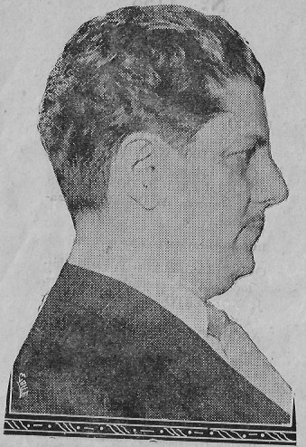
(1935-1939)
Atual Presidente do Estado de Minas Gerais
Prefácio da 1.ª Edição
De há muito a literatura escolar primária de Minas ressentia-se da falta de obra nos moldes da que ora temos a honra de oferecer à consideração dos Srs. mestres e dirigentes da instrução pública.
O plano do presente livrinho começou de formar-se em nosso espírito, quando nos capacitamos de que é dever patriótico ensinar às crianças de nossas escolas, sob a forma pitoresca de contos, a história retrospectiva desta grande fração de nossa Pátria — o Estado de Minas Gerais, berço que foi da Liberdade, celeiro com que se abasteceram a Metrópole e todo o resto da Colônia, centro de onde irradiaram para todo o Brasil os grandes movimentos nativistas, que vieram apressar o advento de nossa emancipação política e administrativa. Neste livro vão compendiados os momentos históricos, que concorreram a radicar em Minas o sentimento de nacionalismo, sentimento que atirou, uns contra outros, Brasílicos e Reinóis, que marcou a linha separatista entre os dois povos, e que cimentou de vez as nossas aspirações à Independência. O período cíclico da evolução histórica de Minas pode assinalar-se pelos seguintes estádios:
- a) as Entradas e Bandeiras (descobrimento do solo e sua consequente colonização);
- b) descobrimento das minas (ouro e diamantes) e sua consequente exploração;
- c) a imigração, e, como consequência, o povoamento;
- d) o espírito de nativismo (Emboabas, Sedição de Vila Rica, Inconfidência Mineira, etc.).
A educação cívica da infância é hoje o problema, que mais de perto entende com a concretização da nossa nacionalidade. Um povo só pode verdadeiramente ter a consciência de sua nacionalidade, quando se orgulha de seu passado e de suas tradições, — o que só se dá desde o momento, em que esse povo conheça os passos de sua História, possua cultura bastante para aferir o valor de seus heróis, e se inspire nos grandes lances, que heroificaram a seus avoengos. O passado de um povo é fonte inesgotável de ensinamentos e estímulos.
Os livros educativos da infância têm de ser a um tempo repositórios de ensinamentos morais e cívicos: se aqueles educam, estes instruem; se uns formam o homem, outros preparam o cidadão; se uns plasmam o caráter, outros afeiçoam o espírito; se uns habilitam o indivíduo para a sociedade, outros o arregimentam para a nação.
A literatura infantil de contos da carochinha, de histórias do outro mundo, de abusões e fantasmagorias é tudo quanto pode haver de mais nocivo ao espírito das crianças: torna-as supersticiosas, crédulas, medrosas, pusilânimes. Livros assim não deveriam ter curso nas escolas oficiais, porque, além dos inconvenientes apontados, nada adiantam civicamente. Têm só a vantagem de recrear a imaginação e empolgar a atenção, o que também pode ser conseguido em livros de leitura cívica, em que a História e o Romance se casem harmonicamente.
A literatura infantil, mais do que qualquer outra, tem o estrito dever de ser sadia e forte, e, sobretudo, de ser nacional, local, regional. Nisso, mais do que em qualquer outro passo, deve um povo ostentar a nota de uma personalidade própria. O assunto, o tema, o estilo, tudo terá de ser nacional, tipicamente nacional, inconfundivelmente nacional. Dar às crianças livros nesse gênero é nacionalizá-las desde logo, é forrá-las da condição étnica decisiva — o amor ao que é seu, o apego ao passado de sua História, o orgulho de sua raça, a consciência de sua nacionalidade, a absoluta confiança no futuro da Pátria!
Tais foram os sentimentos, que nos ditaram a feitura da presente obra, que oportunamente ofereceremos à consideração do colendo Conselho Superior da Instrução Pública do Estado. Os contos vão dispostos na ordem cronológica, em que se sucederam os fatos que narram; cada agrupamento de contos é referente a um dado momento histórico decisivo; os fatos narrados não são invencionices do autor, mas fatos históricos, absolutamente autênticos, segundo referem as obras, que consultamos, e que vão arroladas noutro local. Ao autor coube a tarefa de vazar em contos o que era apenas do domínio da História, de avivar com as tintas do romance o que a História apresenta a nu, por forma que o simples fato, romanticamente despido de interesse, assumisse, aos olhos da criança, o aspecto de uma aventura ou de uma epopeia, — isso sem prejuízo da verdade.
Oxalá possa este livro vir a preencher uma função: já não será um livro inútil, como tantos outros que nos têm caído da pena.
Carlos Góes.

Os Bandeirantes
Assim se chamavam os homens, que no século 17 se internaram pelo sertão do Brasil, à procura de ouro e pedras preciosas.
O nome Bandeirantes provém de uma bandeira, que era empunhada pelo chefe do bando: essa bandeira era um pano desfraldado, ordinariamente de cor, trazendo às vezes uma insígnia ou brasão.
As primeiras expedições, que demandaram o interior do Brasil, eram pequenas, organizadas sem ordem e sem método, e compunham-se de poucas pessoas, quase todas membros de uma mesma família: chamavam-se Entradas. Depois vieram expedições maiores, organizadas já com certa ordem e severa disciplina, e compostas de gente de toda espécie — eram como um pequeno exército. O chefe tinha um poder quase absoluto sobre seus comandados: todos lhe obedeciam cegamente. Essas expedições maiores é que se chamavam Bandeiras.
Os Bandeirantes foram verdadeiramente os colonizadores do Brasil: a eles deve-se a propagação da língua portuguesa aos limites extremos de nosso território, o descobrimento das minas, a fundação de cidades, o povoamento do solo, numa palavra — a colonização do Brasil e os fundamentos da nossa nacionalidade.
Vinham quase todos de S. Paulo e da Bahia, que nessa época eram simples capitanias: eram, pois, Brasileiros, filhos já do país, amando o Brasil como sua pátria, e perfeitamente aclimados com as intempéries do sertão.
Chamava-se SERTÃO a porção territorial, que ficava no interior do país, completamente desconhecida, habitada por índios selvagens (alguns deles antropófagos, isto é, comedores de gente), por feras daninhas, por cobras venenosas, e ainda assolada por febres de mau caráter chamadas sezões e maleitas.
Para impedir que os Bandeirantes se internassem em seus domínios, procuraram os índios aterrorizá-los, contando que as florestas eram habitadas por entes sobrenaturais, entre os quais o Curupira e o Caapora.
Os Bandeirantes não deram o menor crédito, pois eram bastante inteligentes para compreender que não pode haver entes sobrenaturais.
Para abrir caminho pelo sertão, os Bandeirantes vinham munidos de facões, foices e outros instrumentos. Para transpor um rio, — ou o passavam a vau (se o rio não era fundo), ou ali mesmo improvisavam uma balsa, em que se transportavam para a outra margem. Passavam o mesmo rio três, quatro, e mais vezes: daí os nomes de Passa-Três, Passa-Quatro, Passa-Cinco, Passa-Sete, Passa-Dez, Passa-Vinte, dados a diversas localidades do nosso Estado (1).
(1) Respectivamente nos municípios de Lavras, Passa-Quatro, Pomba, Piranga e Aiuruoca.
Alimentavam-se de caça do mato, de frutas silvestres, de mel de abelha, de peixe dos rios, etc.
Vinham ao acaso, confiados na boa estrela de seu destino. Ao partir para o Sertão, despediam-se de sua mulher e filhos, contando como certo não mais voltar. Levavam mantimento só para as primeiras semanas. Acabado este, passavam a alimentar-se do que o solo, a pesca e a caça lhes poderiam fornecer. Quando chegavam a uma encruzilhada e não sabiam para que lado tomar, — deixavam que a sorte decidisse: fincavam a bandeira na bifurcação dos caminhos e ficavam esperando que o vento a desfraldasse: para o lado que o vento impelisse as dobras da bandeira, por esse é que seguiam.
Não possuíam os modernos instrumentos de engenharia, que ainda não tinham sido inventados. Os Bandeirantes mais preparados faziam uso do astrolábio, instrumento que permite medir a latitude e a longitude de um lugar, observando os astros. Os menos instruídos guiavam-se pelos cimos das serras e pelos vales dos rios, acontecendo-lhes muitas vezes errar o caminho, quando voltavam pela segunda vez, pois o aspecto das serras e o dos rios mudam com as estações, e a memória nem sempre é fiel. Os rios e montes de nosso Estado, que mais se celebrizaram por ter servido de guia aos sertanistas, foram: O RIO DOCE e o RIO DAS VELHAS, o monte do ITAMBÉ (no norte de Minas, entre Serro Frio e Diamantina), o monte ITACOLOMI (a 8 km. de Ouro Preto) e o monte ITATIAIA (um dos mais altos do sistema orográfico do Brasil, na Serra da Mantiqueira, na divisa de nosso Estado com o de São Paulo).
A sua jornada compreendia dois períodos: o do tempo das águas e o do tempo da seca.
A época das águas era o período das chuvas, — chuvas que alagavam os campos, faziam transbordar os rios e empapavam a terra. Não podendo seguir viagem, que faziam eles? Arranchavam num pouso, isto é, numa espécie de chapada ou planalto abrigado dos ventos, armavam aí as suas barracas, roçavam o mato, semeavam o milho, o feijão, a ervilha, a abóbora. Chamava-se arraial o lugar, onde acampavam: daí o nome de “arraial”, que ainda hoje se dá aos pequenos povoados.
Ao cabo de quatro ou seis meses (exatamente quando cessavam as chuvas), já a plantação estava formada: era só colher os cereais e com eles abastecer os alforjes. Tinham provisões para outros seis meses, que era o tempo da seca.
Na época da seca as chuvas cessavam: o céu mantinha-se desanuviado, límpido e azul; o sol enxugava a água dos poços e a lama dos caminhos. Podiam seguir livremente. Mas pior inimigo os esperava — eram as febres, produzidas pelas ferroadas dos mosquitos. Esses mosquitos nasciam das águas estagnadas dos brejos e dos pântanos, e formavam verdadeiras nuvens, que enxameavam os ares. Essas febres caracterizavam-se por tremores no corpo, suores frios, delírio. Os que podiam salvar-se, seguiam seu caminho; os que eram vencidos pela enfermidade, morriam pelas estradas. Cada corpo sepultado numa cova rasa, tendo espetada uma cruz tosca de pau, era como um marco a atestar às gerações vindouras a coragem desses intrépidos aventureiros.
No percurso de S. Paulo à zona, onde hoje se acha Ouro Preto, gastavam os Bandeirantes no mínimo 2 meses (1). Até à raiz da Serra da Mantiqueira vinham montados; da Serra da Mantiqueira por diante era impossível seguir a cavalo, por causa das dificuldades, que oferecia o percurso, cortado de desbarrancados, rampas, perambeiras, etc. Daí por diante, isto é, em território mineiro, eram forçados a marchar a pé; quando muito, faziam-se transportar em redes, que eram carregadas por escravos. Não marchavam da manhã à noite, mas só até ao meio-dia ou 1 hora da tarde. Nessa hora arranchavam para repouso, procurar caça, pescar, tirar mel de pau, etc.
O seu roteiro de S. Paulo a Minas (Ouro Preto) era o seguinte: Partiam de S. Paulo até à Serra da Mantiqueira, passando por Penha — Mogi — Jacareí — Taubaté — Pindamonhangaba — Guaratinguetá (o mesmo percurso, que faz hoje a Estrada de Ferro Central). Depois de transposta a Serra da Mantiqueira (Amantiquira), o seu roteiro era: Pinheiros — Rio Verde — Boa Vista — Ubaí — Ingaí — Rio Grande — Rio das Mortes e Serra de Itatiaia. Da Serra de Itatiaia partiam dois caminhos: um, que ia dar a Mariana e Ouro Preto; outro, que ia sair no Rio das Velhas.
Devemos agora deixar aqui apontados os nomes dos principais Bandeirantes, que concorreram para a colonização de nosso Estado, conhecido nessa época por Campos de Cataguás. Foram eles: SEBASTIÃO FERNANDES TOURINHO, vindo da Bahia, o qual se internou até aos rios Doce, Manhuaçu e Jequitinhonha; ANTÔNIO DIAS ADORNO, vindo também da Bahia, o qual avançou até à Serra dos Aimorés; MARCOS DE AZEREDO, que, partindo de S. Paulo, veio alcançar o rio Sapucaí e o rio Grande, no sul de Minas; Fernão Dias Pais Leme, o mais notável de todos, que varou o nosso Estado de sul a norte, ao cabo de sete anos de jornada, e de quem nos ocuparemos mais detidamente na história que segue; ANTÔNIO RODRIGUES ARZÃO, que passa por ter sido o primeiro, que descobriu ouro em nosso Estado; LOURENÇO CASTANHO TAQUES e muitos outros.
(1) O prazo de dois meses parece-nos muito pouco, mas quem o afirma é ANTONIL (vid. Revista do Archivo Publico Mineiro, ano IV, fascículos III e IV).
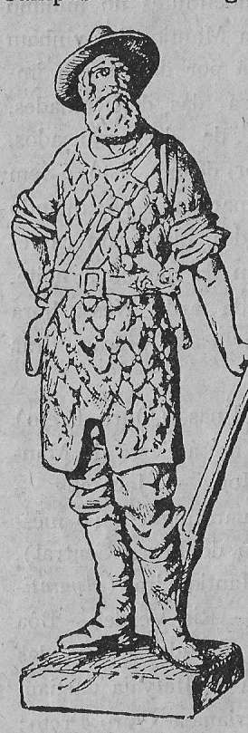
O Governador das Esmeraldas
Assim se chamava, por título que lhe foi dado pelo Rei de Portugal, o famoso bandeirante paulista Fernão Dias Pais Leme, que no segundo meado do século 17 se internou em nosso Estado, para o fim de descobrir as MINAS DE ESMERALDAS, que ficavam numa serra muito falada por nome Serra Resplandecente.
Era ele varão de sessenta anos de idade (descendente dos Holandeses, que haviam invadido o Norte do Brasil), de barba patriarcal, que lhe descia até ao peito, cabelos arruivados já meio embranquecidos, olhos azuis, pele alva e fina, nariz aquilino, alto de estatura, membros reforçados. Chefe de numerosa família, possuía seis filhas e dois filhos, já todos crescidos e alguns casados.
Tendo resolvido firmemente vir a Minas descobrir para o Rei de Portugal as famosas esmeraldas de Araçuaí, — sua família logo se opôs a essa tenção, por considerar que, velho como se achava, não teria forças para enfrentar viagem tão arriscada e penosa.
Fernão Dias, porém, era homem que não cedia. Embora contrariando sua mulher e filhas, partiu de São Paulo para essa trabalhosa jornada, trazendo consigo, além de muitos índios mansos e catequizados (seus escravos), um filho extramatrimonial, um filho legítimo, um genro, afora outros parentes e alguns amigos.
Sete anos gastou ele de S. Paulo até ITACAMBIRA (Norte de Minas), tendo percorrido a pé cerca de dois mil quilômetros ou sejam quase trezentas e quarenta léguas, sendo obrigado a abrir caminho no mato fechado, a enfrentar as feras, a vadear rios, a galgar serras — sofrendo toda sorte de privações, passando fome e sede, e vendo morrer a cada passo, acometidos de febres, muitos de seus companheiros...
Nesse seu percurso prestou assinalados serviços a nosso Estado: Transpôs a serra da MANTIQUEIRA; fundou o sítio, que mais tarde deu origem à cidade de BAEPENDI; fundou o arraial de IBITURUNA (hoje distrito do município de Bom Sucesso), o de S. ANA DO PARAOPEBA (hoje distrito do município de Bonfim), o de S. JOÃO DO SUMIDOURO (hoje distrito do município de Santa Luzia); margeou o RIO DAS VELHAS (chamado naquela época rio Uaimií), fundou o arraial de ITACAMBIRA e aí descobriu, por fim, na serra que é hoje a serra do GRÃO MOGOL, as tão celebradas pedras verdes, que ele supunha fossem esmeraldas, mas na verdade não passavam de turmalinas.
Todos os seus bens, que constavam de fazendas, gados e muitos escravos, ele os vendeu para gastar com a expedição, a qual lhe custou a quantia de sete mil cruzados. No meio da jornada, vendo-se sem recursos para pagar a alguns expedicionários, mandou um portador a S. Paulo com carta a sua mulher, em que lhe pedia que vendesse o resto de suas propriedades para, com o produto resgatar seus compromissos. Ela assim o fez — chamava-se tão distinta senhora D. MARIA GARCIA BETIM, — e, não somente vendeu a casa em que morava, mas até suas joias e as joias das próprias filhas! Exemplo digno de ser imitado! O mesmo portador da carta levou consigo o dinheiro, a tempo ainda de Fernão Dias pagar as suas dívidas.

Mas o fato principal de toda a sua jornada foi o castigo que, para cumprir a Lei, fez aplicar a seu filho José Dias.
Era este um mameluco (1) dotado de maus instintos, o qual chefiara uma conspiração contra seu próprio pai no sentido de dissuadi-lo de prosseguir na jornada. Descoberta a conspiração, Fernão Dias deu a sua palavra de que faria sentenciar o cabeça. Aberto o inquérito, foi logo apurado que o chefe era seu próprio filho! Fernão Dias não voltou atrás a sua palavra: condenou seu filho à forca! Assim se cumpriu. José Dias expiou no patíbulo o crime de se haver revoltado, não contra seu pai, mas contra seu chefe e senhor! Assim dispunham as Leis daquele tempo. E Fernão Dias não era homem que deixasse de cumprir a Lei, fosse embora para poupar a vida a seu filho!
Quanto aos cúmplices do filho, Fernão Dias expulsou-os da bandeira, com ordem de se refugiarem longe de seu acampamento.
Retirando-se do Sumidouro, os cúmplices de José Dias foram fundar um arraial no sítio, em que está hoje edificada a cidade de SETE LAGOAS, cujos fundamentos lançaram.
(1) Chama-se mameluco o filho de Índio com Branco.
De regresso para S. Paulo, satisfeito por ter cumprido sua missão, Fernão Dias Pais Leme, já com setenta anos de idade, adoeceu gravemente das febres mortíferas do sertão, vindo a expirar nos braços de seu filho legítimo GARCIA PAIS, à margem do rio Uaimií (hoje Rio das Velhas).
Depois de morto, seu corpo foi embalsamado e transportado numa rede, por seu filho Garcia, até à vila de S. Paulo, sendo sepultado no mosteiro de São Bento (de que o finado era irmão), e que em tempo mandara edificar à sua custa.
A Lenda das Pedras Verdes
No século 17 corria mundo a notícia de que no Norte de Minas ficava uma serra muito alta — a Serra Resplandecente, assim chamada porque, quando o sol nascente projetava sobre ela os seus raios, logo a serra começava a brilhar (resplandecer), cheia de cintilações verdes.
Os Portugueses ouviram dos índios a notícia da existência dessa serra maravilhosa. A notícia correu mundo — foi parar a S. Paulo, à Bahia e até a Portugal.
Os reis de Portugal, muito ambiciosos, querendo apossar-se das riquezas do Brasil (que nesse tempo era sua colônia), prometeram mundos e fundos àqueles, que descobrissem a tão falada Serra, onde pensavam existir um tesouro igual ao das Mil e uma Noites.
Naquele tempo “ser nobre” era a maior aspiração de um homem, que se prezasse. Receber do Rei o título de barão, conde, marquês, ou duque era a honra mais alta, que se poderia obter.
Muitos Brasileiros, desejosos de se tornarem nobres, resolveram sair à procura da Serra Resplandecente. É claro que o descoberto ficaria pertencendo ao rei de Portugal, que era o único dono de todas as minas existentes e por existir no Brasil. Mas o descobridor receberia do Rei um título — o que não era pouco. E isso, por si só, constituía honra tamanha, que não havia quem a não quisesse.
Então muitos Bandeirantes largaram da Bahia e de S. Paulo, e internaram-se em nosso Estado à procura da Serra.
Era crença geral que a Serra devia conter muitas esmeraldas (pedras preciosas de cor verde), por isso que, quando o sol dardejava sobre ela, os reflexos da Serra eram iguais aos de uma superfície incrustada de pedras verdes.
Então os Bandeirantes vieram. Foram: SEBASTIÃO FERNANDES TOURINHO, ANTÔNIO DIAS ADORNO e MARCOS DE AZEREDO. Este último conseguiu atingir a serra luminosa, levou até de amostra algumas pedras ao Rei, mas, não tendo querido revelar o segredo de seu paradeiro, foi encarcerado, vindo a morrer na prisão.
O Rei (que era então D. Afonso VI), tendo ouvido falar que em S. Paulo havia um destemido Bandeirante por nome FERNÃO DIAS PAIS LEME, deu-lhe o título de GOVERNADOR DA TERRA DAS ESMERALDAS, prometeu fazer nobre toda a sua descendência, — com a condição, porém, de sair pelo sertão adentro para ir desencantar a Serra Resplandecente, que Marcos de Azeredo não quisera revelar.
Fernão Dias Pais Leme foi, conforme vimos na história precedente. Só depois de muitos anos e muitas peripécias conseguiu chegar ao sítio verdadeiro, onde ficava a Serra. Tendo chegado à noite, esperou que o sol rompesse para certificar-se se era mesmo a Serra.
No dia seguinte, mal o sol abriu, — uma alterosa Serra em frente começou a jorrar uma luz verde e maravilhosa. No sopé da serra ficava uma lagoa — a Lagoa Vupabuçu.
Fernão Dias teve logo a certeza de que era ali mesmo.
Não tardou muito que fosse aprisionado um índio da tribo dos Mapaxós, por nome Silvestre. Interpelado o índio, contou a razão por que a Serra continha em seu seio tantas esmeraldas.
Rezava assim a lenda (1):
A mãe-d'Água (Uiara) habitava as águas na lagoa de Vupabuçu. O seu canto seduzia os guerreiros. Nas noites em que no Céu vogava a lua cheia (Cairê), a Uiara subia à tona d'água e cantava. Canto tão doce e suave que atraía os guerreiros. E a Uiara estendia os braços para o guerreiro, e o guerreiro afundava no lago e não voltava mais. Então os Mapaxós pediram ao deus da guerra (Macachera) que salvasse os guerreiros. O deus da guerra mandou que a Uiara dormisse, mas que os Mapaxós velassem o seu sono e a sua vida. Os seus cabelos eram verdes do limo das águas, que borda o fundo dos lagos. E, muito longos, os seus cabelos entraram pela terra, e, como eram d'água, em contato com a terra, viraram pedra. E o Macachera disse: “A vida da Uiara está em seus cabelos. Um fio de menos será um dia de vida que se perca. Quem arrancar as pedras verdes terá arrancado o sono, ou a vida da Mãe-d'Água. Os Mapaxós serão os guardadores do seu sono. E se a Uiara acordar, ou morrer, — uma grande desgraça pesará sobre Vós!
(1) Extraída da obra do mesmo autor O GOVERNADOR DAS ESMERALDAS, peça nacional histórica em 3 atos, in-16-1911.
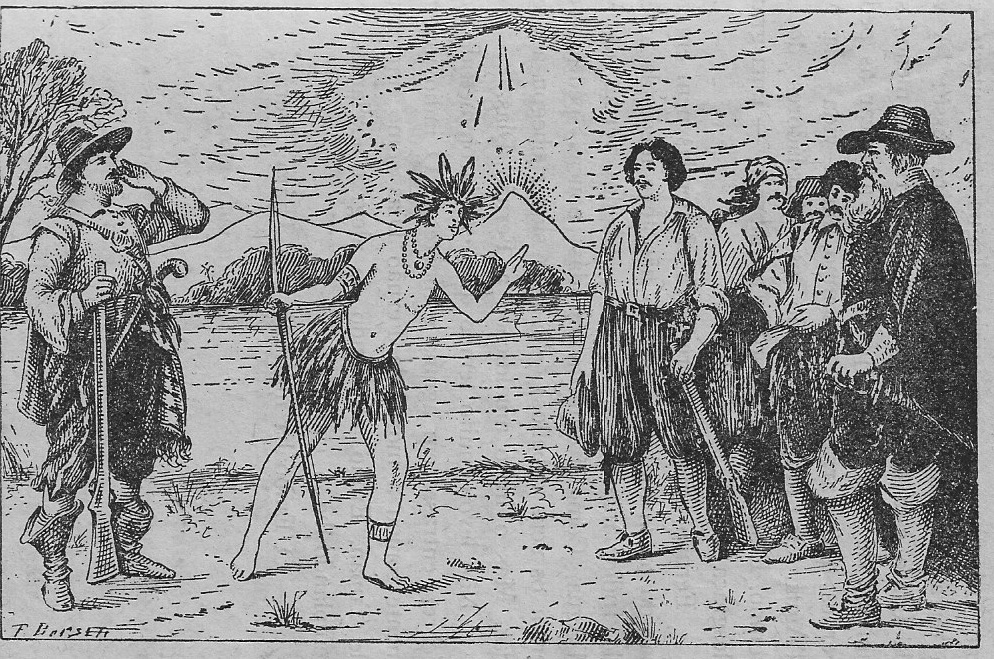
Fernão Dias não acreditava em lendas nem em coisas do outro mundo. Por isso não teve medo da ameaça do Índio: mandou arrancar os cabelos verdes da Mãe-d'Água. Como foram arrancadas poucas pedras (que eram os seus cabelos), ela nem sequer chegou a acordar. Mas o índio amaldiçoou a Fernão Dias.
Não levou muito tempo que este, acometido pelas febres, entrasse em agonia e morresse. O índio ingenuamente tomou a morte de Fernão Dias como um castigo de Tupã. Então, exultando de alegria, exclamou, contemplando-lhe o cadáver:
— O Emboaba morreu... A Uiara viverá!
Borba Gato
Assim se chamava o Bandeirante, que fundou a cidade de SABARÁ, uma das mais antigas de nosso grande Estado, edificada à margem do histórico e lendário Rio das Velhas (antigo Uaimií).
Borba Gato era Paulista de nascimento e genro de Fernão Dias. Veio com seu sogro na célebre “expedição das esmeraldas”, e com ele descobriu em Sabará ricas minas.
Tendo Fernão Dias de prosseguir em sua expedição para ir desencantar as Esmeraldas, que ainda estavam por descobrir, deixou em Sabará seu genro Borba Gato tomando conta das minas.
Borba Gato era homem de gênio exaltado, destemido e valente, capaz das maiores temeridades. Sabendo disso, seu sogro recomendou-lhe, antes de partir, que não se alterasse para o futuro, se alguém, de ordem do Rei de Portugal, se lhe apresentasse para tomar as minas. Borba Gato prometeu, mas infelizmente não pôde realizar a promessa, porque as coisas chegaram depois a tal pé, que só por covardia poderia o Borba recuar.
Foi o caso que o Rei de Portugal (que era então Dom Pedro II) despachou para o sertão de Minas um fidalgo espanhol, cheio de muita prosápia, por nome Dom Rodrigo de Castel Branco, a quem o Rei conferiu o título de “Administrador Geral das Minas” e a quem deu jurisdição sobre as minas descobertas e por descobrir.
Ora, muito antes, já no século 17, o Rei de Portugal (que era então Dom Afonso VI, antecessor de Pedro II) dera também jurisdição a Fernão Dias Pais Leme sobre as minas, que o mesmo viesse a descobrir, nomeando-o para isso “Governador da Terra das Esmeraldas”. Fernão Dias, ao partir de Sabará, transferiu a jurisdição a seu genro, a quem deixou como sucessor, e a quem investiu na posse e senhorio das minas.
Chegando a Sabará o espanhol Dom Rodrigo, quis à viva força tomar, em nome del-Rei, as minas já sujeitas à jurisdição de Fernão Dias por provisão anterior da Corte de Portugal. O Borba, naturalmente, opôs-se, vendo nisso uma exautoração a seu sogro. Começaram a arengar os dois chefes, não chegando a brigar por causa da intervenção de terceiros.
Acalmados os ânimos, combinaram os dois realizar a sós uma conferência em sítio apartado, aí comparecendo sem armas, apenas acompanhados por seus pajens. Assim fizeram. No que estavam na conferência o Borba exaltou-se, Dom Rodrigo também. Nesse entrementes, um dos pajens de Borba, receando por seu amo, levou o trabuco à mira e varou de lado a lado o corpo de Dom Rodrigo, que logo caiu morto, — donde veio chamar-se o lugar, em que ocorreu esta tragédia, ALTO DO FIDALGO, nome que ainda hoje conserva.
Matar um “fidalgo” (houvesse, ou não, razão) constituía naquela época o maior dos crimes. O fidalgo era assim uma espécie de “pessoa sagrada”, em quem não se podia tocar. Para ele todos os privilégios eram poucos. Quanto aos Brasileiros, nem ao menos podiam ser livremente senhores de suas propriedades. Tempos de usurpação e tirania!
Sabendo o Borba que fora responsabilizado pela morte de Dom Rodrigo, deliberou fugir para o “sertão bruto”, para assim escapar ao castigo da Corte de Portugal. Assim fez, embrenhando-se em regiões somente habitadas por índios, de quem se fez muito benquisto e de quem se tornou o chefe (cacique). Aí fundou muitas fazendas de criação, as quais deram origem à indústria pastoril, que faz hoje a riqueza de nosso Estado.
A barba, o cabelo e as unhas cresceram-lhe; calejaram-lhe os pés e as mãos; a pele requeimou-se-lhe, tomando uns tons fulvos e acobreados. Isso, aliado a uma voz de trovão e a um gênio irascível, fazia do Borba uma aparição sinistra.
Anos se passaram. Ralado de saudades da família, que deixara em Piratininga (S. Paulo), e de quem não tinha notícias, resolveu um dia Borba Gato dirigir-se oculto à Vila de S. Paulo, para rever os entes, que mais caros lhe eram no mundo.
Foi. Suas filhas estavam moças, algumas casadas. Sua mulher vivia, posto que de meia idade. Com mil cautelas conseguiu o foragido penetrar na casa, que era sua.

Bateu. Quis a sorte que a primeira pessoa a aparecer-lhe fosse sua própria mulher, a quem logo reconheceu. Borba Gato caiu de joelhos, rendendo graças, e logo se deu a conhecer. Disse-lhe que ali viera às ocultas, receando ser preso pelo crime que praticara, e que todo o seu desejo era revê-la, e às suas filhas, para pôr termo a tanta saudade.
D. MARIA LEITE (que assim se chamava sua esposa) recuou aterrada! Não era possível que aquele homem feio, feroz, torvo, cabeludo, fosse de fato seu marido! Era talvez um louco, ou um impostor, que se inculcava como tal!
Debalde Borba Gato jurou que era ele em pessoa! Debalde pediu-lhe que fizesse vir à sua presença suas filhas, em cujas frontes queria depor o ósculo paternal. Foram inúteis suas juras, como também tantas lágrimas e súplicas!
D. Maria Leite intimou-o a sair. Cabisbaixo, trêmulo, envergonhado, Borba Gato obedeceu.
E, demorando um último olhar no rosto daquela, a quem se unira como esposo, e de quem se via agora repelido, — saiu com o coração aos pedaços, a garganta afogada em soluços, os olhos em torrentes de lágrimas!...
O Anhanguera
Bartolomeu Bueno da Silva era um destemido bandeirante paulista, que largou de São Paulo e se entranhou em Minas, atrás das Minas de SABARÁ-BUÇU, que antes haviam sido descobertas por Borba Gato. Tinha a idade de 70 anos, quando promoveu essa incursão. Todos o tratavam por Feio, porque era efetivamente de feições horrendas.
Não decorreu muito tempo e vieram juntar-se-lhe dois genros e primos: um, JOÃO LEITE ORTIZ, que foi ocupar as minas da Serra do Curral del-Rei, nas proximidades da que é hoje a capital de nosso Estado; outro, DOMINGOS RODRIGUES DO PRADO, que veio depois a ser chefe de importante revolta em Pitangui.
Bartolomeu Bueno Feio apossou-se de grande extensão de terras e minas, entre o Rio das Velhas e o Pará. Quando houve a Guerra dos Emboabas, pelejou ao lado dos Nossos, e foi adversário implacável dos Portugueses.
Acabada a guerra, Bartolomeu Feio achou mais acertado retirar-se de Minas, para evitar que a luta recomeçasse. Tendo ouvido falar na existência de riquíssima mina de ouro lá para as bandas de Goiás, — a Mina dos Martírios, Bartolomeu resolveu partir com sua denodada gente para aqueles lados.
Foi. Organizou para isso uma grande expedição. Depois de jornada trabalhosa, em que teve de transpor serras, e vadear rios, e enfrentar toda sorte de perigos, — chegou finalmente ao sertão, onde começava o território, que é hoje o Estado de Goiás.
Era essa região habitada por Índios Goianases, — por isso tomou o nome de Goiás, que é uma abreviatura de Goianás. Esses índios eram muito bravios. Opuseram-se logo à entrada de Bartolomeu Feio. Este perguntou-lhes se de fato ficava para aqueles lados a Mina dos Martírios; os índios responderam que sim. Isso mais aguçou o desejo de Bartolomeu Feio entrar aquela terra. Mas os índios eram em número muito superior à sua gente: combatê-los era contar com a morte, pois seria facilmente vencido.
Vendo-se nesse aperto, que fez então Bartolomeu Feio? Não podendo vencer pela força, resolveu vencer pela esperteza. O que veio salvá-lo foi a instrução, como vamos ver:
Bartolomeu conhecia a fundo a História do Brasil: era homem bastante instruído para aquele tempo: fora educado no colégio dos Jesuítas, em S. Paulo, então o melhor colégio do Brasil. Sabia que na Bahia um português, que se salvara do naufrágio (Diogo Álvares Correia), conseguira vencer os índios pelo terror, que lhes causara com o disparo de uma espingarda, — arma de fogo e de alcance, que então os selvagens não conheciam: daí o apelido que lhe puseram, de CARAMURU (homem do trovão).
Os índios Goianases já conheciam as armas de fogo usadas pelo homem civilizado: por esse lado não poderia aterrorizá-los. Resolveu, porém, imitar a façanha de Caramuru, servindo-se de outro objeto, que os selvagens não conhecessem.
No que os índios estavam se opondo à sua entrada, Bartolomeu, com voz de trovão e uma cara muito feia e carrancuda, bradou:
— Se Vocês não me deixarem entrar, farei secar todos os rios e lagos, e Vocês morrerão de sede! Farei com que a água vire fogo!
Os Índios não tinham instrução alguma: eram muito broncos e estúpidos. Eram, sobretudo, supersticiosos, isto é, acreditavam em coisas do outro mundo, em fatos sobrenaturais. Os Goianases ficaram logo com medo da ameaça de Bartolomeu Feio, mas só acreditariam, se vissem com seus olhos. Então Bartolomeu lhes marcou o prazo de um dia e uma noite para realizar a ameaça.
Quando foi no dia seguinte, de manhã, ainda escuro, mandou saber dos índios a resposta. Estes disseram que se opunham terminantemente à sua entrada. Então, com a voz mais retumbante e a cara mais carrancuda que na véspera, Bartolomeu disse que “iria virar a água em fogo”. Os índios ficaram olhando, na dúvida. Bartolomeu pegou de um morrão aceso na ponta: esse morrão era um canudo com duas pontas, cheio de pólvora seca: a ponta acesa ficou fora d'água: a ponta apagada (que estava tapada) ele a mergulhou na água para fingir que o fogo provinha de dentro da lagoa. Quando o fogo da ponta acesa do morrão se comunicou à pólvora do canudo, — este começou a despejar de dentro para fora d'água um verdadeiro repuxo de fogo. Esse fogo espirrava longe, e, além disso, estrondeava, fazendo parecer (a quem fosse ignorante) que o fogo saía das próprias entranhas da lagoa! Os índios ficaram espavoridos: — esparramaram todos. Uns pegaram a fugir; outros soltavam gritos; outros esperneavam no chão; estes caíam de joelhos; aqueles escondiam-se no mato — todos, enfim, ficaram transidos de medo, pensando ter assistido um fato sobrenatural!

Nesse mesmo dia o cacique da tribo apresentou-se a Bartolomeu Feio, depondo as armas, e dizendo que ele poderia entrar no campo dos Goianases, desde que lhes poupasse os rios e os lagos.
Desde esse dia os índios ficaram tendo a Bartolomeu Feio como um ser sobrenatural, como um homem encantado, como um aliado de Tupã. Puseram-lhe o apelido de Anhanguera, palavra que quer dizer Diabo Velho. Escusado será dizer que o trataram sempre com o maior respeito, e nunca deixaram de prestar-lhe obediência.
Graças a essa manha Anhanguera entrou em Goiás, e ficou na História como o descobridor e colonizador do vizinho Estado. Não conseguiu descobrir a Mina dos Martírios, mas encontrou outras, muitas outras, voltando riquíssimo, carregado de ouro e pedras preciosas.
Ao entrar em S. Paulo, tendo então 80 anos de idade, foi recebido com muitas festas. Todos se admiravam de que ele houvesse podido amansar índios tão bravios como eram os de Goiás.
O apelido de Anhanguera dura até hoje. Em Goiás os índios ainda falam de “um diabo velho, que quis virar a água em fogo, secar os rios e os lagos.”
Por aí se vê que a ignorância é o maior atraso do homem. Se os índios não fossem ignorantes, não teriam acreditado no embuste de Bartolomeu Feio e não se teriam deixado conquistar tão facilmente. Por outro lado se verifica que a instrução é muitas vezes a salvação de uma pessoa: se Bartolomeu Feio não fosse instruído, como era, e não soubesse, pelos livros, do caso de Caramuru, sucedido na Bahia, não o teria imitado e não se teria salvado.
As Minas de Ouro
Durante muito tempo, na época em que o Brasil era colônia de Portugal, ignorou-se que houvesse minas de ouro em nosso Estado. Até então só se haviam descoberto jazidas de turmalinas, no Norte de Minas, — pedras que por esse tempo não tinham nenhum valor, e a princípio se supôs que fossem esmeraldas.
O encontro das minas de ouro deu-se nos fins do século 17, quase duzentos anos depois do descobrimento do Brasil, e foi, como sempre acontece, obra do acaso.
O primeiro rio, em que se notou a existência de ouro em nosso Estado, foi o córrego Tripuí, que banha o município de OURO PRETO, a poucos passos da ex-capital de Minas.
Um mulato paulista, vindo de TAUBATÉ, o qual percorria o sertão à cata de índios, que aprisionava para depois vender como escravos, e que já estivera nas minas de Paranaguá e Curitiba (hoje Estado do Paraná), tinha arranchado nas imediações do sítio, onde depois se edificou Vila Rica. Sentindo sede, desceu à procura de uma fonte. Acertou de dirigir-se ao córrego de Tripuí, no qual mergulhou uma gamela para tirar água. Notou logo que a água era turva e escura; notou mais que no fundo da gamela estavam depositados uns granitos cor de aço. O mulato imaginou que os tais granitos seriam de ferro e que, portanto, valeriam pouco mais de nada. Todavia, por precaução, guardou-os consigo, e levou-os para Taubaté. Ali chegando, vendeu-os a um bandeirante por nome Miguel de Sousa, à razão de meia pataca a oitava, pois tanto um como outro não sabiam que minério fosse aquele. Este, por sua vez, fez remessa dos granitos ao Governador do Rio de Janeiro ARTUR DE SÁ, para que mandasse examinar por pessoa entendida a ver o que era. Feito o exame por peritos, — verificou-se que era ouro finíssimo, ouro gemado, ouro de 23 quilates! (1)
Estavam assim descobertas as minas de ouro em nosso Estado. Ia começar para o Distrito (que só depois desse fato é que passou a chamar-se das Minas, e antes se chamava CATAGUÁS) uma era nova, — a era ao mesmo tempo da riqueza e da miséria, da opressão por parte da Metrópole, e dos crimes de toda sorte entre os mineradores.
Miguel de Sousa, ousado e destemido, ao saber do resultado do exame, resolveu empreender sozinho uma batida até ao sertão, para ver se aprendia o caminho ou itinerário para o Tripuí. Foi. Depois de muitos meses de travessia longa, depois de ter transposto, a pé, a SERRA DA MANTIQUEIRA, os Campos Gerais e a Serra das Taipas, veio afinal a dar com o Tripuí (rio de água turva). Cateando, recolheu na bateia muitos granitos de ouro, o qual apresentava por fora uma cor denegrida, cor de aço; daí o nome de ouro preto, que foi dado ao ouro desse rio, e depois se estendeu a toda a região vizinha e à cidade, que veio a ser capital de nosso Estado.
(1) O ouro na sua máxima pureza, isto é, sem liga de cobre, tem 24 quilates. “Quilate” é o peso correspondente à 24.ª parte da onça.
Miguel de Sousa, para guardar bem na memória onde ficava o ouro do Tripuí, marcou de olho uma montanha, que havia perto, e que era rematada por um pico, que se perdia nas nuvens, e se chamava o PICO DO ITACOLOMI. Esse pico tinha de ser, como foi, o “farol dos Bandeirantes”, que, depois de Miguel de Sousa, vieram demandar as minas daquele lugar.
De posse do caminho ou roteiro, Miguel de Sousa voltou a Taubaté para então organizar uma entrada, que fosse explorar o tesouro do Tripuí. Naquele tempo, à pessoa que descobrisse uma mina, o Rei mandava dar 20 cruzados de gratificação e mais duas datas de terreno para minerar. Ora, isso era muito pouco, e não dava para tapar as despesas com a expedição. À vista disso, Miguel de Sousa resolveu partir escondido, levando consigo apenas alguns parentes, gente toda de sua confiança. Assim ninguém saberia da exploração da mina, e ele poderia minerar sossegado, sem ter que dar satisfação ao Rei.
Resolvido e disposto, Miguel de Sousa partiu em companhia de parentes seus. Partiram, não como bandeirantes (o que daria na vista), mas disfarçados em traficantes de índios. Essa partida deu-se em 1691, nove anos antes de acabar o século 17 e de começar o século 18.
Aconteceu, porém, que Miguel de Sousa e os seus não acertaram com o caminho: por mais que procurassem o Itacolomi, não o acharam. O mesmo sucedeu a outros, que vieram depois. Quatro expedições partiram de Taubaté para demandar o Tripuí, — mas nenhuma conseguiu resultado!
Só no dia 24 de junho de 1698 é que o Bandeirante Antônio Dias acertou de encontrar o Tripuí! Quando seus olhos avistaram o Itacolomi, ficou deslumbrado — estava descoberto o tesouro!
Nesse dia é que começou verdadeiramente a exploração das minas de ouro em nosso Estado. É uma data gloriosa, que nenhum Mineiro deve olvidar, pois lembra o princípio da mineração, que tanta riqueza trouxe à Capitania, — ao lado também de muita miséria, de muito despotismo e de muita guerra.
Antônio Dias ficou sendo considerado o fundador de OURO PRETO, tanto que ainda existe lá um bairro com seu nome.
Descoberto o Ouro Preto, começou ativamente a mineração de ouro.
Para evitar que houvesse brigas entre os colonos, foi criada uma Lei, que dispunha o seguinte: O que descobrisse uma mina, teria direito a duas datas, de 30 braças quadradas cada uma. O rei de Portugal e o guarda-mor das minas eram donos de uma data inteira, isto é, de 30 braças quadradas. As outras datas eram “dadas” por sorte, mas só se davam a quem tinha escravo, e na razão de 2 braças quadradas por um escravo. De sorte que quem tivesse 1 escravo, ganhava 2 braças; quem tivesse 5 ganhava 10, e assim por diante. Para ganhar uma data era preciso requerer ao Superintendente das Minas, pagando pelo requerimento uma oitava de ouro ou 1$500 réis em moeda de hoje.
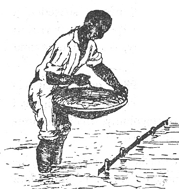
A mina era uma verdadeira sorte ou lotaria. Havia datas, que produziam muito ouro; outras, que não davam para o custeio. Resultava daí que, enquanto umas pessoas enriqueciam, outras ficavam reduzidas à miséria. Para que uma mina fosse boa era preciso que desse pelo menos duas oitavas de ouro de “cada bateada” — ou sejam 3$000 em moeda de hoje. Havia bateadas, que davam 4, 5, 8, 10, 15, 20 e 30 oitavas de ouro! Uma bateada de 30 oitavas de ouro produzia 45$000 em moeda de hoje!
Todo o ouro das catas de OURO PRETO, MARIANA e RIO DAS VELHAS era de 1.ª qualidade. O melhor era o de Tripuí (ouro preto), e tinha 23 quilates. O ouro pior era o ouro branco, cor de prata, do Ribeirão de Itatiaia, de que ninguém fazia caso.
O processo, de que usavam primitivamente para extrair ouro, era o das catas. “Catas” eram grandes escavações feitas nas areias dos rios até encontrar a pedra do fundo do leito. Essas areias (ou cascalho) eram transportadas para as margens em vasilhas apropriadas, de fundo afunilado, chamadas bateias, carumbés. Mais tarde, por causa das enxurradas, substituíram esse processo por outro mais aperfeiçoado — o emprego de máquinas tocadas d'água (máquinas hidráulicas): essa água vinha canalizada de cima, dos pontos mais altos, em regos ou bicames, e com ela os mineradores esboroavam a terra, que cobria o cascalho.
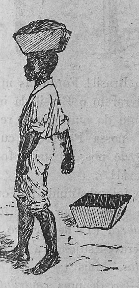
Hoje está ainda muito mais aperfeiçoado: empregam-se máquinas elétricas, que fazem numa hora o serviço, que dantes gastava dias, de sorte que o serviço da mineração de hoje, além de ser menos trabalhoso, é mais lucrativo. É assim o Progresso: quanto mais as máquinas são aperfeiçoadas, tanto mais barata vai ficando a mão de obra; quanto mais barata fica a mão de obra, tanto mais ganha o industrial.
Do ouro minerado uma quinta parte (quinto) pertencia ao rei: o quinto do ouro arrecadado em Minas Gerais atingiu, até a Independência do Brasil em 1822, a 41.000 arrobas ou 615.000 quilos! Todo esse ouro foi parar às mãos do rei de Portugal! Essas 41.000 arrobas de ouro produziram 250 mil contos! Foi com esse dinheiro que Portugal se salvou da ruína, depois do descalabro da Índia. Com essa soma fabulosa não só Portugal se sustentou a si, durante mais de um século, como sustentou ainda todo o resto do Brasil! Foram as minas de ouro de nosso Estado que livraram o Brasil da invasão estrangeira. Foi com o quinto do ouro que o rei se pôde armar para defender a nossa Pátria da cobiça estrangeira. As minas de ouro de nosso Estado foram a salvação de Portugal e do Brasil!
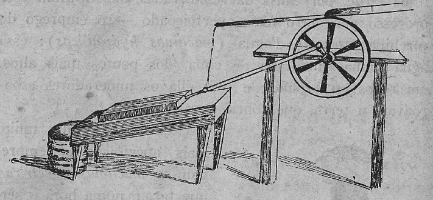
Depois o imposto do quinto foi substituído por outro chamado — capitação. Consistia em o senhor pagar todos os anos ao Rei 230$000 por cabeça (1) de escravo, que minerasse por sua conta; os escravos sujeitos a esse imposto chamavam-se — capitados. Mais tarde foi esse imposto substituído por outro — o de uma contribuição anual marcada pelo Rei (25 arrobas de ouro). Anos depois voltou de novo o imposto da capitação. Finalmente, de 1751 até a Independência do Brasil (1822), voltou a vigorar de novo, como era no princípio, o imposto do quinto. De sorte que o imposto do ouro, na época colonial de nosso Estado, percorreu a seguinte escala: quinto — capitação — contribuição anual — capitação — quinto.
(1) Cáput, capitis, no latim.

Quando correu notícia do descobrimento de minas de ouro em nosso Estado, começou a chover gente de todas as bandas para vir minerar. De Portugal, da Índia, da Bahia, de S. Paulo, do Rio de Janeiro, — de toda parte afluía gente para vir catear ouro. O rei de Portugal chegou a ter medo de que Portugal se despovoasse. É por isso que o nosso Estado veio a tornar-se o mais populoso do Brasil. Vinha gente de todas as qualidades: bons e maus, moços e velhos, ricos e pobres, fidalgos e plebeus, homens e mulheres. Essa gente atingiu em pouco tempo a 30 mil pessoas.

Do ouro que correu como moeda em Minas, houve duas espécies: ouro em pó e ouro em barra; o primeiro só até o ano de 1730; o segundo do ano de 1730 em diante. O ouro em pó era o saído do fogo: consistia em folhetas. Até 1730 a Lei permitiu que o ouro em pó corresse em território de Minas servindo de moeda — mas só em território de Minas; era porém, terminantemente proibido sair de Minas para outra capitania, levando consigo ouro em pó: quem tal fizesse perderia não só o ouro, que levasse consigo na ocasião, como outros bens que porventura possuísse, e seria ainda degredado para a Índia por dez anos (Lei de 11 de fevereiro de 1719). A permissão de correr em Minas ouro em pó como moeda foi revogada pela Carta Régia de 8 de fevereiro de 1730, a qual ordenou que de então por diante só poderia correr ouro em barra. Para isso seriam criadas pelo Governo da Metrópole casas de fundição, onde o ouro em pó seria convertido em ouro em barra, sendo na mesma ocasião marcado com o sinete real, e descontando-se na mesma ocasião uma quinta parte do peso do ouro (quinto), que ficaria pertencendo à Real Fazenda. O ouro que saía das casas de fundição, chamava-se ouro quintado, era do toque de 22 quilates e valia 14 tostões a oitava. Quem fosse encontrado com ouro em pó sofreria as penas da velha Lei de 11 de fevereiro de 1719 (tomada do ouro, confisco de todos os bens e degredo para a Índia); só os mineradores podiam ter em seu poder ouro em pó, mas só até a quantidade de 500 oitavas. Era uma lei cruel e despótica; o povo recebeu-a com grande descontentamento, havendo até uma revolta em Ouro Preto (vide o conto Morro da Queimada) chefiada por Pascoal da Silva e Filipe dos Santos, e outra em Pitangui.
Chamavam-se Registros, contagem os postos de fiscalização do contrabando do ouro. Em lembrança desse fato há ainda hoje com o nome de REGISTRO uma estação (entre Sítio e Barbacena), à margem da E. Ferro Central, e há uma vila — VILA DA CONTAGEM — na zona do Oeste de Minas.
A unidade do ouro em Minas era a oitava (1). Sendo a oitava a unidade do ouro, passou a ser a unidade da moeda: de sorte que o preço mínimo, por que se poderia comprar em ouro um objeto, era a oitava. O valor da oitava de ouro variou em Minas de 1$200 a 1$500, — nunca menos de 1$200, e nunca superior a 1$500. Por aí se vê o quanto a vida já foi cara em nosso Estado, muito mais de que hoje.
Do ouro em estado bruto havia duas espécies: o ouro de aluvião e o ouro das minas (subsolo). Ouro de aluvião era o que descia dos montes com as enxurradas das chuvas: ficava à flor da terra, era muito fácil de apanhar, não dava quase trabalho, mas durava pouco, acabava logo. Ouro da mina era o que existia no fundo da terra em camadas denominadas veios ou betas; era um ouro muito difícil de extrair naqueles tempos, pois os Bandeirantes não possuíam para isso maquinismos necessários: esse ouro foi por eles abandonado...
A cobiça do ouro deu lugar a muitas brigas, a muitos crimes, a muitos roubos, e a muitas mortes. Sobretudo a mineração em larga escala veio encarecer demasiadamente a vida. Como ninguém cuidava de lavoura e todos queriam saber só de mineração, aconteceu que deixou de haver mantimento, sendo preciso mandá-lo vir de Portugal e da França por preços excessivamente altos. Nunca a vida foi tão cara em nosso Estado, como naquela época, — na época em que o ouro abundava! Suprema irrisão do destino! Por uma galinha pagava-se 6$000; por um queijo o mesmo preço; por 65 espigas de milho, 45$000; por um pastel, 1$500; por um alqueire de farinha de mandioca, 60$000. E tudo mais nessa proporção. (1)
(1) No antigo sistema de pesos e medidas (chamado antigo por ser anterior ao sistema métrico decimal, que se considera o moderno) chama-se oitava a oitava parte da onça (Onça = 8 oitavas). A oitava tinha 3 escrópulos ou 72 grãos e correspondia a 3 grs., 586. A oitava corresponde no sistema métrico decimal a 0,003586 do quilograma. O quilograma corresponde no antigo sistema a 2 arráteis, 2 onças, 6 oitavas, 2 escrópulos e 14 grãos.

Nunca a miséria foi tão grande! Havia pessoas carregadas de ouro, que passavam fome, por não ter onde encontrar mantimento! Muitos escravos morreram de inanição. Foram encontrados cadáveres de pessoas abastadas, as quais morreram de fome, com os bolsos, os alforjes e as arcas atopetadas de ouro!
Era a fatalidade punindo a ambição, punindo a cobiça, punindo toda sorte de crimes, que se cometeram naquela época por causa do vil metal!
(1) Calculando-se a oitava a 1$500, o valor daquela época. Hoje a oitava vale muito mais, regulando 7$000 (maciço) e 5$000 (em pó).
NOTA PARA PROFESSOR — Com respeito ao primeiro descobrimento de ouro no território de Minas correm duas versões históricas: uma é a que se contém no presente conto — é a versão de ANTONIL, autor do primeiro trabalho dado à publicidade (1711) sobre coisas e assuntos de Minas (vid. Revista do Archivo Publico Mineiro, pág. 509, ano IV, fascic. III, IV, 1899); outra é a versão, que atribui a Antônio Rodrigues Arzão, bandeirante paulista de Taubaté, a prioridade daquele descobrimento: — é a versão de CLÁUDIO MANUEL DA COSTA (vide o poema Vila Rica, introdução ao mesmo, 1897, editado em O. Preto).
O Descobridor dos Diamantes
O arraial do TEJUCO (hoje cidade de DIAMANTINA) era, no ano de 1723, um dos sítios da Capitania de Minas, onde em maior quantidade se fazia extração do ouro.
A população do arraial vivia então descuidosa e feliz. Inúmeras catas estavam em exploração; o ouro era tanto nas lavras, e tão à flor das aluviões, que não havia, senão o trabalho de apanhar. Todos enriqueciam. Era geral a abastança, assim como o contentamento. Raro era o dia, em que se não descobria um veio novo.
Aconteceu que, de mistura com o cascalho, onde estava o minério de ouro, começaram a aparecer certas pedrinhas duras, cristalizadas, transparentes, com a forma de octoedros, isto é, de sólidos com oito faces. Os mineradores não sabiam o que fosse aquilo, nem entre eles se encontrava quem ao certo pudesse dizer o que era. Foi crença geral que esses granitos não passavam de pedaços de cristal, sem nenhum valor. À falta de outra utilidade, os mineradores começaram a servir-se deles como de tentos no jogo de gamão, sem que ninguém fizesse caso.
Entre os mineradores encontrava-se o sargento-mor Bernardo da Fonseca Lobo, que minerava no córrego do Tejuco e residia em modesto rancho próximo do arraial.
Sucedeu chegar ao Tejuco um suposto frade estrangeiro, cujo nome até hoje se ignora. Dizia-se irmão da Terra Santa, vindo a Minas em comissão do seu superior, para cobrar o que fosse devido à irmandade e arranjar novos irmãos. Bernardo, hospitaleiro como todo Mineiro se preza de ser, ofereceu ao inculcado padre agasalho em sua casa, convite que o mesmo aceitou. Bernardo cedeu-lhe o melhor quarto da casa, e dispensou-lhe sempre o trato mais carinhoso.
Um dia foi a atenção do padre atraída para os tentos, com que seu hospedeiro marcava as partidas de gamão.
Examinando-os com cuidado, logo conheceu que eram diamantes de primeira água. E conheceu porque já estivera na Índia, onde tivera ocasião de lidar de perto com pedras preciosas.
No que estava o padre examinando as pedras, entrou na sala Bernardo. O frade, fingindo-se calmo e indiferente, perguntou-lhe donde eram aquelas pedras, ao que respondeu Bernardo que eram do córrego, onde as havia em quantidade. Bernardo indagou do padre se tinham algum valor, ao que aquele respondeu que não tinham nenhum valor, pois não passavam de pedaços de cristal. Bernardo fiou-se no que ele disse, pois não acreditava que um padre pudesse mentir. Este, aparentando não fazer caso das pedras, pediu a Bernardo para levar algumas consigo, como recordação da hospedagem, que recebera em sua casa. Bernardo, sempre amável e cavalheiro, não só deu ao padre todas as pedras que tinha, como saiu a arranjar mais em casa dos parentes e vizinhos.
O frade, cheio da ambição de enriquecer-se à custa da ignorância de Bernardo e outros tejuquenses, logo premeditou fugir, carregando os diamantes, cujo valor era tanto, que o tornaria riquíssimo muitas e muitas vezes!
Na noite desse dia o padre fechou-se por dentro em seu quarto, pôs-se a contar e a pesar os diamantes, que recebera de Bernardo. Ao mesmo tempo fazia muitos cálculos numa folha de papel, para avaliar o colossal cabedal, que lhe poderia resultar daquele tesouro. Já era tarde da noite. Vendo luz no quarto do hóspede e estranhando aquilo, Bernardo supôs que o frade estivesse doente e necessitasse de alguma coisa: então, como o seu dever era socorrê-lo, para lá se dirigiu. Chegando à porta, bateu por três vezes, mas o padre, entretido com o que estava fazendo, nem sequer ouviu. Então Bernardo, supondo sempre que o padre estivesse em perigo, resolveu espiar pela greta da fechadura. Assim fez, pois era com a melhor intenção deste mundo. Qual não foi então a sua surpresa, vendo seu hóspede todo embebido em empilhar as pedras, contá-las, pesá-las, dando com isso mostra de grande alegria? Sua surpresa aumentou mais ainda, quando ouviu distintamente o padre dizer:
— 280 mil quilates em diamantes de primeira água! É um tesouro, que me fará mais rico que o próprio Rei!
Ouvindo a palavra diamantes, Bernardo compreendeu que aquelas pedras não eram, como ele e toda gente supunham, simples amostras de cristal. Compreendeu mais que o padre, valendo-se de sua ignorância, se tinha apoderado delas, alegando falsamente que não tinham valor. Ora, aquele homem (certo um aventureiro disfarçado em padre) era, pois, um ladrão, porque lhe mentira descaradamente, pagando com a traição e com o roubo a hospedagem, que tão generosamente lhe dera! Então Bernardo resolveu empurrar a porta e entrar de sopetão. Assim fez. Ao vê-lo entrar tão de repente, o padre empalideceu. Bernardo, indignado, foi-lhe dizendo logo:
— Ouvi distintamente o que o Sr. disse, quando falava sozinho. Essas pedras, que o Sr. me afirmou não tinham valor algum, são diamantes de subido preço. Estas pedras pertencem-me. Dê-mas.
Então o padre, revestindo-se de um ar de falsa santidade, e fingindo uns modos muito brandos, e umas falas muito doces, disse:
— Dividiremos fraternalmente, irmão. O Sr. tem direito à metade, porque é dono; eu tenho direito à outra metade, porque fui eu quem descobriu. Encarrego-me de ir vendê-las, e comprometo-me a vir fazer restituição da metade, que lhe pertence. Fica combinado.
Ainda desta vez o bom do Bernardo acreditou na lábia do padre. Despediu-se dele e foi deitar-se.
No dia seguinte, ao amanhecer, Bernardo veio ao quarto de seu hóspede para saber dele. Já não o encontrou nem aos diamantes. Durante a noite o padre fugira pela janela, montando depois num dos cavalos, que estavam na estribaria. Levara consigo todos os diamantes.
Bernardo ficou muito desconsolado, mas não revelou a ninguém o seu segredo. Arranjou com os amigos e vizinhos outros diamantes, encheu com eles um picuá e resolveu ir a Lisboa revelar ao rei de Portugal a existência de diamantes na Capitania de Minas.
— Decerto (pensava Bernardo) o rei, para recompensar-me, far-me-á nomear Vice-Rei do Brasil, ou, pelo menos, Governador da Capitania e Capitão-General. Dar-me-á o título de Marquês: far-me-á nobre. Cumular-me-á de honras e distinções. Serei o primeiro homem da Colônia! Em troca do meu segredo, Portugal será então o reino mais rico do mundo! Os diamantes do Tejuco, e mais os que vierem a extrair-se noutros lugares, darão para comprar mil esquadras, com que Portugal poderá coalhar os mares! O rei de Portugal será o Rei do Mundo, mas eu, Bernardo da Fonseca Lobo, serei o Vice-Rei do Brasil!
Era a ambição, que lhe estava incutindo esses desejos de grandeza louca e desmedida.
Resolvido a realizar o seu sonho de grandeza, Bernardo, um dia, sem prevenir a ninguém, desapareceu do Tejuco. Depois de andar por caminhos ocultos, com receio de ser visto e descoberto, chegou afinal ao Rio de Janeiro, onde tomou navio, que o levou a Portugal.
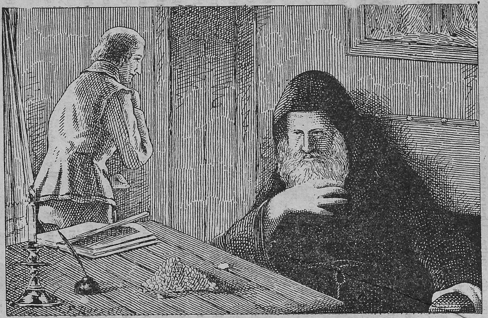
Era rei nessa ocasião o senhor Dom João V, monarca esbanjador, dissoluto e arbitrário.
Introduzido na sala de audiência, Bernardo apresentou-lhe os diamantes no picuá, e revelou o segredo de sua existência no Brasil, coisa que até então se ignorara completamente.
Os olhos do rei cintilaram de ambição. Suas mãos mergulharam no picuá, e por muito tempo estiveram apalpando as pedras, a pesá-las, enquanto Bernardo lhe ia encarecendo as dificuldades por que passara, para arrancá-las do solo e vir trazê-las ali a Sua Majestade. O rei nem o ouvia, todo embebido nas pedras. Depois de meia hora de audiência e sem ter-lhe dado a menor atenção, — D. João fez sair da sala Bernardo como importuno.
Muitos dias esteve o ingênuo Bernardo em Lisboa, à espera de que o Rei o nomeasse Vice-Rei do Brasil!
D. João V riu-se de sua pretensão, e por muito favor o nomeou tabelião e capitão-mor da VILA DO PRÍNCIPE (Serro Frio), cargo que Bernardo exerceu por pouco tempo e depois abandonou, pois não lhe dava para viver.
Bernardo, tendo ido revelar ao rei a existência de diamantes no Brasil, veio apressar a tirania, que desde logo começou a oprimir os Mineiros. De então por diante não houve mais sossego no Tejuco.
Começaram as rivalidades e as brigas entre os mineradores, começaram as violências e as exigências por parte da Metrópole, representada pelos agentes da Real Fazenda.
Pobre, desamparado e obscuro acabou seus dias Bernardo da Fonseca Lobo, o visionário que sonhara vir a ser Vice-Rei do Brasil!
Assim foi punido de sua desmedida ambição...
O Livro da Capa Verde
Quando em Portugal o Rei recebeu notícia do descobrimento de diamante no Brasil, não coube em si de contente. Logo que a novidade se espalhou por Lisboa, foi tamanha a alegria dos Portugueses que mandaram repicar os sinos, organizaram procissões, celebraram te-déuns e renderam graças ao Todo-Poderoso.
D. João V (assim se chamava o rei) mandou de presente algumas amostras de diamantes ao Papa, e recebeu muitas congratulações dos outros monarcas da Europa.
Ora, antes de se descobrirem as minas de diamantes, já Portugal nadava em riqueza por causa do ouro do Brasil. A capital do reino tornara-se uma das mais ricas e mais belas da Europa. O rei mandou edificar o palácio de Mafra e o aqueduto de Lisboa com o ouro que foi de Minas, e fez ainda muitos outros gastos. Imagine-se agora com o descobrimento dos diamantes, sabendo-se que o diamante valia muito mais do que o ouro!
Doloroso contraste! Enquanto os Portugueses deliravam de contentamento, os Brasileiros ralavam-se de tristeza, imaginando que, assim como tinham sofrido da Metrópole tantos vexames por causa das minas de ouro, — maiores vexames iriam agora sofrer por causa das minas de diamantes.
Se assim os Brasileiros pensavam, pior veio a acontecer.
A princípio a mineração do diamante era livre: cada um podia minerar, desde que tivesse carta de data. “Carta de data” era um papel, que dava direito à pessoa de minerar. Mas durou pouco.
Não levou muito tempo, o rei proibiu que se tirassem diamantes: quem minerasse escondido e fosse descoberto, seria degredado para a África por 10 anos, e perderia todos os seus bens, que seriam tomados. Essa proibição durou 7 anos.
Depois foi criado o imposto da capitação, isto é, por escravo que trabalhasse na mina o senhor teria de pagar um tanto de imposto.
Depois o rei nomeou um funcionário encarregado de fiscalizar a mineração — chamava-se INTENDENTE DOS DIAMANTES.
Foi criada uma lei ordenando que o diamante de mais de 24 quilates pertenceria ao rei: o escravo que o achasse e o entregasse, ficaria forro. Se fosse encontrado por um homem livre, este receberia 400$000 de gratificação.
Finalmente o rei resolveu conceder a mineração dos diamantes só a uma pessoa. Essa pessoa ficaria sendo o único, que poderia minerar. Em compensação teria de pagar ao rei, todos os anos, uma grande soma — muitos milhões de cruzados. Durou 32 anos este sistema.
O 1.º arrematante foi o sargento-mor JOÃO FERNANDES DE OLIVEIRA. O 2.º foi este mesmo, associado a FRANCISCO FERREIRA DA SILVA. O 3.º foi FELISBERTO CALDEIRA BRANT, de quem falaremos na história seguinte. O 4.º foi o DESEMBARGADOR JOÃO FERNANDES DE OLIVEIRA, filho do primeiro contratante de igual nome.
Todos os contratadores de diamantes, exceto FELISBERTO CALDEIRA BRANT, impediam que mais alguém minerasse: de sorte que, enquanto enriqueciam, o resto do povo vivia na miséria. O desembargador João Fernandes de Oliveira enriqueceu tanto, que veio a ser o homem mais rico de Portugal e do Brasil.
A pessoa que minerasse escondido, chamava-se garimpeiro. O garimpeiro que era pilhado, tinha de entregar todos os seus bens. E, se não tinha bens? Nesse caso era preso e metido no tronco. Às vezes acontecia o garimpeiro fugir na hora, em que era descoberto. Que sucedia então? Os rondantes das minas o perseguiam até prendê-lo. Se o garimpeiro resistia à prisão, ali mesmo o matavam sem mais nem menos, como se mata um animal acuado. Os mais felizes eram enterrados na estrada. Quando não, lançavam seus corpos no ribeirão mais próximo, ou os deixavam insepultos, para serem devorados pelos urubus.
Não levou muito tempo e o rei anulou o contrato com João Fernandes, obrigando-o a entrar para os cofres com onze milhões de cruzados. João Fernandes entrou com essa quantia. Seus haveres ficaram um pouco abalados, mas ele não deixou, por isso, de continuar a ser o homem mais rico da Colônia.
Depois desse fato o rei mandou que a extração de diamantes se fizesse por conta dele. Chamava-se Real Extração. Para isso criou-se um regulamento especial denominado Regimento Diamantino. Esse regimento continha as proibições mais absurdas, e impunha penas severas aos contrabandistas de diamantes. O povo chamava-lhe Livro da Capa Verde, porque o único exemplar dele, que veio ao Tejuco (DIAMANTINA), fora encadernado com capa de marroquim verde. Qualquer pessoa podia ler o Livro da Capa Verde, pedindo licença, mas era proibido tirar dele uma cópia.
Não obstante, muitas cópias foram tiradas, e algumas ainda existem em Diamantina. Durou 56 anos a Real Extração. Os diamantes extraídos durante esse tempo montaram a 1 milhão e 320 mil quilates.
O povo do Tejuco tinha horror ao Livro da Capa Verde. Eram tais os vexames e violências mandados executar por esse livro, que só pronunciar o nome — Livro da Capa Verde — enchia de medo a quem ouvisse.
Cansado de sofrer a opressão do REGIMENTO DIAMANTINO, — um dia o povo do Tejuco revoltou-se. Foi no ano de 1821, um ano antes da Independência do Brasil. Por toda parte, nas ruas, nas sacadas das casas, o povo gritava:

— Fora o Livro da Capa Verde!
— Abaixo o Intendente!
Não levou um ano e proclamou-se a Independência do Brasil. A nossa Pátria respirou livre e desafogada. Agora as minas de diamantes seriam de seus legítimos donos, e cada um poderia minerar em suas grupiaras.
Quando chegou ao Tejuco a notícia da proclamação da Independência por D. Pedro, quando lá repercutiu o Brado do Ipiranga, — foi um delírio. O povo celebrou grandes festas. As ruas encheram-se de gente, que, acima e abaixo, gritava:
— Viva a Liberdade!
— Viva a Independência!
— Viva o Brasil!
— Viva o Império!
— Viva D. Pedro!
Não tardou muito que um homem do povo fizesse um discurso, lançando a ideia de queimar-se na praça pública o “Livro da Capa Verde,” o livro renegado, que durante cinquenta anos vexara o povo daquela região. Todo o povo apoiou. Dirigiram-se em massa para ir buscar o livro amaldiçoado. Fez-se uma fogueira na praça pública. O livro foi lançado às chamas no meio do regozijo de todos.
Enquanto isso se dava, uns gritavam, outros aplaudiam, outros batiam palmas. Ao mesmo tempo os sinos repicavam, as bandas de música tocavam, os foguetes espoucavam no ar! Foi uma hora de festa!
Em poucos segundos o Livro da Capa Verde ficou reduzido a cinzas.
Só depois que a fogueira acabou de arder, é que o povo se dispersou. Mas o entusiasmo não parou. Os gritos continuaram:
— Viva a Liberdade!
— Viva a Independência!
— Viva o Brasil!
— Viva Dom Pedro!
Cabeça de Ferro
José Antônio de Meireles Freire foi o sétimo INTENDENTE DOS DIAMANTES no TEJUCO (DIAMANTINA).
Era homem mau, autoritário, que moveu guerra de morte aos garimpeiros. Cometeu as maiores violências e atrocidades. Sobretudo era homem muito teimoso: quando queria uma coisa, não havia quem o torcesse. Daí o apelido, que o povo lhe pôs, de CABEÇA DE FERRO.
No ano de 1785 o Tejuco sofria, a mais não poder, o despotismo do Intendente. Já não havia para quem apelar. As prisões estavam atulhadas de gente. Muitos morriam dos maus tratos, que lhes davam; outros sucumbiam de fome; quase todos eram metidos no tronco.
“Cabeça de Ferro” não tinha pena de ninguém: era um verdadeiro coração de pedra. Não havia empenho, não havia pedido, a que ele atendesse.
Devendo realizar-se grande festa em um dos templos do arraial, foi convidado para pregar o sermão o PADRE JOAQUIM BRANDÃO, vigário da VILA DO PRÍNCIPE (SERRO). Era o padre Brandão orador de fama: seus discursos arrebatavam. Além disso era homem direito, que exercia sua profissão com verdadeiro sacerdócio.
Quando o padre Brandão chegou ao Tejuco, todas as esperanças se voltaram para ele. Pediram-lhe que fosse interceder junto a Cabeça de Ferro em favor dos pobres presos, e que obtivesse do intendente não perseguir tanto os garimpeiros, que — coitados! — não tinham outro modo de vida senão faiscar nas areias. O padre foi. Mas, quem disse que o Intendente fez caso? Cabeça de Ferro limitou-se a ouvir a parolagem do padre. Por fim abanou a cabeça como quem diz:
— É impossível.
O padre saiu descoroçoado. Mas nem assim esmoreceu, como vamos ver:
Chegou o dia da grande festa. A igreja encheu-se de povo. As tribunas, as cadeiras, os bancos, o coro, — tudo regurgitava. As principais pessoas do lugar compareceram: as senhoras com seus vestidos de grande roda e muitas joias; os homens com suas rabonas e jaquetas. O intendente foi também, rodeado de uma comitiva tão grande, que mais parecia um estado-maior.
Deu a hora do sermão. O padre Brandão subiu os degraus do púlpito. Era já velho, com a cabeça meia branca, os olhos fundos, as costas vergadas. Mas tinha uma voz forte e enérgica, que se ouvia por todo o templo. Houve um silêncio geral — todos estavam atentos.

O padre primeiro se ocupou do tema religioso do dia. Depois sua voz foi subindo de tom, seus olhos começaram a fuzilar, sua cabeça empinou-se, suas mãos batiam no ar. Então o trêmulo velhinho, encarando o Intendente, que se achava próximo, começou a atacar a sua opressão contra o povo. Disse que os Juízes devem ser indulgentes, e não devem punir seus subordinados, impelidos pelo ódio ou pela vingança, mas guiados só pela justiça ou pela moral. As suas últimas palavras foram estas:
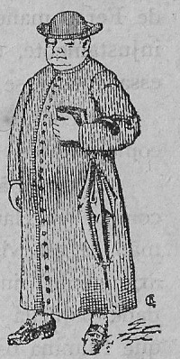
“— Ministro de Satanás! Como aferrolhas míseros inocentes nesse horrível calabouço, cujo único crime foi terem cavado na terra os tesouros, que a Providência aí ocultou, para sustentarem a vida?!

“Um dia, talvez em breve, a inocência clamará contra ti no tribunal divino, longe das paixões do mundo; e a maldição de Deus pesará sobre a tua cabeça!”
Ouvindo estas palavras, o intendente curvou a cabeça. Também o auditório estava de cabeça baixa, receando que o intendente se encolerizasse e viesse depois desabafar a sua cólera contra o povo.
Todos receavam que, acabado o sermão, Cabeça de Ferro mandasse prender e castigar o padre.
Mas não sucedeu assim. No dia seguinte, Cabeça de Ferro mandou soltar todos os que se achavam presos injustamente, como mandou tirar do tronco os que por essa forma se achavam presos.
A contar desse dia o Intendente não foi tão cruel como dantes. O povo do TEJUCO serenou um pouco.
O que não conseguira toda a população do arraial com o seu clamor de queixas, conseguira o simples sermão de um vigário da roça, sem outra arma, sem outro argumento senão a palavra, — mas a palavra da verdade, aquela que vai direito às consciências, aquela que fulmina os erros e os crimes, aquela que institui em nós um tribunal inexorável!
Isidoro, o Mártir
Um dos garimpeiros de mais fama no TEJUCO (Diamantina), pela nobreza de seus sentimentos, por sua indômita coragem, foi o pardo Isidoro, de quem nos vamos ocupar na presente história, verídica como todas as deste livrinho.
Isidoro era um mulato alto, musculoso, dotado de grande força e agilidade. Tendo nascido escravo, serviu muitos anos a seu senhor, um tal frei Rangel, que vivia de minerar. Graças a isso Isidoro, desde menino, familiarizou-se com o serviço da mineração, vindo a adquirir tamanha prática desse ofício que, depois de homem feito, não houve no Tejuco ninguém, que fosse mais entendido do que ele.
Tendo seu senhor mandado a Isidoro que faiscasse em lavras, que pertenciam à Real Fazenda, foi preso como contrabandista e confiscado a seu senhor, passando então a pertencer ao serviço do rei, sendo obrigado a trabalhar, como galé, na Real Extração. Isidoro não tinha culpa de haver contrabandeado: se o fizera, fora por ordem de seu senhor. Homem de brio, envergonhando-se de trabalhar de calceta, sendo, como era, inocente, — resolveu fugir. Para executar essa tenção, teve de limar os ferros, que lhe prendiam os pés e as mãos, e de iludir a vigilância dos guardas (fulares).
Liberto, Isidoro fez-se garimpeiro. Como acontecesse fugirem na mesma ocasião muitos outros escravos, foram todos ajuntar-se a Isidoro, que se tornou assim chefe de uma tropa de 50 garimpeiros, todos quilombolas. Isidoro, que era um chefe às direitas, — sujeitava seus comandados à mais severa disciplina: não podiam furtar nem cometer a mais leve falta contra a honra alheia. Se tal fizessem, ele próprio os puniria com todo o rigor.
Perfeito conhecedor de toda a mineração do vale do Jequitinhonha, Isidoro sabia onde ficavam as jazidas ainda não descobertas ou não exploradas. De posse dos diamantes, Isidoro em pessoa os levava ao arraial para vender. Para isso disfarçava-se de modo que não fosse reconhecido pelos guardas. Entretinha comércio com as pessoas mais importantes do Tejuco, as quais lhe dispensavam a maior proteção.
Era então Intendente dos Diamantes João Inácio, que, por mais que pelejasse por prender Isidoro, nada conseguiu: todos os seus esforços nesse sentido foram baldados. Então, desesperado, João Inácio recorreu a um meio extremo: prometeu larga recompensa, um grande prêmio a quem lhe trouxesse Isidoro, vivo ou morto! Foi tempo perdido: Isidoro era tão estimado de todos que ninguém se animava a denunciá-lo ou traí-lo — continuava livremente a fazer o seu comércio, entrando no arraial, ou dele saindo, sem ser incomodado.
A José Inácio sucedeu um intendente de boa paz — Modesto Antônio Mayer, que foi, de todos, o que menos perseguiu os garimpeiros. Durante o tempo de seu governo, Isidoro pôde livremente exercer o seu ofício.
Mas, “como não há bem que sempre dure”, a Modesto Antônio Mayer sucedeu outro Intendente, que se tornou implacável perseguidor de Isidoro — o famoso intendente Câmara. Seu nome todo era Manuel Ferreira da Câmara Bittencourt (Desembargador). Era natural da Comarca de Serro Frio.
Manda a Justiça citar que o Intendente Câmara introduziu grandes melhoramentos em Diamantina. Entre outros, a fundação de uma fábrica de fundir ferro, no morro do Pilar (1809), em cujas fornalhas se poderiam derreter de uma só vez 30 quintais de minério de ferro. A fábrica parou, por falta d'água para mover os maquinismos. Que fez então o Intendente Câmara? Abriu um grande canal, em que a água era conduzida desde o Rio Picão até à fábrica. A fábrica começou então a produzir e dela saíram muitas barras de ferro. (1)
Câmara usou de todos os meios para prender Isidoro: organizou batidas contra ele, esperou-o em mais de uma tocaia, espalhou patrulhas por todos os pontos, onde era costume Isidoro passar. Prometeu recompensar generosamente a quem denunciasse o seu esconderijo, ou o mostrasse às patrulhas. Por fim começou a usar de violência contra as pessoas, de quem desconfiava fossem seus cúmplices. Tudo em vão!
(1) Anuário de Minas do Dr. Nelson de Senna, ano II, pág. 187.
Aconteceu, porém, que um dos companheiros de Isidoro o traiu como um Judas. Tentado pela grande soma, que o Intendente prometera a quem o denunciasse, esse companheiro — alma vil e indigna — foi revelar a Câmara o dia, hora e lugar, em que as tropas reais poderiam atacar a Isidoro desarmado.
Assim se fez. As tropas de pedestres marcharam em grande número contra Isidoro, indo encontrá-lo só e desarmado. Fizeram o cerco. Apesar de sem munições e sem gente, Isidoro enfrentou denodadamente as tropas de pedestres, e defendeu-se até cair baleado por três tiros. Só então conseguiram deitar-lhe a mão — prenderam-no. Pois, apesar de gravemente ferido e desarmado, em estado de não poder defender-se, ainda aquela gente assassina o espancou, o maltratou, o injuriou!
Corria o mês de junho de 1809, quando a população do Tejuco foi alarmada com a entrada de Isidoro, com o corpo a escorrer sangue, ferido por bala em três pontos. Vinha amarrado à cauda de um cavalo, com a cabeça pendida sobre o animal, não porque tivesse vergonha de ir preso (pois era inocente), mas porque as dores que penava, eram tantas que lhe dobravam o corpo.
Em torno dele, aparatosamente armados, arrotando valentia, vinham os pedestres, que o haviam prendido.
Vendo-o passar, o povo, entre lágrimas, dizia:
— Aí vem Isidoro, o inocente.
Nesse dia fizeram-no descansar para recobrar forças. No dia seguinte foi levado à presença do Intendente Câmara, que o submeteu a apertado interrogatório.
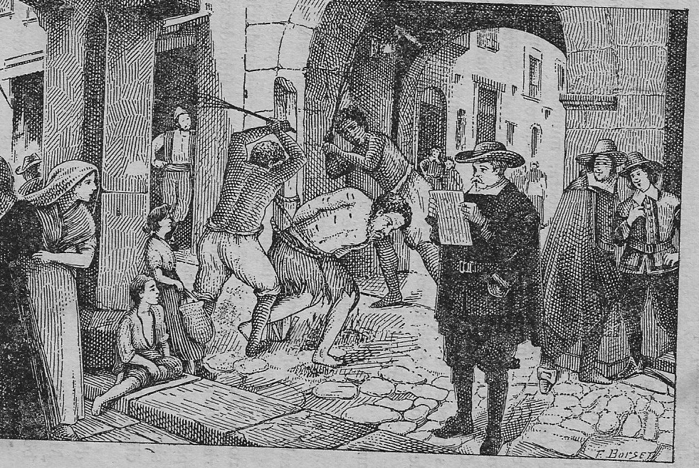
Câmara queria a todo transe que Isidoro denunciasse as pessoas, a quem vendera diamantes. Ora, naquele tempo, comprar diamantes a um garimpeiro constituía crime severamente punido. Se Isidoro revelasse as pessoas com quem contrabandeara, muitas famílias do Tejuco ficariam desgraçadas. Mas Isidoro era uma alma nobre, um caráter puro, um coração grande. Seria incapaz de denunciar quem quer que fosse, — muito menos às pessoas, que o haviam protegido, e que eram, além de tudo, as mais importantes do lugar.
O interrogatório durou duas horas. Câmara repetiu muitas vezes a mesma pergunta:
— A quem vendia Você os diamantes, que extraía?
Isidoro limitava-se a responder sempre — que não sabia. Câmara resolveu então empregar meios suasórios.
Prometeu-lhe o perdão, a liberdade, se revelasse os nomes de seus cúmplices. Isidoro, firme, respondia invariavelmente que não sabia. Então Câmara, fulo de raiva, passou à ameaça: disse que o mandaria açoitar, se persistisse em nada dizer. Isidoro, com toda a altivez e dignidade, retrucou-lhe:
— É inútil, Sr. Intendente. Por coisa nenhuma deste mundo serei capaz de denunciar. Pode Vossa Mercê mandar até tirar-me a vida, que não abrirei a boca para comprometer ninguém.
O Intendente Câmara, longe de enternecer-se com a nobreza de sentimentos do destemido garimpeiro, mais se exacerbou ao ouvir esta declaração terminante. Mandou logo açoitar a Isidoro.
Foi este levado à tortura. Amarraram-no a uma escada, que ficava defronte à cadeia, e aí, em público, à vista de todos, começaram a açoitá-lo com bacalhaus. As feridas, que já estavam cicatrizando, abriram de novo; suas carnes foram sendo retalhadas pelas pontas dos açoites; o sangue espirrava, indo salpicar as faces de seus verdugos. Isidoro não gemeu, nem gritou. Como a dor era muita, firmou o queixo no chão e aí deixou ficar, impressa, uma mossa, do grande esforço que fez em derrear a cabeça. A poucos passos, presente a tão nefando suplício, assistia o Intendente Câmara.
Afinal os verdugos cansaram de chibatear. Só então Isidoro foi de novo levado para a prisão, onde o deixaram descansar todo o dia seguinte, curtindo dores atrozes.
No terceiro dia foi chamado a segundo interrogatório, ainda mais minucioso que o primeiro. Câmara renovou as mesmas perguntas já feitas, prometeu-lhe de novo o perdão e a liberdade, e acabou por ameaçá-lo de novas torturas, — tudo no empenho de arrancar-lhe os nomes de seus cúmplices.
Então Câmara mandou arrastá-lo de novo ao suplício. Extenuado, sem forças para ter-se de pé, Isidoro quase foi carregado até ao lugar do suplício. Mal começaram os açoites, caiu sem sentidos. Chamado um médico, este declarou que poucos momentos lhe restariam de vida, se continuasse a flagelação. Só então um resto de piedade bruxuleou no coração endurecido daquela gente. Não se animaram a chibatear um moribundo. Voltando a si do desfalecimento, foi Isidoro recolhido à prisão. A essa hora o Intendente Câmara, com a alma corroída de remorsos, estava já sinceramente arrependido do que fizera.
Dias depois, sentindo aproximar-se a sua última hora de vida, Isidoro mandou chamar o Intendente.
Ao ver Isidoro agonizante, com os olhos vidrados pela morte, — o coração de pedra daquele homem enterneceu-se. E o Intendente dos Diamantes, o preposto de El-Rei, o homem que tudo podia e mandava naquele lugar, — pediu perdão a Isidoro! Quanto pode a consciência!
Foram estas as suas palavras:
— “Peço-te perdão pelo muito que te fiz sofrer, Isidoro, e de que agora tenho bastantes remorsos.”
Isidoro pôde ainda ouvir o perdão, que lhe pedira o grande potentado. Então um sorriso de beatitude iluminou-lhe a fisionomia agonizante — era a satisfação por ver reconhecida a sua inocência por aquele mesmo, que tanto o incriminara. Não tardou muito e cerrou os olhos — estava morto.
Ao saber da morte de Isidoro, o povo chorou. Ao passar seu cadáver para ser enterrado no sagrado, o povo que, dias antes, ao vê-lo passar amarrado e preso, dissera entre lágrimas:
— Aí vem Isidoro, o inocente,
dizia agora, afogado em soluços:
— Lá vai Isidoro, o mártir.
O Contratador de Diamantes
As minas de diamante do TEJUCO (hoje Diamantina) foram, no século 18, as mais ricas do mundo. Seus diamantes eram os mais límpidos e os mais caros do planeta: nem os da Índia ou os do Cabo se lhes igualavam sequer.
A extração do diamante começou a ser feita no Tejuco, mediante contrato, a contar de 1739. O contratador podia minerar um certo número de grupiaras e empregar no serviço até 600 escravos, devendo pagar à Metrópole, anualmente, 240$000 por escravo.
Esse imposto chamava-se capitação; os escravos que trabalham por conta do contratador, chamavam-se capitados. O contrato durava 4 anos. O contratador não devia permitir que mais ninguém minerasse. Para isso podia praticar toda sorte de violências, — manter até vigias e espiões, que se encarregassem de denunciar os garimpeiros.
O terceiro contrato da mineração de diamantes cabe a Felisberto Caldeira Brant, Brasileiro, cavalheiro de raros predicados morais, homem de grande nobreza de sentimentos, como veremos no decurso desta verídica história.
Felisberto Caldeira Brant começou sua vida minerando em Vila Boa (Goiás). Aí começou a fazer seu cabedal. Depois foi para Paracatu, em nosso Estado, cujas minas acabavam de ser descobertas. Tão feliz foi na exploração dessas lavras que veio a adquirir riqueza fabulosa. Basta dizer que cada escravo seu colhia por dia 17 oitavas de ouro.
Mas Felisberto era ambicioso e ousado. Confiado em sua boa estrela, resolveu atirar-se a empresas mais arrojadas e lucrativas, que lhe permitissem decuplicar o seu já considerável cabedal. Associou-se para isso a mais três irmãos (Sebastião, Joaquim e Conrado).
Tendo ido em hasta pública o 3.º contrato das minerações do Tejuco, Felisberto arrematou-o, organizando em seguida poderosa companhia, de que foi o principal quinhoeiro — a Companhia dos Diamantes.
No tempo dos antecessores de Felisberto, isto é, por ocasião do 1.º e do 2.º contrato, a vida no Tejuco era uma calamidade. Ninguém podia minerar senão os escravos do contratador. As pessoas pobres, que iam ocultamente faiscar nas grupiaras, eram denunciadas, perseguidas e presas, além de confiscados seus bens. O contrato era um monopólio odioso.
Não sucedeu assim no tempo de Felisberto Caldeira. Embora com prejuízo de seus interesses, Felisberto fechava os olhos e deixava que minerassem em suas grupiaras, permitindo assim que muitas famílias pobres fossem vivendo de catear. Por isso Felisberto tornou-se logo benquisto de todos. O povo do Tejuco adorava-o, como se ele fosse um rei pequeno.
Felisberto, sempre favorecido do destino, prosperou tanto que veio a tornar-se milionário muitas vezes. Sua baixela era de ouro e prata. Os vestidos de sua senhora e filhas eram mandados vir de França. Em sua casa realizavam-se bailes (saraus) no meio da maior pompa e esplendor. Dançava-se uma dança especial daquela época, muito graciosa e elegante — o minueto. Dançava-se também o cotilhão.
As modas e vestuários usados naquela época eram muito diferentes dos usados hoje:

Os homens usavam o cabelo trançado em forma de rabicho, rematado na ponta por uma laçada de gorgorão; chapéu de três pancadas, camisa pregueada, gonilha de lenço branco bordado, colete de cetim macau, casaca comprida de veludo de cor, calção largo de seda ou de veludo apertado por fivela de ouro na altura dos joelhos, meias compridas de seda, sapatos pretos com fivelas de ouro ou prata, espadim com bainha de ouro.
As mulheres usavam na cabeça uma touca de seda branca com borlas de fios de ouro, saias de grande roda e grande cauda, anquinha, espartilho, sapatos de bico repuxado para cima e altos saltos de madeira, brincos pesados e grandes. Empoavam os cabelos de polvilho. Iam à missa transportadas em liteiras, puxadas por escravos vestidos de libré.
Isso concorreu muito para aperfeiçoar os costumes do Tejuco. As principais famílias começaram a cuidar esmeradamente da educação de suas filhas, mandando vir de fora professores de dança, de canto, de música, de etiqueta, além dos de línguas e gramática. Dos arraiais de Minas era o Tejuco o de maior luxo e civilização. Ainda hoje, quando o povo de Diamantina se refere a esse tempo, diz, suspirando:
— Ah! o tempo dos Caldeiras...
Dois fatos, porém, vieram aniquilar a riqueza e a felicidade desse homem, que, de milionário muitas vezes, acabou pobre e indigente.

Foi roubado o cofre da Intendência onde se achava depositada grande soma em diamantes; o roubo deu-se por forma tão misteriosa que até hoje não se sabe o autor. Faltando por isso a Felisberto o dinheiro, com que devia pagar o tributo anual devido à Real Fazenda, sacou uma letra a crédito, de 700 mil cruzados, a qual não foi paga. À vista disso veio ordem de prisão contra ele.
Outro fato foi a perseguição contra Felisberto, movida pelo ouvidor Bacelar, perseguição derivada do seguinte:
Por ocasião das festas da semana santa achava-se em uma das igrejas do Tejuco (a igreja de S. Antônio, hoje Sé Catedral), assistindo ao ofício religioso, a família de Caldeira, achando-se com ela uma moça mineira, muito prendada e formosa, parenta dos Caldeiras. O ouvidor, querendo engraçar-se com a moça, ali mesmo, e à vista de todos, atirou-lhe uma flor ao colo. A moça, como era natural, repeliu aquela liberdade, cheia de indignação. O povo, por seu lado, não gostou, e começou a murmurar. Felisberto, sabendo o que fora feito à sua parenta, tomou a defesa desta, e veio esperar o ouvidor no adro da igreja. Ao sair este, Felisberto pediu-lhe satisfações, exigindo uma explicação. O ouvidor, cheio de si, recusou a explicação. Então Felisberto, em desagravo da honra de sua família, sacou de um punhal e avançou contra o ouvidor, não chegando a feri-lo.
A este respeito correm três versões. A primeira versão diz que não chegou a feri-lo, porque o ferro resvalou. A segunda versão diz que diversas pessoas intercederam para apaziguar a contenda, entre as quais o padre da freguesia. A versão mais corrente é a terceira: diz que “na hora, em que Felisberto sacou do punhal para ferir o ouvidor, apontou a procissão da semana santa, que vinha saindo da igreja; Felisberto (que era muito religioso), ao ver o padre sob o pálio carregando os santos óleos, ficou aterrado de cometer aquele desagravo em tal ocasião: deixou por isso cair o braço, que empunhava a arma.”
O povo dividiu-se em dois partidos: um, a favor de Caldeira; outro, a favor do intendente, que se colocara ao lado do ouvidor.
O ouvidor, abusando do cargo que exercia, começou desde esse dia a perseguir Felisberto, mandando ao governador da Capitania, e até a Portugal, cartas e ofícios caluniosos.
Ora, não tendo Caldeira entrado, por causa do roubo já referido, e do não pagamento da letra, com a taxa anual devida, — era esse fato excelente pretexto para prendê-lo.
Para isso o governador da Capitania dirigiu-se em pessoa ao Tejuco, levando consigo numeroso regimento de soldados (dragões). Felisberto ignorava que o governador vinha para prendê-lo. Dirigiu-se ao seu encontro com as principais pessoas do lugar.
No que foi ao seu encontro, o governador deu voz de prisão aos Caldeiras em nome de El-Rei.
Então Felisberto, com as faces abrasadas de cólera, perguntou, em voz alta, que “crime cometera.”
A resposta foi ver-se cercado pelos dragões e efetivamente preso.
Nesse mesmo dia (31 de agosto de 1753), o ouvidor, seu rancoroso inimigo, mandou fechar, lacrar e selar as portas de sua residência. Antes disso, fez a família de Caldeira evacuar a casa, indo sua senhora e filhas pedir asilo em casa de parentes.

No dia seguinte era Felisberto Caldeira Brant arrancado dos braços de sua mulher e filhos, e levado, com as mãos acorrentadas, à VILA DO PRÍNCIPE (SERRO FRIO), escoltado por muitos soldados.
Daí foi remetido para o Rio de Janeiro e embarcado para Lisboa.
No dia seguinte ao de sua prisão mandou o governador sequestrar todos os seus bens. Apesar de avaliados de propósito em menos de seu real valor, o seu total montava a 2 milhões de cruzados, soma fabulosa para aqueles tempos, e que dava com muita sobra para pagar o que Felisberto devia. Só no cofre da Intendência foram encontrados 33.773 quilates de diamantes! Apesar de Caldeira ter direito à diferença a maior, não lhe restituíram nada e ficaram com tudo. Sua mulher e filhos cairiam na miséria, se não fossem socorridos pelos parentes.
Enquanto isso se dava no Tejuco, — em Lisboa era Felisberto Caldeira Brant encarcerado na enxovia do Limoeiro. Aí esteve, preso, por espaço de dois anos. Era então rei de Portugal D. José I, e ministro do reino o Marquês de Pombal. Por mais que Felisberto rogasse a sua soltura, apresentando fiadores idôneos, que garantiriam a execução do resto do contrato, embora alegasse que já havia pago de sobra o que devia, entregando todos os bens, — o rei e o ministro foram surdos a seus justos reclamos.
Parecia que Felisberto estaria condenado a ficar indefinidamente preso, quando uma circunstância inesperada lhe veio facultar a liberdade:
No dia 1.º de novembro de 1755 violento terremoto abalou a cidade de Lisboa. Os palácios aí construídos à custa do ouro do Brasil, e dos vexames que oprimiam a Colônia, fizeram-se em ruínas no curto prazo de cinco minutos, ficando reduzidos a um montão de entulho!
A prisão em que Felisberto se achava, abriu-se como por encanto: suas paredes estavam fendidas de meio a meio. Viu-se por esse meio restituído à liberdade!
Pois bem. Esse homem que era inocente, esse homem a quem a Coroa de Portugal devia parte de seus bens sequestrados, esse homem que estava ansioso por cobrar de novo a liberdade, era a tal ponto respeitador da Lei (fosse embora uma lei injusta e odiosa), que, em vez de fugir, foi apresentar-se ao Marquês de Pombal:
— Senhor. A prisão que me encerrava, abriu-se por efeito do terremoto. Considero-me ainda preso. Digne-se Vossa Mercê ditar-me as suas ordens.
O Marquês de Pombal admirou-se de tanta lealdade. Era incrível que o respeito à Lei atingisse àquele ponto!
— O senhor está livre. Pode ir.
Nesse mesmo dia o Marquês de Pombal referiu o ocorrido a João Pereira Ramos, ao Bispo de Coimbra e ao general Godinho, todos Brasileiros e residentes em Lisboa. Estes, condoendo-se da sorte de seu patrício, intercederam em seu favor, convencendo o Marquês de Pombal de sua inocência e do trama de intrigas e invejas, de que fora vítima. O ministro ordenou então que se procedesse à liquidação de suas contas e o exame do sequestro de seus bens. Essa ordem não foi cumprida até hoje.
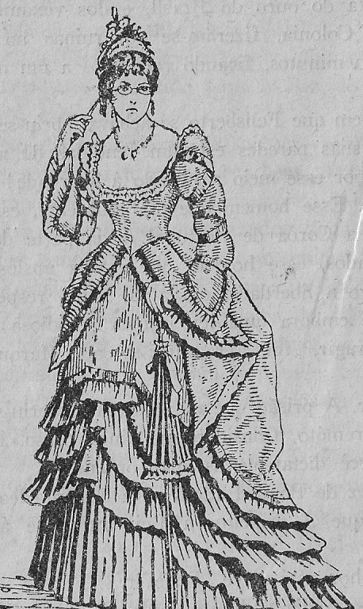
Felisberto Caldeira Brant, enfermo gravemente dos maus tratos, que recebera na prisão, foi tratar-se em Caldas da Rainha. Esperava restabelecer-se, para então regressar ao seio de sua amada Pátria e de sua família. Mas tão alquebrado se achava por tudo que sofrera, que seus padecimentos em breve se agravaram. E o inditoso Brasileiro cerrou os olhos em terra estranha, longe dos seus, pobre e desamparado, — ele, que fora o homem mais rico de toda a Colônia!
O Capão da Traição
Em todo o território mineiro é este o sítio de tradições mais horrendas e sinistras, como o próprio nome está indicando.
A traição mais vil e negregada, de que há memória na História de Minas, foi a que se praticou nesse sombrio recanto. Muitos anos já são passados — quase dois séculos, — mas o nome de CAPÃO DA TRAIÇÃO não se apagou, nem nunca se apagará, da lembrança dos povos.
Foi o caso que a Capitania de Minas Gerais era nessa época assolada por uma guerra conhecida por GUERRA DOS EMBOABAS, — guerra que já vinha de muito tempo, travada pelos filhos do país contra os forâneos, que tinham o apelido de emboabas. Foi-lhes posto esse nome (que em língua indígena quer dizer pinto calçudo), porque os Portugueses usavam comumente umas botas de cano alto.
Depois de muitas peripécias, que seria longo enumerar, os Nossos, resolvidos a expulsar os forâneos do Rio das Mortes, cercaram o arraial da Ponta do Morro (hoje cidade de Tiradentes). Tiveram, porém, de desistir do cerco, porque contra eles foi mandada uma força muito superior em número.
À vista disso os Nossos, depois de levantado o cerco, deliberaram retirar-se, seguindo viagem a caminho de São Paulo.
Em sua retirada aconteceu que um pequeno bando, distanciado de seus companheiros, acertasse de procurar abrigo em soberbo capão de mato, o qual ficava em meio de formosa campina, banhada a poucos passos pelo Rio das Mortes. Esse bando era comandado pelo cabo Gabriel de Góis.
O comandante dos forâneos era um indivíduo de maus bofes, cuja vida era já uma série de crimes e depredações. Chamava-se Bento do Amaral Coutinho e tinha o posto de Sargento-Mor.
Este mandou que um seu subordinado (o capitão Tomás do Couto) fosse ao capão fazer um reconhecimento. O enviado foi. Lá chegando, receou oferecer combate aos Nossos, e, com medo, retirou-se sem disparar um tiro sequer. Então os Nossos achando graça em tamanha “delicadeza”, promoveram-lhe formidável vaia.
O Sargento-Mor, ao saber da assuada, exasperou-se, e foi em pessoa com grande troço de gente oferecer combate.
Assim que os Nossos lhe pressentiram a chegada, cada um se empoleirou numa árvore com seu trabuco na mão. Rompeu fogo. Os emboabas sofreram logo muitas baixas, porque a pontaria do inimigo fora certeira.
Quanto aos Nossos nenhum tiro os atingiu, pois não podiam ser vistos, encobertos pela galhada das árvores.
Exasperado, o Sargento-Mor resolveu cercar o capão, — para que os Nossos se rendessem pela fome e pela sede. Depois de dois dias e duas noites, sem ter de comer nem de beber, os Nossos resolveram render-se. Escolheram para portador da paz um homem velho e de todo o respeito, que já de longe ia acenando com uma bandeira branca, simbólica da paz.
O Sargento-Mor recebeu-o com mostras aparentes de grande alegria, chegando até a abraçá-lo e a dar-lhe de comer e de beber.
O portador, por nome João Antunes, explicou que os Nossos estavam prontos a fazer a paz, desde que a sua vida fosse garantida e poupada. O Sargento-Mor jurou pela Santíssima Trindade que pouparia a vida aos Nossos, — mas exigiu que lhe fizessem entrega das armas.
Regressou o portador ao seio de seus companheiros com a notícia da aceitação da paz. Os Nossos, fiados na palavra de Amaral, não duvidaram apresentar-se e fazer-lhe entrega das armas.
Isto feito, e, logo que se apanhou com o inimigo desarmado, — o Sargento-Mor, faltando a seu sagrado juramento, faltando à sua palavra de honra, violando as leis da guerra, e perpetrando a mais negra covardia e a mais refalsada vileza, que se possa imaginar, mandou que seus comandados fizessem fogo sobre os inermes contrários!
Assim foi feito, para vergonha e eterno descrédito de seus autores! E nada menos de Trezentos dos Nossos foram imolados, ficando o campo juncado de cadáveres...

É por isso que, ainda hoje, quando o povo enfrenta o lugar, onde se desenrolou essa matança, desvia os olhos e murmura, estremecendo ainda de cólera e de horror:
— Capão da traição... Capão da traição...
A Expedição do Caminho Novo
Havia pouco tempo que terminara a Guerra dos Emboabas, travada entre Brasileiros e Reinóis na porção territorial de nosso Estado, em que mais abundavam as minas. Foi pacificador dos povos o notabilíssimo Capitão-General Antônio de Albuquerque, a quem o Rei de Portugal em boa hora confiara tão elevada missão.
Nesse tempo S. Paulo, Minas e Rio formavam uma só Capitania. Antônio de Albuquerque teve ordem de desmembrar S. Paulo e Minas da do Rio, criando a CAPITANIA DE S. PAULO e MINAS DO OURO, veio também autorizado a inaugurar em Minas o REGIME DAS MUNICIPALIDADES e a criar três vilas (as primeiras, que se fundaram em nosso Estado), as quais elegeriam livremente as suas Câmaras. Isso se deu do ano 1709 ao ano de 1711, no princípio do século 18. Nove anos mais tarde, isto é, em 1720, foi o território de Minas desmembrado do de S. Paulo, passando a constituir uma capitania independente, a Capitania de Minas Gerais, cuja capital foi Vila Rica (Ouro Preto) e cujo 1.º governador e capitão-general foi D. Lourenço de Almeida.
Como íamos dizendo, foram criadas três vilas, a saber: VILA DO CARMO, hoje Mariana, em abril de 1711; VILA RICA DE ALBUQUERQUE, hoje Ouro Preto, em julho do mesmo ano, e VILA REAL, hoje Sabará, no mesmo mês e ano.
Uma das cerimônias mais interessantes daquela época era a fundação de uma vila. Era um ato solene, revestido de muitas formalidades, como vamos ver:
Antes de tudo levantava-se na praça pública o pelourinho. O pelourinho era o principal distintivo (símbolo) das vilas. Lugar que não tivesse pelourinho, não podia ser vila: continuava sendo “arraial”. O pelourinho era uma coluna de pedra ou de ferro, assente no meio da praça pública sobre degraus de pedra, ordinariamente com 4 faces ou lados (correspondentes aos 4 pontos cardeais), tendo nas quinas argolões de ferro, e, às vezes, ostentando na base da coluna um desenho alusivo ao emblema da Vila (armas, brasões), além da data da inauguração da Vila, ou outros dizeres. A esses argolões de ferro eram amarrados os escravos, que deviam ser surrados na praça pública em castigo de faltas cometidas.
Enquanto se inaugurava o pelourinho, os sinos de todas as igrejas badalavam a um tempo só, em sinal de regozijo; a força miliciana (força pública) postava-se na praça, armada de mosquetes, e dava uma descarga de salvas; o povo, por sua vez, dava salvas de roqueiras.
Levantado o pelourinho, — dava-se a inauguração oficial da Vila pelo corregedor, ou ouvidor, da Comarca.
Em livro especial lavrava-se um assento (termo) da inauguração. Nesse termo deviam ser arrolados “o dia da inauguração, o nome da Vila, os limites e confrontações de seu território”, além dos “nomes do ouvidor, do capitão-mor da Vila (nomeados na ocasião), do mestre de campo da Vila (nomeado também na mesma ocasião), assim como os “nomes dos juízes e oficiais da câmara” (vereadores) eleitos em eleição (escrutínio) presidida pelo mencionado ouvidor.
Ainda não se tinha apagado de todo o ressentimento entre os naturais e os forâneos. Apesar de acabada a guerra, ainda de parte a parte os antigos contendores se olhavam com recíproca desconfiança, — quando acontecimento inesperado os veio unir e congraçar:
Foi o caso que a cidade do Rio de Janeiro se viu, no ano de 1711, sitiada pela esquadra francesa de Duguay Trouin, então o almirante mais afamado em todo o mundo. Era governador da cidade do Rio FRANCISCO DE CASTRO, que incontinente mandou um portador a Minas pedir a Antônio de Albuquerque a remessa urgente de forças, que o fossem defender da invasão estrangeira.
A notícia estourou em Vila Rica no dia 21 de setembro. Ao grito de — “Inimigo invasor!”, Brasileiros e Portugueses confraternizaram na mesma hora, no empenho de marchar para ir desalojar a pirataria francesa. Olvidaram no mesmo instante os antigos ressentimentos da Guerra Civil dos Emboabas, e, aliados agora como simples irmãos, unidos num só corpo, só viam diante de si uma ameaça, que era preciso remover a todo custo — a Pátria em perigo, o Brasil na iminência de invasão estrangeira!
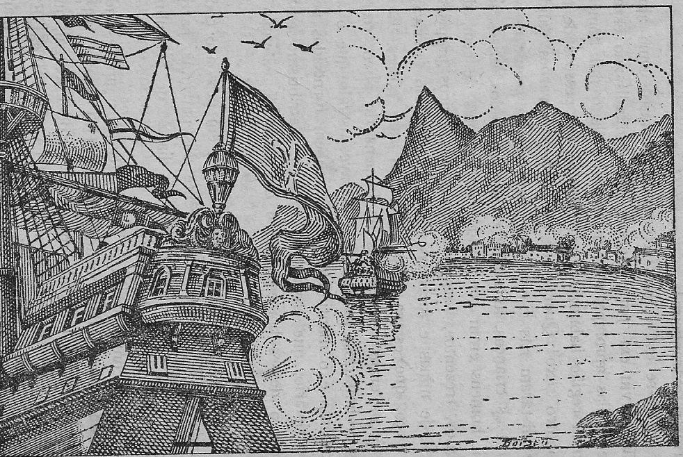
Deu-se então um fato extraordinário, como ainda não se viu em parte alguma. No limitadíssimo espaço de 6 dias aprontou-se um exército de 6 mil homens, numa região habitada apenas por 35 mil pessoas de um e outro sexo! Quer dizer que todos os varões válidos se alistaram nas fileiras: só deixaram de seguir os velhos, as crianças, as mulheres e os inválidos. Esses seis mil homens eram constituídos de magotes de cem, duzentos, trezentos, fornecidos pelos mais ricos proprietários de minas e fazendas. Cada proprietário enviava o reforço, que estava proporcional às suas posses. Esses reforços eram constituídos de homens do povo, recrutas, voluntários, milicianos e escravos, sendo que o armamento e o mantimento eram também fornecidos pelo proprietário, que enviava o reforço. Patriotismo edificante o desses homens, digno de servir de exemplo a todos os Brasileiros!
Antônio de Albuquerque assumiu em pessoa o comando desse exército, e, à frente dos patriotas, partiu da Encruzilhada de Congonhas no dia 28 de setembro, a caminho do Rio de Janeiro.
Minas comunicava-se com o Rio por uma estrada aberta no mato, denominada CAMINHO NOVO (1). Esta estrada foi mandada abrir pelo rei de Portugal, que encarregou desse serviço a GARCIA RODRIGUES PAIS, o ilustre filho de Fernão Dias Pais Leme, marcando-lhe o prazo de 6 anos para conclusão do serviço. Garcia meteu mãos à obra, mas não pôde concluí-la no prazo estipulado: a conclusão foi levada a efeito por DOMINGOS RODRIGUES DA FONSECA LEME, outro não menos notável bandeirante paulista. O interessante é que esse caminho fazia o mesmo percurso, que faz hoje a Linha do Centro da Estrada de Ferro Central do Brasil. Garcia Pais e Domingos Leme, sem serem engenheiros, saíram-se tão bem de sua empreitada que, dois séculos depois, o seu plano de comunicação de Minas com o Rio era aproveitado pelas sumidades da engenharia brasileira! A estrada era servida por pousos ou ranchos, isto é, pontos de parada, onde as tropas descansavam da jornada e refaziam as forças. Esses pontos de parada foram depois substituídos por estações da Estrada de Ferro Central, a saber: CONGONHAS; RESSACA; BORDA DO CAMPO, hoje Barbacena; REGISTRO, cujo nome ainda hoje conserva; JOÃO GOMES, hoje Santos Dumont, ex-Palmira; JOÃO AIRES e MATIAS BARBOSA, cujos nomes ainda hoje perduram, assim chamadas dos sesmeiros, que aí eram estabelecidos; PARAÍBA, hoje a cidade fluminense do mesmo nome; ALFERES (hoje Pati), etc.
(1) Assim denominada em contraposição ao antigo caminho chamado Caminho Velho.
O exército marchou em tamanha ordem e disciplina, e com tal disposição de ir enfrentar o inimigo, que no curto prazo de 12 dias acampava na Serra do Mar. Doze dias para fazer a pé um percurso de 500 quilômetros, marchando de sol a sol, transpondo, entre outras, a alterosa Serra da Mantiqueira, e passando a vau, às vezes com água além da cintura, rios e rios caudalosos!
Na Serra do Mar fez Albuquerque uma parada para esperar o resto das tropas, que vinha marchando na retaguarda; escolheu para isso a chapada dos Pousos Frios, na região denominada Tinguá.
Albuquerque, que nada sabia do que se passava no Rio de Janeiro, acreditava que iria chegar muito a tempo de livrar a cidade do cerco dos Franceses. Da Serra do Mar descortinava-se a baía Guanabara e um trecho da cidade. Sondando os horizontes, Albuquerque apenas pôde notar que havia algumas naus ancoradas no porto.
Ao cair da noite, porém, horrível decepção o esperava — uma parte da cidade ardia em chama!
É que Duguay Trouin, além de assassino e pirata, era também incendiário! Vendo que a cidade não se rendia, heroicamente defendida por seu Governador e por seus habitantes, usou de um meio extremo, bárbaro e desumano — mandou que a tripulação das naus atirasse foguetes inflamados sobre o teto de palha das casas, que ficavam no bairro de Santa Luzia e do Castelo. O fogo, ateando-se ao colmo do teto e ao madeiramento das vigas, ajudado por forte ventania de sudeste, que soprava na ocasião, fez arder aqueles bairros inteiros, perdendo-se no incêndio as propriedades de muitos de seus habitantes, que ficaram, da noite para o dia, reduzidos à penúria! O próprio palácio do Governador foi também atingido pelo fogo: só então Francisco de Castro abandonou o seu posto de honra, tendo antes enterrado as baixelas de ouro e prata, para que os Franceses as não pilhassem.
Albuquerque tratou imediatamente de descer a Serra, indo abarracar no sítio do Couto. Ali um enviado do Governador da Cidade trouxe-lhe a comunicação oficial de que a cidade se rendera ao inimigo, à vista do terror, que se apossara da população, ao ver que Duguay Trouin estava disposto a incendiar todas as casas pelo processo dos foguetes inflamados, arremessados das naus. A cidade rendera-se pelo terror do incêndio! Vingara, pois, o plano sinistro de Duguay Trouin, que não vacilou em ficar na História como Incendiário, e que só por meio tão infame e ilícito, contrário às leis da guerra e às leis da humanidade, conseguiu entrar na cidade, que até o último momento lhe resistira heroicamente! Além disso, outra razão veio concorrer para a rendição do Rio de Janeiro — tinham-se acabado as munições: as forças já não podiam disparar contra o inimigo, por se haverem esgotado a pólvora e as balas. Tudo conspirara contra nós!
Mas, além de incendiário, Duguay Trouin era também pirata. Tomada a cidade, fez saquear pela soldadesca as casas e os próprios templos! Tudo foi tomado e carregado; o que não podiam carregar, era destruído. As famílias, espavoridas, abandonaram os lares e foram abarracar na Serra do Andaraí onde ficaram a salvo pela distância.
Duguay Trouin sabia que Francisco de Castro esperava grande reforço de Minas, conforme o próprio Governador fez espalhar para meter medo ao inimigo. Ora, a cidade resistira denodadamente até as vésperas de chegar o reforço. Pressentindo a chegada deste pelos dias que já haviam decorrido, o almirante pirata deu-se pressa em incendiar a cidade, pois era o único meio de conseguir que se rendesse!
Albuquerque, porém, não esmoreceu. Recebendo a notícia de que a cidade fora tomada, — em vez de retroceder para Minas, avançou, e veio aquartelar no Engenho Velho, próximo dos arrabaldes, que são hoje a Tijuca e Vila Isabel. Nisso não fez mais que acompanhar o intuito dos patriotas mineiros, os quais estavam ansiosos por entrar em fogo e enfrentar o inimigo. Visto não terem chegado a tempo de impedir que os Franceses tomassem a cidade, apesar da pasmosa presteza com que marcharam ao seu encontro, queriam ao menos desalojar dela o inimigo, restituindo assim à cidade a sua primitiva liberdade e soberania.
Do ponto onde se aquartelara, — Albuquerque assumiu logo o Governo da Cidade, e dirigiu em seguida uma intimação ao inimigo para retirar-se incontinente, sob pena de ser varrido a bala. Duguay Trouin não esperou por segunda intimação. Sabendo que o reforço mineiro era temível e que se achava na melhor disposição para oferecer-lhe combate, embarcou a toda pressa nas suas naus e fez-se ao largo.
A expedição do Caminho Novo, a leva de patriotas mineiros, não tendo chegado a tempo de impedir a rendição da cidade, desalojava agora o inimigo só com a sua presença e a sua ameaça!
O exército enviado das “Gerais” salvara a cidade, que seria mais tarde a Capital da Federação Brasileira!
Morro da Queimada
Corria o ano de 1729. Era Governador da Capitania das Minas Gerais o Conde de Assumar, nomeado pelo rei de Portugal para ocupar aquele posto. A sede do governo era a cidade de Mariana, que naquele tempo se chamava VILA DO CARMO.
Despótico, sanguinário, pérfido, — o Conde de Assumar possuía todos os instintos maus para vir a tornar-se um algoz do povo.
Naquele tempo eram tão pesados os impostos que Portugal exigia dos habitantes de Minas, que, deduzidas as despesas com a exploração das lavras, quase nada ficava da extração do ouro e diamantes. Assim, a Lei ordenava que os diamantes de mais de 24 quilates pertenceriam ao rei: o garimpeiro que os achasse, e não os entregasse às autoridades, era havido como ladrão e condenado. O povo era obrigado a contribuir todos os anos com 25 ARROBAS DE OURO, que eram transportadas para Portugal e levadas ao rei, a quem ficavam pertencendo. Como se isto não bastasse, foi criada em 1730 uma lei nova (Lei de 8 de fevereiro), mandando construir em Minas casas de fundição, isto é, oficinas, em que o ouro em pó tirado das minas seria fundido e reduzido a barras, descontando-se nessa ocasião uma “quinta parte” do peso do ouro, que ficaria pertencendo à Real Fazenda. Essa mesma lei proibia a qualquer pessoa sair de Minas, levando ouro em pó: quem tal fizesse perderia todos os seus bens (que seriam confiscados) e seria ainda degredado para a Índia por dez anos!
O povo, diante de tamanho despotismo, revoltou-se. A revolta rompeu em VILA RICA (hoje Ouro Preto). Os chefes foram dois patriotas Mineiros — Pascoal da Silva e Filipe dos Santos.
Pascoal da Silva era mestre de campo, então a pessoa mais influente e o mineiro mais opulento de Vila Rica. Era proprietário na Serra de Ouro Preto de um arraial inteiro — o arraial de Ouro Podre (1); possuía as minas mais ricas e bem trabalhadas do distrito, além de duas fazendas de cultura no Rio das Velhas. Entre camaradas e escravos, obedeciam às suas ordens cerca de dois mil homens. Tão patriota era que foi um dos fundadores de Vila Rica; hospedou à sua custa, durante quinze dias, o governador Antônio de Albuquerque com vinte soldados e alguns oficiais; contribuiu muito para a pacificação da Guerra dos Emboabas. Mas, não foi só: Quando o rei reclamou do povo auxílio em ouro para ajudar as despesas da Capitania, ofereceu do seu bolso quinhentas oitavas de ouro; foi Governador interino da Capitania, — cargo que desempenhou tão a contento geral, que se fez a um tempo benquisto do povo e do rei. Quando o Rio de Janeiro foi cercado pelos Franceses de Duguay Trouin, Pascoal mandou trinta escravos armados à sua custa em socorro daquela cidade. O rei e o governador eram-lhe, pois, devedores de valiosos serviços. Havemos de ver a ingratidão, com que depois lhe pagaram.
(1) Assim chamado porque o ouro era aí em grande quantidade.
Filipe dos Santos não era rico como Pascoal, o que não impediu que fosse, por outro lado, tão patriota quanto ele. Era o orador mais popular de toda a Capitania. Possuía o dom da palavra: quando se dirigia ao povo, os seus discursos entusiasmavam a todos: o que ele dissesse da tribuna, o povo estava pronto a fazer. Filipe não se limitou a pregar nas ruas de Vila Rica. Como verdadeiro Apóstolo da Liberdade, percorreu a capitania, e, em toda parte, na Vila do Carmo (MARIANA), na Vila da Rainha (CAETÉ), na Vila Real (SABARÁ), no Rio das Mortes (SÃO JOÃO DEL-REI), no Rio das Velhas (SANTA LUZIA), e em Cachoeira do Campo, lá estava ele a arengar às massas, condenando a tirania e pregando a Independência!
Revoltando-se o povo contra a lei absurda, que mandava quintar o ouro, partiu de Vila Rica um cortejo de dois mil patriotas mineiros e dirigiu-se à Vila do Carmo. Aí o povo cercou o palácio do governador e intimou-o a revogar a lei. Apesar de o governador possuir uma companhia de dragões, com que poderia atacar o povo, receou dar combate e fingiu concordar com tudo, alegando que “não queria derramar sangue”. O povo acreditou, não imaginando que pudesse ser uma traição.
Assim, no dia 2 de julho desse ano, foi assinado no palácio do governador um documento, pelo qual o Conde de Assumar se comprometia a não consentir nas casas de fundição e se obrigava a perdoar (anistiar) a todos os sediciosos. Esse documento foi selado com as armas reais; foi assinado, do próprio punho, pelo Governador da Capitania, por alguns dos cabeças do movimento e por muitas testemunhas; foi registrado na Secretaria do Governo, foi lido ao povo nos lugares públicos ao toque de caixa (tambor). Enfim, era um documento com todos os sacramentos, que as autoridades se obrigavam a cumprir a todo tempo.
Mas assim não sucedeu. O Conde de Assumar, não prezando a sua assinatura nem a sua palavra, violou dias depois a promessa, em que empenhara a sua honra e a sua autoridade!
Tão depressa o povo se acalmou e voltou às suas ocupações, tão depressa o povo se dispersou, confiado na sua palavra, o Conde, alma danada, saiu, pela calada da noite, da Vila do Carmo, com muitos dragões e gente armada, que assalariou; marchou sobre Vila Rica, onde entrou de surpresa, na madrugada de 13 de julho, valendo-se da escuridão e da sombra, na hora em que todos dormiam em seus penates. Nem esperou amanhecer.
Mandou prender àquela mesma hora os principais cabeças do movimento, entre os quais Pascoal da Silva. Para isso fez arrombar as portas de suas casas, invadiu-lhes o lar, arrancou-os do leito, onde dormiam! Bradava aos céus tanta vileza e tirania! Em seguida algemou-os, e fê-los escoltar, presos, até à Vila do Carmo, onde entrou às 8 horas da manhã.
Filipe dos Santos, ao saber da traição do Conde de Assumar, correu para Cachoeira do Campo, e aí reuniu gente para opor-se à violação do tratado de 2 de julho. Sabedor, o Conde mandou tropas muito superiores em número para atacar a Filipe. Este resistiu com armas na mão, mas, vencido pelo número, foi preso e algemado.
No dia 16 desse mesmo mês, o Conde de Assumar, aflito por exibir aos olhos de todos o seu triunfo, entrou em Vila Rica à frente de sua cavalaria de dragões, de seu vistoso estado-maior, e de um exército de infantaria de 1507 negros escravos armados de todo jeito. Atrás vinham os presos, escoltados: entre eles figuravam Pascoal da Silva e Filipe dos Santos.
Quando a noite desceu, já Pascoal se achava encarcerado numa das muitas enxovias de Vila Rica. Através das grades da prisão estava o patriota mineiro a olhar desconsoladamente o arraial de Ouro Podre, que ficava num morro próximo, a cavaleiro de Vila Rica. Nesse arraial estavam muitas de suas propriedades, representadas por dezenas de casas de madeira e barro. Estava Pascoal a assuntar que dentro em pouco toda aquela propriedade lhe seria tomada pela Fazenda Real!
Súbito a sua atenção foi atraída para um rolo de fumo, que se alteou na crista do morro. Não tardou que, de outros pontos, novos rolos de fumo se levantassem: em pouco tempo, no meio do sinistro negror da noite, todo o morro ardia em chamas! Labaredas e labaredas contorciam-se no espaço como espectros diabólicos; grossas nuvens de fumaça embaçavam o céu. De longe ouvia-se o fragor da madeira que ruía, carcomida pelo fogo; ouvia-se o crepitar das chamas assanhadas pelo vento. Em poucas horas toda aquela imensa propriedade ficou reduzida a cinzas!
Fora o Conde de Assumar, que mandara atear fogo a todo o arraial, para reduzir à pobreza o patriota mineiro, a quem a Real Fazenda devia tantos serviços e obséquios!
Chamava-se Manuel de Barros Guedes Madureira o indivíduo, que recebeu do Conde de Assumar ordem de deitar fogo às propriedades de Pascoal da Silva. Em vez de negar-se ao cumprimento de ordem tão vil, aquele indivíduo executou à risca a indigna incumbência. Pois escapou de ser vítima das próprias chamas ateadas por suas mãos! Teria sido o castigo a tão infame procedimento!
Vejamos:
As ruas do arraial eram juntas e estreitas: amontoavam-se as casas muito próximas umas das outras. Manuel Madureira, com um facho aceso na mão, saiu a deitar fogo a casa por casa. Isto feito, e quando se dispunha a retirar-se do arraial, — eis que o incêndio lavrara por toda a parte! Viu-se então encerrado num círculo de fogo, quase asfixiado pelos rolos de fumaça, que rompiam de todos os lados! Compreendeu então que, alguns segundos mais, correria risco de ser queimado vivo! Desvairado, assuntou logo que a barreira de fogo que lhe embargava a passagem, era o castigo a seu nefando procedimento. Impelido pelo instinto de conservação, conseguiu, em supremo arranco, romper o círculo das chamas, sofrendo graves queimaduras pelo corpo, chamuscando os cabelos, e indo cair desfalecido do outro lado, sufocado pela fumaça!

Filipe dos Santos teve fim mais triste. O Conde de Assumar mandou amarrá-lo à cauda de dois cavalos bravios, que soltou em disparada pelas ruas de Vila Rica! Não tardou que o corpo do patriota fosse esquartejado de encontro às pedras, que calçavam as ruas. Os retalhos e membros decepados de seu cadáver foram colocados depois em postes ignominiosos.
Para perpetuar a lembrança do nefando ato do Conde de Assumar, o morro de Ouro Podre passou a denominar-se Morro da Queimada, nome que conserva até hoje. Lugar amaldiçoado, nunca o povo quis saber de reconstruir aí o arraial. Quem vai a Ouro Preto ainda o vê, tal como o Conde de Assumar o deixou — um amontoado de ruínas, de esteios e vigas carbonizadas, de paredes fendidas e estaladas. E assim se conservará indefinidamente, como padrão da opressão e tirania, que flagelaram este recanto da nossa Pátria!
O Aleijadinho
Tal foi o apelido do notável escultor e entalhador mineiro Antônio Francisco Lisboa, nascido na cidade de Ouro Preto, no ano de 1730.
Era mulato, de baixa estatura, o rosto e a cabeça redondos, testa larga, cabelos anelados, beiços grossos, pescoço curto, orelhas grandes, nariz pontiagudo e corpo mal conformado.
Seu pai era um distinto arquiteto português, muito entendido na sua arte. Sua mãe, uma escrava africana por nome Isabel. Com seu pai aprendeu Antônio Francisco o desenho, a arquitetura e a escultura, bem como a ler e a escrever.
O apelido de ALEIJADINHO foi-lhe posto pelo povo, depois de ter atingido a idade de 47 anos, em consequência de doença que contraiu, a qual lhe fez cair os dedos dos pés, os dedos das mãos e os dentes. Além disso a boca entortou-se-lhe, o queixo e o lábio inferior descaíram, as pálpebras inflamaram-se. Era obrigado a andar de joelhos ou carregado às costas de algum escravo, ou arrastado numa cadeira de molas.
O que mais é de admirar é que, apesar de atormentado por enfermidade, que quase o impedia de trabalhar, — não deixou, por isso, de trabalhar. Tendo vivido até a idade de 84 anos, só cessou de dedicar-se à sua arte, — quando de todo veio a ficar cego pela idade.
Se Antônio Francisco fosse homem preguiçoso, inimigo de trabalhar, teria encontrado na doença, que o privou das mãos e de andar, pretexto para implorar a caridade pública. Mas, não: era homem de brio e de escrúpulo — vexar-se-ia de tornar-se um mendigo. Decidiu-se, pois, a continuar a trabalhar como dantes. Pouco lhe importaria que o trabalho lhe fosse agora mais penoso: isso daria mais valor, como deu, à sua obra, e, aos olhos de todos, realçaria o seu mérito artístico.
As suas obras de talha e escultura foram quase todas executadas no período de sua enfermidade. Como era possível que, sem mãos, pudesse o Aleijadinho trabalhar? Mandava que um escravo, por nome Maurício, lhe amarrasse aos pulsos, isto é, aos cotos dos braços, os instrumentos necessários ao desempenho de sua arte, tais como: o macete, o formão, o cinzel, o escopro, a talhadeira, etc. Além disso adaptava aos joelhos certo aparelho de couro, que lhe permitia subir com pasmosa agilidade em andaimes e escadas.
As obras por ele executadas aí estão e podem ser vistas. Algumas eram verdadeiras obras-primas. O gênio daquele nosso conterrâneo é tanto mais de admirar, quanto não teve mestres exímios, que lhe ensinassem a arquitetura e a escultura, tal como se ensinam nos países mais adiantados do mundo. Além disso faltava-lhe o órgão do corpo humano, que mais concorre para o acabamento e lavor da arte — as mãos. Suas obras eram o resultado do gênio, da inspiração, da força de vontade, da perseverança.

As cidades e lugares de nosso Estado, onde se encontram trabalhos do Aleijadinho, são: Ouro Preto, S. João del-Rei, Sabará, Mariana, Santa Luzia e Congonhas do Campo.
Em Ouro Preto é obra sua, na igreja de S. Francisco de Assis, a talha e escultura do frontispício, bem como os dois púlpitos, o chafariz da sacristia, as imagens das Três Pessoas da Santíssima Trindade, a ressurreição de Cristo, a imagem de São Jorge (que todos os anos costuma sair a cavalo na procissão de Corpus Christi).
Em Congonhas do Campo deixou ele, entalhados em pedra, os profetas e os Três Passos da Ceia, da Prisão e do Horto.
Era tão feio o seu aspecto, motivado pela esquisita doença, que o deformara, que se escondia de todos para não ser visto: — trabalhava dentro das igrejas, debaixo de um toldo, que o encobria das vistas alheias; partia para o trabalho de madrugada e só regressava depois de fechada a noite; ia ouvir missa antes de romper o dia.
Se alguém se punha a olhar para ele, amuava; às vezes chegava até a exasperar-se.
Era muito esmoler, sempre pronto a repartir do seu dinheiro com os pobres; por isso morreu quase na miséria, mas benquisto de todos.
Em sua vida foi ajudado por três escravos, com quem repartia seus salários — Maurício, Januário e Agostinho. Seu salário regulava meia oitava de ouro por dia (750 réis em moeda de hoje, ao câmbio de 6).
Seu corpo acha-se sepultado na matriz de Antônio Dias, na cidade de Ouro Preto, ex-capital de nosso Estado, em sepultura que fica fronteira ao altar de Nossa Senhora da Boa Morte.
Chico Rei
Tal se chamou em Vila Rica um preto escravo, vindo da África, o qual, depois de muitos anos de cativeiro, além de ter-se libertado à custa própria, conseguiu libertar um filho e muitos outros escravos, seus companheiros.
Francisco era-lhe o nome de batismo. Em sua terra natal, na África, gozava ele, e mais a sua tribo, todos os encantos e regalos da liberdade. Chefe de numerosa tribo, todos o conheciam como REI, e lhe tributavam, nesse caráter, as homenagens devidas.
Aconteceu, porém, que a costa da Guiné começou a ser varrida por navios negreiros. Eram navios, que se enchiam de negros e negras, os quais eram remetidos para a América, e aí vendidos como escravos. Os donos ou fretadores de tais navios eram homens sem escrúpulo, que se entregavam ao torpe comércio da escravatura. Saltavam em terra, amimavam os negros com muitos presentes, davam-lhes espelhos, miçangas, panos vermelhos, barretes e outras coisas de nonada, conseguindo, por essa forma, atraí-los a bordo. Aí eram os negros algemados e atirados, como fardos, ao porão do navio, onde ficavam amontoados na maior promiscuidade. Os navios levantavam ferro e singravam os mares em demanda da América. Os pobres negros, arrancados de sua pátria, separados de sua mulher, filhos e amigos, enchiam o infecto porão do navio com a triste cantilena de seus rogos e gemidos. Era uma música infernal, capaz de enlouquecer a quem a ouvisse de perto. Os mais ousados vociferavam pragas e blasfêmias contra seus algozes. Isso de nada lhes valia — antes aumentava o rancor dos negreiros, que mandavam chibateá-los para punir tanto atrevimento!
Eram tais e tantos os tormentos praticados a bordo contra esses desgraçados, que a quase totalidade dos negros morriam. Seus corpos eram lançados ao mar, onde iam servir de pasto aos peixes vorazes. Basta dizer que da África saíram para a América um milhão e duzentos mil negros, e destes desembarcaram com vida apenas cento e vinte e poucos mil! É que muitos se deixavam morrer a bordo, preferindo a morte à perda da liberdade.
O herói desta verídica história (como verídicas são todas as que vamos contando aos nossos leitorzinhos) foi aprisionado em sua terra natal, conjuntamente com sua mulher, filhos e súditos. A mulher e todos os filhos, exceto um, morreram a bordo. Os demais companheiros desembarcaram no Rio de Janeiro (em um lugar chamado Valongo), e daí foram mandados a Vila Rica para servir nas minas.
Francisco não se deixou morrer, porque jurara que “rei na sua terra, rei havia de continuar a ser fora dela!” Tanto pode a força de vontade, a resignação, a perseverança, — que a nobre aspiração alimentada por esse preto escravo (pobre rei destronado) ele a conseguiu realizar plenamente, e por forma que se imortalizou nas páginas da nossa Tradição!
À custa de muitas economias e penosos trabalhos conseguiu Francisco juntar seu primeiro pecúlio, que só dava para libertar um escravo. Se fosse egoísta, seu primeiro cuidado seria forrar a si próprio. Mas não. Como bom pai que era, seu primeiro pensamento foi libertar o filho. Isto feito, seu filho, para testemunhar ao pai a sua gratidão, começou a trabalhar para forrá-lo.
Francisco, por seu lado, ia trabalhando também. Conseguiram os dois pretos reunir em comum os seus pecúlios, e por esta forma foi Francisco alforriado, voltando a ser homem livre. Estava satisfeita uma parte de seu grande sonho; faltava-lhe, porém, a maior de todas — voltar a ser rei!
Para isso Francisco tinha um plano superior às suas forças, mas que denotava a grande nobreza de seus sentimentos, os raros predicados de seu caráter. Era o seguinte: ele e o filho trabalhariam para libertar terceiro escravo; forrado este, os três trabalhariam para forrar um quarto e assim, sucessivamente, os próprios negros trabalhariam em comum para, com os próprios recursos, redimir do cativeiro os seus irmãos de raça!
Se o plano de Francisco fosse aceito e praticado por todos os negros em outros pontos do Brasil, — a escravatura teria acabado no Brasil muito antes de 13 de maio! Libertados os negros, Francisco constituiria com eles uma nação ordeira e pacífica, contando como certo que seus membros, à vista de tão inestimáveis serviços, o proclamassem Rei.
Por esse processo, o mais legal e pacífico que se possa imaginar, Francisco conseguiu restituir a liberdade a todos os membros da sua tribo da África, que vieram escravizados para Vila Rica. Em seguida, os da tribo começaram a trabalhar para redimir os negros de outra nação. Exemplo edificante de amor ao próximo, de mutualismo e de confraternidade! Formaram assim poderosa colônia, “um verdadeiro Estado no Estado”, como disse acatado historiador mineiro (1).
Francisco foi logo aclamado o “Rei” dessa nação. Data dessa época o seu apelido de Chico Rei, que é como o povo lhe ficou chamando. Chico e seus parentes mais próximos formavam a “família real”. Sua mulher (uma preta com quem casou no Brasil) era a “Rainha”. Seu filho era o “Príncipe”; sua nora, a “Princesa”.
A nação conseguiu, com os próprios recursos, comprar uma mina de ouro riquíssima — a mina chamada do “Palácio Velho”. O ouro que se extraía dessa mina, era todo da nação do Chico Rei. Só o minério de ouro fornecia cabedal para a libertação de muitos negros.
(1) Diogo de Vasconcelos, História Antiga das Minas Gerais.
A nação escolheu para sua protetora a Santa Efigênia, e erigiu-lhe um templo majestoso, que ainda existe em Ouro Preto — a igreja do Rosário.
No dia 6 de janeiro de cada ano, o Rei, a Rainha e os Príncipes, vestidos com trajes opulentos, cobertos de suas insígnias e coroas, eram, com grande aparato, levados à Igreja do Rosário, onde assistiam à missa cantada. Acabada esta, saíam pelas ruas de Vila Rica, executando danças características, à moda da África, tocando instrumentos indígenas dos usados na Guiné. Essas festas chamavam-se REISADO DO ROSÁRIO. De Ouro Preto estenderam-se a outras cidades e lugares do Brasil, onde ainda hoje são conservadas.
A imagem de Santa Efigênia ficava num serro, a cavaleiro da Vila, denominado ALTO DA CRUZ. Havia aí, e ainda hoje lá se conserva, uma pia de água benta. As negras, súditas do Chico Rei, usavam uma forma galante para dar esmola à Santa de sua devoção: empoavam o cabelo com ouro laminado da Mina do Palácio Velho — a cabeça rebrilhava-lhes, como se seus cabelos fossem velos de ouro. Chegando à pia, mergulhavam a cabeça na água, e aí depositavam o ouro, que descia ao fundo da pia, recobrindo-a de uma poeira espelhenta e luzidia, onde a imagem da Santa se retratava...
Era tanto o ouro, que nesse tempo corria em Vila Rica, que até as negras empoavam com ele as suas carapinhas!
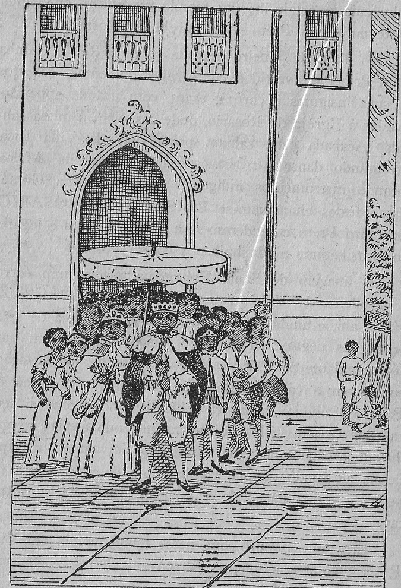
Bárbara Heliodora
Tal se chamou no século 18 a ilustre e virtuosa varoa, que se pode considerar a mais notável mulher mineira.
Residia na Vila de S. João DEL-REI, seu berço natal, em companhia de seus pais. Era então solteira, muito formosa, e dotada de rara inteligência e ilustração. Já nessa idade era exímia poetisa e compunha versos de muita arte e inspiração.
Veio estabelecer-se em S. João del-Rei, como ouvidor da comarca do Rio das Mortes, o Dr. INÁCIO DE ALVARENGA PEIXOTO, natural do Rio de Janeiro, o qual se formara na Universidade de Coimbra, em Portugal. Era Alvarenga, além de formado em leis, poeta distinto. Enamorando-se de Bárbara Heliodora, com ela casou no ano de 1778.
Alvarenga Peixoto deixou o cargo de ouvidor (que hoje corresponderia ao de juiz de direito) para dedicar-se à mineração. Tão feliz foi que em breve se tornou grande proprietário, e veio a adquirir grande cabedal. Possuía fazendas de cultura em S. João del-Rei, na Campanha e no Paraopeba, além de muitas minas de ouro. Era senhor de duzentos escravos.
Com o correr dos tempos, Alvarenga mudou-se para S. Gonçalo da Campanha, Sul de Minas. De seu casamento com Bárbara Heliodora nasceram uma filha (de quem adiante falaremos) e três filhos.
Sua casa em S. Gonçalo era a mais abastada do lugar. Não lhe faltava nada — ricas baixelas de prata, custosa mobília de talha, cortinas adamascadas nas janelas, muitas aias e mucamas para o serviço doméstico, mestres dos mais sábios daquele tempo para instruir e lecionar os filhos. D. Bárbara, sem ser soberba nem vaidosa, vivia cercada do maior luxo e comodidade: seus vestidos eram de seda e veludo, recobertos de joias e adereços. Aos domingos ia à igreja ouvir missa, transportada em liteira, carregada por escravos.
Em toda a Capitania de Minas Gerais não havia mulher, que fosse mais feliz do que Bárbara Heliodora. Seu marido tratava-a com o máximo carinho, dispensava-lhe a maior afeição. Sua filha mais velha, de 12 anos de idade, por nome MARIA EFIGÊNIA, era uma menina linda, como só poderia existir igual nos contos das fadas, — tão linda que todos lhe chamavam A PRINCESA DO BRASIL. Além disso muito prendada: sabia desenhar com perfeição; dançar com graça; bordar e costurar os mais finos trabalhos, além de falar com correção outras línguas além da nossa. Para isso Bárbara Heliodora contratou os professores mais afamados da Capitania, pagando-lhes generosamente.

Eis senão quando toda essa imensa felicidade se dissipou da noite para o dia: Bárbara Heliodora, da mulher mais feliz que era em Minas, veio a tornar-se a mais desditosa. Só não deixou de ser a mais distinta e valorosa das donas daquele tempo, pela têmpera de seu caráter, como adiante veremos:
Alvarenga Peixoto, patriota que sempre foi, desejava ardentemente a independência do Brasil, que era, naquela época, colônia de Portugal. Era tal o despotismo que pesava sobre Minas, determinado pela cobiça da Metrópole, que os Mineiros tramaram uma revolução para proclamar a Independência do Brasil. Veio a chamar-se essa revolução Inconfidência Mineira: nela tomou parte Alvarenga Peixoto, que até desejava que a capital de Minas fosse S. João del-Rei.
Não tardou que a conspiração fosse descoberta. Ordens superiores foram enviadas para prender os conjurados e tomar-lhes os bens.
Alvarenga Peixoto soube antecipadamente o que iria suceder. Alarmado com a desgraça, que viria atingir sua família, passou-lhe pelo espírito a ideia de salvar-se. Mas como? Só haveria um meio: — denunciar os companheiros, meio ilícito e vergonhoso. Mas o seu amor à mulher e aos filhos era tanto, que não desistiu logo daquele vil intento: resolveu aconselhar-se com sua esposa. O que ela dissesse era o que ele faria.
Nesse dia Alvarenga Peixoto entrou em casa com a fisionomia alterada: estava pálido, trêmulo, agitado. Sua mulher pressentiu que alguma coisa de extraordinário se passava.
— Está tudo perdido! exclamou arrebatadamente Alvarenga. A conjuração foi descoberta. Não tarda que me venham prender. Os nossos bens serão confiscados: ficarás pobre e na miséria. Mas não é tudo: talvez eu seja condenado à morte: ficarás viúva; nossos filhos, órfãos.
Bárbara Heliodora deixou escapar um grito de terror: esteve a ponto de desmaiar.
Alvarenga Peixoto, então, com a voz sumida, envergonhado de tão sinistro pensamento, revelou-o a sua mulher:
— Bárbara, poderei salvar-te e a nossos filhos.
A valorosa Mineira fitou-o espantada, sem compreender.
— Como? indagou ela.
Então Alvarenga baixou ainda mais a voz, e, a medo, disse-lhe:
— Denunciando os outros conjurados.
Bárbara tapou o rosto com as mãos, fulminada de vergonha. Cresceu para o marido, e, de pé, severa, enérgica, imperiosa, exclamou:
— Nunca! Seria uma traição! Prefiro a morte à desonra! Prefiro meus bens confiscados; prefiro a miséria, a viuvez, a orfandade, mas quero o teu nome — limpo, e a tua memória — honrada! Que o Rei mande sequestrar os nossos bens: farei entrega de tudo! Se te condenarem à morte, saberás morrer como um herói. A escada para o patíbulo é muitas vezes o degrau da imortalidade!
Alvarenga Peixoto, arrependido do que chegara a pensar num momento de alucinação, confirmou as palavras de sua mulher:
— Tens razão. O que me veio à ideia, foi um pensamento mau, que eu nunca teria coragem de realizar. Denunciar os meus companheiros? Nunca! Seria uma vileza e uma covardia. E eu nunca fui vil nem covarde!
Não tardou que Alvarenga Peixoto fosse preso, quando de passagem por S. João del-Rei.
Começaram daí os desgostos, que vieram atormentando a alma de D. Bárbara Heliodora até os últimos dias de sua vida. Nunca mais teve ela sequer um momento de felicidade. Tornou-se verdadeira mártir, uma santa, uma heroína.
De S. João del-Rei foi seu marido remetido para a Ilha das Cobras, onde, durante 2 anos, esteve algemado e encerrado, aguardando julgamento.
Na prisão compôs Alvarenga Peixoto os seguintes sentidos e belíssimos versos, em que pranteava a saudade da esposa e da filha:
“Bárbara bela,
Do Norte estrela,
Que o meu destino
Sabes guiar;
De ti ausente,
Triste somente,
As horas passo
A suspirar.
Por entre as penhas
De incultas brenhas,
Cansa-me a vista
De te buscar.
Porém não vejo
Mais que o desejo
Sem esperança
De te encontrar.
Eu bem queria
A noite e o dia
Sempre contigo
Poder passar,
Mas orgulhosa
Sorte invejosa
Desta fortuna
Me quer privar.
Tu, entre os braços,
Ternos abraços
Da filha amada
Podes gozar;
Priva-me a estrela
De ti e dela:
Busca dois modos
De me matar!”
Logo após a prisão foi a casa de Bárbara, na Campanha, invadida pelas autoridades, que foram intimá-la a entregar todos os bens do casal. A virtuosa matrona não ocultou nada — fez entrega de tudo, até das joias que ganhara de seu marido, inclusive uma caixa de rapé, em que havia o seu retrato circulado de pedras preciosas.
Como, porém, metade dos bens do casal lhe pertencia, requereu ela a restituição dessa metade, no que foi atendida, como aliás era de inteira justiça. Com essa metade pagou as dívidas de seu marido, e continuou a educação de seus filhos.
Para daí a três anos estava-lhe reservado o maior dos golpes — a condenação de seu marido à morte! Resignada, Bárbara Heliodora nem um momento se arrependeu de ter aconselhado a seu marido que não denunciasse os companheiros. Por aquele preço seria muito amarga a sua liberdade! Graças, porém, à clemência da Rainha D. Maria I, a condenação à morte foi comutada na de degredo perpétuo para a África.
A mesma sentença, que condenou Alvarenga ao exílio, declarou infames seus filhos e netos! Tamanho foi o desgosto, que com isso sofreu o cândido lírio da Campanha, a meiga e formosíssima Maria Efigênia, que não pôde sobreviver à vergonha, que assim lhe vinha manchar o nome por toda a vida — finou-se de pesar, aos 15 anos de idade, em pleno esplendor de graça e beleza.
Alvarenga embarcou com outros degredados num navio de vela, que o levou para Angola. Por uma irrisão do destino esse navio tinha quase o apelido de sua filha — chamava-se N. S. da Conceição Princesa do Brasil. Tudo conspirava para golpear-lhe o coração de pai extremoso. Tão insalubre e doentia era a região, a que foi atirado, que o mau clima ajudou a matá-lo. Depressa morreu, menos dos ares pesteados que respirava, que das saudades da Pátria e da família, de quem nunca teve notícias.

Tantos desgostos acabrunharam a tal ponto o coração de Bárbara Heliodora, que a triste senhora acabou por perder a razão — enlouqueceu. Nesse estado era vista a vagar pelas ruas de S. Gonçalo, com os cabelos desgrenhados, o olhar desvairado, as vestes rotas, a proferir palavras sem sentido, as quais eram entrecortadas do nome de sua filha e do nome de seu marido.
Marília de Dirceu
D. Maria Doroteia Joaquina de Seixas foi, no seu tempo, a moça mais bela e formosa de VILA RICA.
Tinha ela de vinte a vinte e dois anos de idade, quando veio estabelecer-se em Ouro Preto o doutor TOMÁS ANTÔNIO GONZAGA, nomeado para exercer o cargo de Ouvidor. Gonzaga era português de nascimento, mas filho de pais brasileiros.
Impressionado com a beleza extraordinária da moça mineira, Gonzaga resolveu pedi-la em casamento. Acontecia, porém, que Gonzaga era magistrado, e os magistrados não podiam casar sem licença da Coroa. De sorte que o casamento de Gonzaga só poderia realizar-se com o consentimento da Corte de Portugal. Gonzaga fez então um requerimento, em que pedia licença, e ficou esperando o despacho, acreditando que aquela não lhe seria recusada.
Enquanto esperava, ia o próprio Gonzaga bordando com suas mãos, o vestido de noiva de sua futura esposa, servindo-se para isso de um dedal e de uma agulha de ouro. Também lhe compunha versos, versos que depois foram publicados em livro intitulado Marília de Dirceu. Tão bonitos eram esses versos que foram traduzidos em diversas línguas, e o livro Marília de Dirceu foi, depois dos Lusíadas de Camões, o livro que tirou mais edições em nossa língua.
Marília era o nome, que GONZAGA lhe deu: Dirceu era o nome, que Gonzaga adotou para si próprio, pois naquele tempo era moda os poetas escolherem outro nome, diferente do de batismo. Desde a publicação do livro de poesias ficou dona Maria Doroteia conhecida por Marília de Dirceu, nome que a imortalizou.
Além de formosa, Marília era moça muito séria e comportada. Apesar de noiva de Gonzaga, esperava a decisão do casamento para só então se aproximar dele. De sorte que só se viam de longe, sem ter ocasião de trocar palavra um com outro. Naquele tempo os costumes eram muito severos.
Aconteceu, porém, que Gonzaga tomou parte na Inconfidência Mineira. Descoberta esta, foi Gonzaga preso e remetido para o Rio de Janeiro. Daí foi degredado para a África.
Gonzaga, ao saber que seria deportado para a África, e tendo deixado de ser magistrado (pois fora condenado), mandou convidar Marília a casar com ele e a partirem depois juntos para o exílio. Gonzaga, porém, não se portara bem no processo, que sofreu — negou que fosse inconfidente, arrumou a culpa para cima dos outros, e ainda fez versos em que lisonjeava o Visconde de Barbacena (o mesmo que o mandara prender) para ver se, por esse meio, obteria o seu perdão. Sabendo disso Marília, e patriota como toda Mineira, negou-se a casar com ele. Todavia conservou-se fiel à sua memória (que era o mais que ela podia fazer), e veio a morrer solteira. Ao ser enterrada, seu corpo foi vestido de virgem, de véu e grinalda (1). Faleceu com a idade de 86 anos, em 1858.
Depois da publicação do livro Marília de Dirceu, a fama da beleza de dona Maria Doroteia espalhou-se por toda parte. A tal ponto que muitas pessoas foram a Ouro Preto só para conhecê-la. Ela, porém, modesta e despretensiosa, escondia-se para não ser vista. Só saía à rua para ir à igreja. Vivia em casa, quieta no seu canto.
Gonzaga, enquanto esteve preso na Ilha das Cobras, não deixou de fazer-lhe versos. Não tendo, porém, nem tinta, nem papel, escrevia os versos na parede. Servia de tinta o fumo da candeia; servia de caneta o cabo das laranjas, que lhe davam como sustento.
Gonzaga não foi fiel a Marília como esta lhe soube ser. Chegando à África, em Moçambique, casou com uma jovem por nome Juliana Mascarenhas. Pouco depois, porém, enlouquecia, ralado de saudades do Brasil. Não levou muito tempo — morreu.
(1) J. NORBERTO — Brasileiras Celebres, pág. 178.
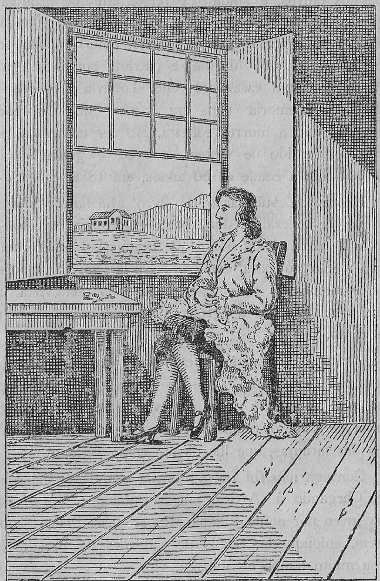
Marília de Dirceu foi sepultada na Igreja de São Francisco de Assis, onde ainda se pode ver a cova, que lhe recolheu os últimos despojos. Também a casa, onde ela morreu, ainda existe em Ouro Preto: era uma casa não muito alta, com 7 janelas, tendo na frente um campo gramado. Em seu lugar o Governo do Estado erigiu um grupo escolar, que recebeu o seu nome: Grupo Marília de Dirceu.

Marília de Dirceu é digna de nossa veneração. Foi bela sem ser vaidosa. Foi patriota, de como deu prova, negando-se a unir-se a um homem, que fraqueara diante da Justiça. Foi virtuosa, modesta, fiel e sensata. Se o seu nome se imortalizou, levado pela fama e pela glória do poeta, que a decantou, — sua memória deve perpetuar-se no coração de todos os Mineiros pela vida exemplar, que foi a sua.
O Caso da Maçã
Depois de descoberta a Inconfidência Mineira foram presos os conjurados, que se achavam em Minas, e conduzidos (algemados e escoltados) para o Rio de Janeiro, onde ia ser instaurado segundo processo (devassa), pois o primeiro já fora aberto em Vila Rica perante o Visconde de Barbacena.
Durou o processo três anos. Foram três anos de tormento e de angústias para os míseros Inconfidentes, em dúvida acerca da sorte, que os esperava, mas com a certeza consoladora de que, com o seu ato julgado “infame” pela Corte de Portugal, tinham punido (1) pela liberdade e independência da Pátria.
(1) NOTA PARA PROFESSOR — O verbo punir na acepção de pugnar é um classicismo, que se radicou no dialeto mineiro. Vid. Caldas Aulete, que cita os seguintes exemplos de Felinto Elísio: “Que punisse, pois, pela honra e decoro de Sua Alteza — Os que vinham punir pelos seus direitos.” A estes acrescentaremos o seguinte, que colhemos em Garrett: Achas que fizemos mal em punir por nossos direitos? — Alfageme, ato III, cena I.
Durante esse tempo os Inconfidentes ficaram encerrados incomunicáveis, em subterrâneos existentes na Ilha das Cobras, isto é, em prisões infectas abaixo do nível do mar, verdadeiras masmorras, onde lhes faltava o ar e a luz, onde a umidade era tanta que lhes enregelava os membros, onde mais pareciam estar sepultados vivos do que detidos pelas autoridades!
Entre os inconfidentes aí encerrados achava-se o Tenente-Coronel Francisco de Paula Freire de Andrada, descendente, por parte de pai, do afamado Conde de Bobadela e, por parte de mãe, da família Correia de Sá e Benevides. Ambas essas famílias eram consideradas em Lisboa como nobres, e aí residiam, vivendo em amistosas relações com a Família Real.
Ora, como naquele tempo “morrer na forca” era considerado “morte infamante”, morte vergonhosa, — os parentes de Francisco de Paula Freire de Andrada empenhavam-se junto da Rainha de Portugal para que a provável condenação à forca de seu parente fosse “comutada”, isto é, fosse convertida em outra pena menor.
Tinha Freire de Andrada uma irmã, igualmente Brasileira, a qual residia no Rio de Janeiro, e era casada com abastado negociante Português, estabelecido na rua do Ouvidor, a poucos passos da Igreja da Cruz dos Militares. Era o cunhado de Francisco de Paula um espírito absolutista e intransigente, o qual não perdoava ao irmão de sua esposa ter tido a ousadia de sublevar Minas para proclamar a Independência do Brasil!
A irmã de Freire de Andrada, muito bondosa, muito carinhosa, interessava-se esforçadamente pela sorte de seu irmão. Para isso correspondia-se assiduamente com a família Freire de Andrada, residente em Lisboa. Carta ia, carta vinha, — em todas se tratava a sorte provável, que teria o desventurado Inconfidente. Ora as cartas deixavam ver o receio de que ele seria condenado à forca; ora apontavam a esperança de que essa pena seria comutada.
Depois de muitas cartas incertas, veio afinal uma (foi isso em 1791), que, muito em segredo, comunicava à irmã de Francisco de Paula que tinha sido lavrada em Lisboa a Carta Régia de 15 de outubro de 1790, a qual comutara a pena de morte a todos os conjurados, exceto a Tiradentes, mas que a referida Carta Régia só se tornaria pública depois que o Tribunal houvesse condenado os réus à morte!
Queria a Metrópole que os conjurados passassem primeiro pelo choque de se saberem condenados à morte, para, só depois desse grande tormento de espírito, ser-lhes dada a notícia de que a pena de morte fora comutada na de exílio ou desterro para a África. Supremo requinte de crueldade!
Ao receber a carta com a grata notícia, a distinta senhora ficou logo muito desejosa de levá-la por portas travessas ao conhecimento de seu desventurado irmão. Mas, como? Os inconfidentes eram guardados com sentinela à vista: nem sequer se comunicavam entre si — cada um morava apartado dos outros em sua cela. As únicas pessoas com quem tratavam, eram os carcereiros, os sentinelas, as autoridades, os padres, que de vez em quando iam exortá-los a sofrer com resignação os tormentos, por que estavam passando. Por intermédio dos primeiros ela nada conseguiria — seria até comprometer-se (e comprometer seu irmão) arriscar-se por esse lado.
Estava nessa dúvida, quando um raio de esperança lhe veio aclarar o espírito:
— E, se tentasse arranjar como intermediário um dos padres?
Os padres é verdade que eram muito tementes à Coroa e muito fiéis à Metrópole, mas, por outro lado, tinham muito dó dos pobres conjurados, e eram até os encarregados de levar-lhes os socorros espirituais e de mitigar-lhes o sofrimento.
Disposta a pôr em prática a ideia, que lhe acudiu, a resoluta senhora tomou para seu confessor um dos padres encarregados de assistir aos Inconfidentes. Por este padre tinha ela notícia de como ia seu irmão, de como vivia atormentado com a quase certeza de que seria condenado à forca, de como se consumia no fundo de uma enxovia, já do mau passadio que lhe davam, já dos desgostos por que ia passando.
Por fim a piedosa senhora resolveu encarregar o padre da melindrosa missão. Mas, como? Dizer-lhe abertamente, palavra por palavra, que transmitisse a seu irmão o que dizia a carta? Com certeza o padre não se prestaria a isso. Teria, pois, de recorrer a um meio, ao mesmo tempo encoberto e inocente, que permitisse levar a notícia a seu destino, sem que o portador ficasse comprometido.
Estava a carinhosa irmã de Freire de Andrada a assuntar qual seria o meio, quando sucedeu receber de presente pequena partida de saborosas maçãs. Foi pronto receber as maçãs, e num átomo teve a inspiração de mandar uma de presente a seu irmão, por intermédio do padre, colocando no interior da fruta, disfarçadamente, um bilhete com a grata notícia.

Assim fez. Com um canivete bastante afiado abriu no fundo da parte mais côncava da maçã uma fina entalha, e sacou para fora um pequeno batoque de forma piramidal. Pela abertura feita escavou um pouco do miolo da fruta, e, no vão que ficou, introduziu uma tirazinha de papel toda dobrada, onde se lia, escrito com sua letra:
“Com certeza comutação da pena de morte à última hora.”
Em seguida tornou a adaptar o batoque à fruta com tanta segurança e perfeição, que ninguém descobriria coisa alguma.
Isto feito, no dia seguinte pediu ela a seu confessor, chorando, que se prestasse a “levar aquela maçã de presente a seu irmão”. O padre aceitou a incumbência, guardou a maçã em um dos grandes bolsos de sua batina, e nesse mesmo dia a entregou na prisão a Francisco de Paula Freire de Andrada.
Ao receber a maçã das mãos do padre, Freire de Andrada ficou tão agradecido ao confessor de sua irmã que lhe beijou as mãos:
— Obrigado, meu padre, mil vezes obrigado. Rogo-lhe que agradeça por mim à minha triste e amada irmã.
Ia continuar, mas logo se calou, porque teve outra ideia...
— Outros a quem arrastei na desgraça, merecem, mais do que eu, ser consolados... Meu padre, complete a sua obra de piedade. Leve esta maçã, de minha parte, a meu infortunado amigo e companheiro de desgraça o Sr. Vigário Toledo.
O padre enterneceu-se ante o altruísmo de Francisco de Paula, que, em vez de lembrar-se primeiro de si (como faria, se fosse egoísta), se lembrou antes do amigo, que por instigação sua entrara na conspiração: horas depois fazia entrega da maçã ao Vigário Carlos Correia de Toledo.
Este, ao partir a maçã para comer, viu cair o bilhetinho. Abriu-o sofregamente e leu-o. A notícia não lhe causou o regozijo, que causaria a Freire de Andrada, ou a outro conjurado secular, pois os conjurados eclesiásticos, em razão de seu caráter sacerdotal, não podiam ser condenados à morte. Era uma espécie de privilégio, de que os padres gozavam (1).
Toledo imaginou, então, que Freire de Andrada lhe mandara aquela notícia, para que fosse transmitida aos outros conjurados. Mas, incomunicável como se achava, não pôde passá-la a seus companheiros.
Assim, o segredo, que a irmã de Freire de Andrada com tanto trabalho encaminhara às suas mãos, extraviara-se e não chegara ao conhecimento do infortunado Inconfidente! E Toledo estava na ilusão de que este sabia de tudo que ia acontecer! Como as aparências iludem em certos momentos da vida!
(1) Havia 5 padres na Conspiração Mineira: cônego Luís Vieira da Silva, vigário Toledo, padre Rolim, padre José Lopes de Oliveira e padre Manuel Rodrigues da Costa.
A execução dos conjurados estava marcada para o dia 21 de abril. Os juízes do Tribunal (alçada) até o último momento demoraram a leitura da comutação da pena lavrada dezoito meses antes, retendo-a em seu poder e em segredo todo este tempo! Assim faziam para mais agravar o padecimento moral dos infelizes patriotas mineiros. Corações empedrados os desses homens, que juízes não eram, mas carrascos, porque a missão da Justiça é julgar e não torturar!
A noite de 20 para 21 de abril de 1792 foi a noite sinistra, em que os réus deviam preparar-se para no dia seguinte receber a morte. Para isso reuniram-se numa sala chamada Oratório, e aí foram confessados por frades franciscanos, que os encorajaram a sofrer com resignação a última prova — o suplício infamante da forca. Como o padre Toledo e os demais conjurados eclesiásticos foram dispensados de comparecer ao Oratório, — continuou Freire de Andrada na ignorância do segredo, que sua irmã lhe fizera anunciar.
Noite horrível foi essa, em que se debateu o espírito de Freire de Andrada, não porque se acovardasse em face da morte, mas porque, pertencendo a família nobre, se envergonharia de subir à forca, — pois iria desmerecer a hierarquia de sua ilustre família, além da sua própria. Naquele tempo os preconceitos de aristocracia e nobreza eram muito acentuados. O suplício da forca era então uma execução infamante, só reservada aos indivíduos da última degradação social. Desejava Freire de Andrada que o enforcamento fosse substituído pela decapitação, ou pelo fuzilamento, mas, como a substituição representava uma comutação de pena, só poderia ser decretada pelo único poder competente — a rainha de Portugal.
Sem esperanças, desalentado, viu raiar o dia 21 de abril. Pela manhã, reunidos os Inconfidentes na sala da Alçada, o escrivão do Tribunal leu o acórdão pelo qual, de conformidade com o disposto na Carta Régia de 15 de outubro de 1790, era a pena de morte comutada na de degredo para a África, exceção feita de Tiradentes, que seria supliciado. Em seguida foram tiradas as algemas a todos os conjurados, exceto a Tiradentes.
Freire de Andrada não desejava fugir à morte: desejava apenas que a execução fosse outra qualquer, — menos a da forca, incompatível com a sua condição de nobre. Ao ouvir a comunicação oficial de que a sua vida seria poupada e de que só Tiradentes teria a glória de morrer, — longe de alegrar-se, entristeceu. Invejou a sorte de Tiradentes, que iria ficar na História como o Protomártir da República. Pôs-se então a contemplar Tiradentes, que lá estava no meio da sala, calmo e sorridente, com os pulsos algemados — e, embevecido, extático, Freire de Andrada via agora no simples alferes de cavalaria, ontem seu comandado e subalterno, o Apóstolo da Liberdade, o Redivivo da História, o Gênio da Independência, a Suprema Encarnação da Pátria!
Tiradentes
Assim se chamava, por alcunha do povo (porque nas horas vagas exercia com grande perícia a profissão de dentista), o alferes de cavalaria Joaquim José da Silva Xavier, notabilíssimo Mineiro, natural da comarca do RIO DAS MORTES (hoje município de São João del-Rei), o qual estava fadado, por sua grande abnegação patriótica, a imortalizar-se na História como o Protomártir da República. Foi o chefe de uma revolução, que rebentou em VILA RICA (Ouro Preto), no ano de 1789, para proclamar a Independência do Brasil. Essa revolução tomou depois o nome de Inconfidência Mineira, que lhe foi dado pelas autoridades portuguesas.
Desde o caso do MORRO DA QUEIMADA (conhecido na História por Sedição de Vila Rica), que atrás deixamos narrado, — que o povo mineiro vinha pensando em sacudir o jugo e a tirania da Metrópole. Tiradentes inspirou-se em Filipe dos Santos.
Por volta do ano de 1788 o despotismo tinha atingido o seu mais alto grau. Tendo-se esgotado, havia já alguns anos, as minas de ouro e diamantes, e sendo o povo obrigado a contribuir todos os anos com uma soma certa de ouro (quer as minas produzissem, quer não), — aconteceu que o povo se foi atrasando, com isso a dívida foi crescendo, crescendo, atingindo em 1789 a 600 arrobas de ouro.

Não tendo o povo donde tirar para pagar (porque as minas estavam esgotadas), resolveu fundar fábricas de tecidos. Muitas fábricas foram então fundadas, atingindo a centenas de teares. Iam os Mineiros começar a prosperar na indústria, — quando a Corte de Portugal, tendo notícias do sucedido, ordenou por alvará que fossem destruídas todas as fábricas! (1). Ficariam assim os Brasileiros obrigados a só vestir do pano, que fosse importado de Portugal, o qual era de péssima qualidade e custava três vezes mais do seu valor! Se bem a Corte de Portugal o ordenou, melhor o executaram os agentes da Real Fazenda — foram destruídas todas as fábricas, com grande prejuízo das pessoas, que haviam empatado seus capitais na montagem dos maquinismos!
(1) Alvará de 10 de janeiro de 1785.
Por outro lado outras misérias oprimiam o povo: o governo da Metrópole recusava-se a abrir estradas para trânsito do comércio, e proibia a qualquer particular que as abrisse por conta própria; recusava-se a dar instrução às crianças e negava-se a abrir escolas públicas, com medo de que, instruindo-se, ficassem os Brasileiros conhecendo melhor os seus direitos; negava-se a fornecer linhas de correio às principais vilas e pousos; as famílias eram obrigadas a hospedar em suas casas a qualquer soldado (dragão), que pedisse pousada; eram recrutados moços das melhores famílias, para ir combater no sul, na guerra que Portugal mantinha contra a Espanha.
Finalmente, como se tudo isso não bastasse, a Corte de Portugal ordenou ao governador da Capitania de Minas (Visconde de Barbacena) que lançasse a derrama, isto é, que cobrasse os impostos atrasados do quinto do ouro, que montavam a 600 arrobas, sob pena de serem tomados os bens dos devedores.
Foi quando um grupo de patriotas achou que tinha chegado o momento de acabar de uma vez com tanto despotismo. O povo achava-se muito descontente, de sorte que podiam contar com o apoio do povo. À frente do grupo achava-se o alferes Joaquim José da Silva Xavier. Faziam parte da conspiração os homens mais importantes de Vila Rica, a saber: os doutores e poetas Cláudio Manuel da Costa, Tomás Antônio Gonzaga e Alvarenga Peixoto; o tenente-coronel Francisco de Paula Freire de Andrada, comandante da força; o engenheiro Dr. José Álvares Maciel; o Dr. Domingos Vidal; o sargento-mor Luís Piza; o cônego Luís Vieira da Silva; os padres Rolim e Toledo, além de outros.
O plano da conspiração era o seguinte:
Ficariam esperando o dia da derrama, isto é, o dia em que o governador mandasse cobrar os quintos atrasados. Nesse dia romperia a revolução em Vila Rica e em outros pontos da Capitania.
Tiradentes gritaria ao povo:
— Meus amigos, vencer ou morrer! Viva a Liberdade!
Nessa ocasião o comandante da força Freire de Andrada apareceria à frente do Regimento, aparentando opor-se ao levante, e perguntando aos revoltosos — o que queriam. Os conjurados responderiam:
— Queremos a Liberdade.
Então o comandante Freire de Andrada concordaria, dizendo:
— É justa a aspiração do povo.
Em seguida faria um discurso aos soldados, incitando-os a ficar ao lado do povo. Uma força destacada iria a Cachoeira do Campo, onde se achava o governador Visconde de Barbacena, a fim de prendê-lo. Daí iria o governador escoltado até à divisa com a Capitania do Rio — PARAIBUNA. Então seria mandado em paz, dizendo-se-lhe:
— Faça boa viagem, e diga lá em Portugal que na América já não se precisa de seus generais.
Depois de vencedora a revolução, o plano do governo seria o seguinte:
Proclamada a República, tratar-se-ia de conseguir que o Rio, S. Paulo e todas as outras capitanias do Brasil aderissem; seriam libertados todos os escravos; a capital de Minas e sede do governo seria transferida para S. João del-Rei; seria perdoada a dívida do quinto do ouro, assim como qualquer dívida para com a metrópole; seriam franqueadas as minas; o comércio e a indústria seriam livres; seria fundada uma universidade em Vila Rica; seriam fundadas muitas escolas públicas para instrução gratuita da mocidade; seriam suprimidos os impostos vexatórios; a bandeira da nova república seria um triângulo com a seguinte inscrição latina — Libertas quae sera tamen, — inscrição que hoje se lê nas armas do nosso Estado.

Tudo parecia indicar que a conspiração sairia triunfante, quando a traição de um, e depois de mais dois, de seus membros veio desconcertar todo o plano:
O Português Joaquim Silvério dos Reis era devedor à Real Fazenda de grande soma — nada menos de 173 contos; tinha ele sido processado por causa dessa dívida, sendo qualificado no processo de “fraudulento e falsificador”. Sabendo Silvério que um dos pontos da conspiração era — perdoar as dívidas para com a Metrópole, entrou para ela, não com o fim patriótico de proclamar a Independência do Brasil (pois, como estrangeiro que era, nada tinha com isso), mas com o fim ganancioso de obter mais tarde, com a vitória da revolução, o perdão da dívida. Era Silvério um refinado hipócrita, alma vil e peçonhenta, um espírito venal e mesquinho. Só há verdadeiramente uma palavra, que possa qualificá-lo — era um infame. Tal foi o fingimento, com que Silvério soube insinuar-se, que acabou por alcançar a confiança dos conjurados. Quando, porém, pressentiu que a conspiração poderia malograr-se, — resolveu ir denunciar todo o plano ao Visconde de Barbacena para, por essa forma, obter da Metrópole, como obteve, em recompensa de sua infâmia, o perdão da dívida.
A Joaquim Silvério dos Reis vieram juntar-se depois mais dois traidores e denunciantes, que também faziam parte da conspiração — Basílio de Brito e Inácio Correia Pamplona, igualmente estrangeiros, pois eram também Portugueses de nascimento.
Resta-nos o consolo de que dos três traidores nenhum era Brasileiro. Os Brasileiros mantiveram-se firmes até o último momento, sem fraquear, — e a prova de que não fraquearam é que os principais cabeças foram condenados à morte, sendo a pena comutada na de degredo para a África, exceto a Tiradentes, que foi enforcado.
Ao receber a denúncia, que lhe foi levada por Joaquim Silvério, que fez o Visconde de Barbacena? Mandou imediatamente suspender a derrama, e comunicou tudo ao Vice-Rei do Brasil Luís de Vasconcelos, residente no Rio de Janeiro. Coincidiu que nessa ocasião Tiradentes se achava no Rio de Janeiro, tratando de arranjar adesões para a revolta. O vice-rei deu ordem para prendê-lo, recebendo Tiradentes voz de prisão numa casa da rua dos Latoeiros (Gonçalves Dias), onde se achava hospedado. Em seguida o vice-rei mandou ordens a Minas para prender os outros conjurados, que foram transportados (algemados e escoltados) para o Rio de Janeiro, exceto Cláudio Manuel, que se suicidou em Vila Rica, na prisão.
O processo seguiu o seu curso, durando quase três anos. Ao cabo foi lida a sentença, que condenava à forca onze dos conjurados, sendo os demais condenados a degredo perpétuo na África. Foi lida a sentença na noite de 18 para 19 de abril de 1792, às tantas da madrugada, no meio de grande silêncio e escuridão, em que se achava mergulhada a sala chamada do Oratório, onde estavam presentes todos os conjurados.
Após a leitura da sentença foi permitido que os conjurados, depois de três anos de separados e incomunicáveis, pudessem, enfim, rever-se e comunicar-se. Foi uma cena das mais tocantes e comoventes. Cada conjurado sentia mais a sorte do companheiro e amigo do que a sua própria; procuravam consolar-se uns aos outros com palavras de afeto e carinho. Um pedia perdão a outro — cada qual se julgava culpado de haver arrastado o amigo e companheiro à conspiração. Só de uma coisa não se arrependiam — era de haverem tentado a Independência da Pátria, sacudir para sempre o jugo e opressão despótica da Metrópole. Em consciência, cada um sabia que tinha cumprido o seu dever.
O mais calmo e estoico de todos era Tiradentes. A sua figura já não era a de um homem — era a de um apóstolo, de um abnegado, de um mártir. Durante o processo, Tiradentes não cansou de dizer que o chefe da conspiração fora ele, que só ele fora o autor de tudo, — para assim chamar sobre si toda a culpa, e inocentar seus amigos. Vendo então que, apesar disso, não conseguira livrar da morte a 10 de seus companheiros, Tiradentes pediu-lhes insistentemente perdão, afirmando-lhes que por toda forma procurara inocentá-los, inculpando-se sozinho.
Daí a 48 horas, isto é, no dia 20 do mesmo mês e ano, foi lido o novo Acórdão do Tribunal, pelo qual era a pena de morte comutada na de degredo para a África, exceto a Tiradentes, que seria levado à forca. Imediatamente foram tiradas as algemas a todos os conjurados (exceto a Tiradentes), reunidos de novo na sala da Alçada.
Vendo, enfim, que, à última hora, era poupada a vida a seus companheiros, Tiradentes sentiu a alma expandir-se-lhe do mais vivo júbilo. Era isso mesmo o que ele sempre desejara — expiar sozinho a conjuração, e salvar da morte os seus infortunados amigos. Sorriu para todos, e, apesar de estar com as mãos algemadas, fez-lhes, de longe, um aceno de parabéns, congratulando-se com todos pela comutação da pena. Alma nobre, grande a desse supremo herói!
Chegou, enfim, o dia da execução do denodado patriota. O vice-rei do Brasil (que era então o Conde de Resende) fez enfeitar a cidade, como se fosse dia de festa. A tropa deixou os quartéis e veio para a rua, toda em uniforme de grande gala, fazendo soar estrepitosamente as suas charangas. Os oficiais e comandantes vinham montados em cavalos com ferraduras de prata e laços de fita nas caudas e nas crinas. Ainda mais: os arreios e estribos eram também de prata; as mantas eram de veludo ou de seda carmesim com franjas de ouro.
A forca fora armada no Campo da Lampadosa. Era alta, com 20 degraus, pelos quais se subia para o patíbulo: dominava toda a praça.
Organizou-se uma procissão fúnebre para conduzir o réu. Tiradentes ia na frente do cortejo, rodeado de frades, que o iam confortando com palavras ungidas de fé. Tiradentes vestia o traje dos condenados (alva), e trazia pendente do pescoço a corda dos enforcados (baraço). Levava à altura do peito um crucifixo, que aconchegava com ambas as mãos.
Durante o trajeto da prisão à forca Tiradentes caminhou sempre com passo seguro, — impávido, sem medo, firme, ereto! De vez em quando baixava os olhos até o crucifixo, e apertava-o mais de encontro ao peito.
Às 11 horas do dia devia ser a execução. Era um dia de pleno sol, de um céu limpo de nuvens. A praça em volta regurgitava de tropa e de uma multidão de curiosos, que se apinhavam para assistir o sacrifício.
Tiradentes, com as faces abrasadas, subiu com ligeireza os 20 degraus do patíbulo. Ao atingir o topo do estrado, Tiradentes, de pé, com a cabeça alta, com o seu manto sacudido e ondulado pelo vento, com a negra barba a cair-lhe em fios pelo peito, espraiou o olhar por toda a praça. Pela última vez contemplava a Pátria, — a Pátria por quem ia morrer e sacrificar-se, a Pátria por quem dava o seu sangue e a sua vida! A sua atitude nessa hora parecia sobrenatural: de pé no estrado, iluminado pelo sol, que lhe tecia uma auréola em torno da cabeça, altivo e sereno, desafiando com o olhar a tirania, lobrigando no horizonte, para daí a um século, o raiar da República no Brasil, saudando a Posteridade, que iria sagrá-lo Herói e Protomártir! O patíbulo não era para ele um degrau infamante, mas o pedestal da Glória e da Imortalidade! O seu enforcamento não seria a última das afrontas cuspida à sua face pela Metrópole, mas a maior, a mais excelsa de todas as glorificações!
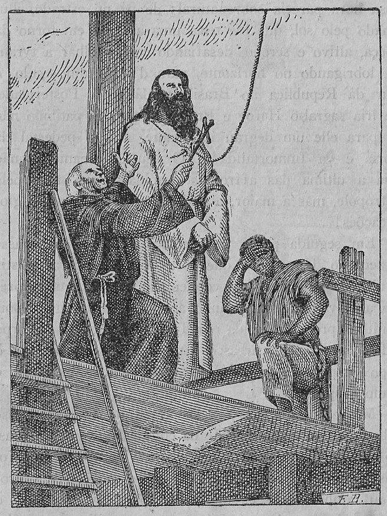
Em seguida pediu ao carrasco que não demorasse a execução. Um frade, que fora destacado para assistir os últimos momentos do condenado, fez pequena prédica alusiva ao ato, falando ao povo. Isto feito depois da última prece proferida por Tiradentes, foi o seu corpo içado à forca pelo carrasco. Em poucos segundos era o corpo suspenso da trave, — e Tiradentes exalava o último suspiro.
Morto Tiradentes, era de crer que tudo houvesse acabado em relação ao chefe da conjuração mineira. Mas, não. Não contente com o tirar-lhe a vida, a tirania foi mais longe — tripudiou também sobre seu cadáver, profanou também os seus últimos despojos, violou nele o respeito, que se deve a todos os mortos. Seu corpo foi esquartejado; sua cabeça, decepada, salgada e levada para Vila Rica, onde a fincaram num poste, no trecho mais frequentado, encerrada dentro de uma gaiola de ferro e guardada por sentinela à vista; seus quartos foram deixados ficar insepultos nos lugares, onde se haviam realizado as reuniões dos inconfidentes. Sua casa foi demolida; o terreno foi salgado, levantando-se em seu lugar um padrão infamante; seus bens foram tomados; seus descendentes foram declarados infames.
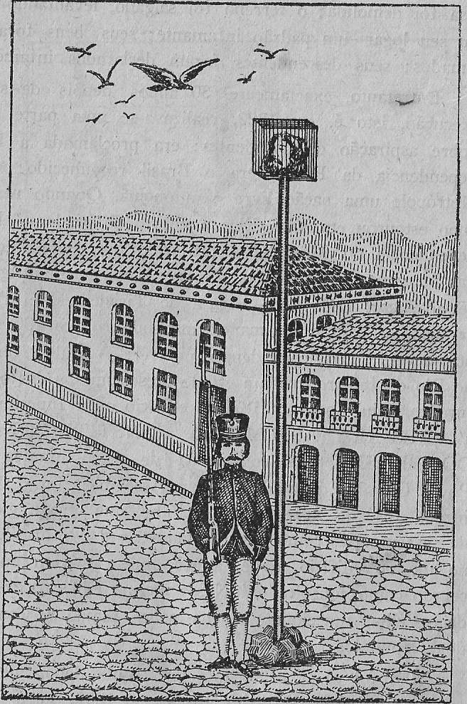
Entretanto, exatamente 30 anos depois de sua execução, isto é, em 1822, realizava-se uma parte da nobre aspiração de Tiradentes: era proclamada a Independência da Pátria, era o Brasil reconhecido pela Metrópole uma nação livre e autônoma. Quando nesse ano estourou em Vila Rica a notícia do brado — Independência ou Morte!, — proferido por Dom Pedro nas margens do rio Ipiranga, o povo em massa dirigiu-se ao lugar, onde fora a casa de Tiradentes, e daí arrancou o padrão infamante, mandado colocar 30 anos antes. Outra coincidência notável: A cadeia onde, no Rio de Janeiro, haviam estado presos muitos dos conjurados, veio a ser, em 1829, o edifício onde funcionou a PRIMEIRA ASSEMBLEIA CONSTITUCIONAL DO BRASIL, toda constituída de representantes do Povo. Um dos deputados a essa Assembleia foi o conjurado José de Resende Costa Filho, que teve a glória de assentar-se, como representante do povo brasileiro, no mesmo edifício, onde, anos antes, estivera encarcerado como conspirador! Nesse mesmo edifício, ex-Cadeia Velha, funcionou até há pouco tempo a Câmara dos Deputados.
Não foi só. Exatamente um século depois de estalar a Conjuração Mineira, isto é, em 1889, outra parte do sonho de Tiradentes convertia-se em realidade — era proclamada a República no Brasil. Desde então a História o sagrou Protomártir da República, e o dia de sua supliciação (21 de abril) ficou sendo considerado dia de festa nacional.

No lugar, onde se deu a sua execução, mandou o Governo da República levantar uma escola, que tem hoje o seu nome (Escola Tiradentes), onde todos os anos as crianças brasileiras entoam hinos à sua memória. Em Ouro Preto levantou-se-lhe uma estátua de bronze, assente em pedestal de granito, no mesmo local onde, um século antes, se fincara um poste com sua cabeça espetada. A estátua fica na praça, que tem hoje o seu nome (Praça Tiradentes), a mesma em que ficava o palácio do Governador da Capitania. A estátua dá costas para o palácio, significando assim o desprezo pela tirania. Tiradentes está com o hábito de condenado, com a cabeça altiva e ereta, — tal como enfrentou o despotismo na hora, em que ia ser executado.
O tempo veio provar que Tiradentes tinha razão: que sua aspiração era a de um povo inteiro, que seu desejo de Liberdade fora o mais legítimo de todos os direitos!
O Escravo Fiel
Era tal o despotismo que nos fins do século 18 oprimia geralmente a população da Capitania de Minas, que todas as classes sociais tomaram parte na Conjuração Mineira. Todas as camadas estavam ansiosas por sentir-se aliviadas do jugo da tirania, pois o despotismo era um e o mesmo para todos, — para ricos e pobres, para nobres e plebeus.
Era, pois, natural que sucedesse o que veio a suceder: que cada classe social tivesse o seu representante na Inconfidência Mineira, que cada profissão tomasse parte no levante. Assim foi que as letras e a jurisprudência estiveram representadas pelos poetas e doutores em leis Cláudio Manuel da Costa, Inácio Alvarenga Peixoto e Tomás Antônio Gonzaga; a classe militar pelo tenente-coronel comandante da força Francisco de Paula Freire de Andrada e pelo sargento-mor Luís Piza; a classe eclesiástica pelos padres Oliveira Rolim, Manuel Rodrigues da Costa, José Lopes de Oliveira, Carlos Correia de Toledo e Luís Vieira da Silva; a classe médica pelo Dr. Domingos Vidal; a engenharia e a indústria pelo Dr. José Álvares Maciel; a classe comercial ou comércio pelo negociante Domingos de Abreu Vieira; a classe caixeral pelo guarda-livros Vicente Vieira da Mota; a classe operária pelo sapateiro Manuel Capanema.
Os escravos não constituíam uma classe social, pois eram considerados “propriedade de seus senhores”; não gozavam as regalias, de que goza o homem, que está na plena posse de sua liberdade. Pois, não obstante, não deixou também a escravidão de tomar parte indireta na conjuração, podendo dizer-se que ela esteve representada pelo negro escravo Nicolau, herói do presente conto.
Era Nicolau escravo a serviço do conjurado DOMINGOS DE ABREU VIEIRA. Era este, na ocasião em que se descobriu a conjuração, negociante estabelecido em Vila Rica, tendo antes residido em Minas Novas (Norte de Minas), onde fora tenente-coronel de cavalaria. De setenta anos de idade, velho, alquebrado, Domingos Vieira era assistido em seus achaques por este escravo, que lhe votava dedicação extrema.
Descoberta a conjuração, arrolado Domingos Vieira entre os conjurados, — viu fugir de si muitos amigos, que na véspera se gabavam de contá-lo entre suas relações. As autoridades desconfiavam dos próprios amigos dos conjurados: a simples circunstância de ser “amigo de um inconfidente” tornava suspeita a qualquer pessoa. À vista disso Domingos Vieira viu-se abandonado por quase todos os amigos da véspera. Pois bem. Na hora, em que esse homem viu escapar a fortuna; na hora, em que se viu colhido nas malhas de um processo; na hora, em que viu fugir de si, horrorizados de seu contágio, homens da alta sociedade, que na véspera se diziam seus amigos, — quem é que lhe veio estender os braços, quem o veio amparar e consolar, quem lhe veio mitigar as agruras do calabouço? Um humilde negro, um simples escravo, a menos graduada de suas relações da véspera! Ah! Nessa hora Domingos Vieira compreendeu todo o alcance da generosidade de seu servo, e mediu também a mesquinhez da ingratidão de seus supostos amigos de ontem! Estendeu os braços algemados para Nicolau, que ali estava, de joelhos perante as autoridades, implorando, com lágrimas nos olhos, que lhe permitissem acompanhá-lo:
— Vem a mim, Nicolau. Na escala social foste ontem o último dos meus amigos, porque eras um simples escravo. Hoje, agora, és o maior de todos, senão o único de todos!
As autoridades enterneceram-se diante desse quadro, e permitiram a Nicolau que acompanhasse seu amo.
Domingos Vieira seguiu a cavalo, escoltado, até ao Rio. Nicolau seguiu a pé, atrás do animal, que seu amo montava. Parecia um cachorro acompanhando o dono, parecia a sombra acompanhando o corpo. Venceu passo por passo os 500 quilômetros da estrada, que comunicava Minas e Rio (Caminho Novo), cansou-se, esfalfou-se, extenuou-se, — mas nem um momento desfaleceu, nem um momento desistiu de acompanhar a seu amo e senhor!
No Rio de Janeiro foi Domingos Vieira encerrado em uma prisão subterrânea, quase desprovida de ar e de luz; chamava-se segredo essa espécie de túmulo de pessoas vivas. Nicolau foi admitido a ter entrada na mesma cela, pois não era conjurado. Aí se conservou, velando por seu amo durante todo o tempo, que durou o processo (3 anos), curando-o em seus achaques, consolando-o com palavras de afago e carinho.
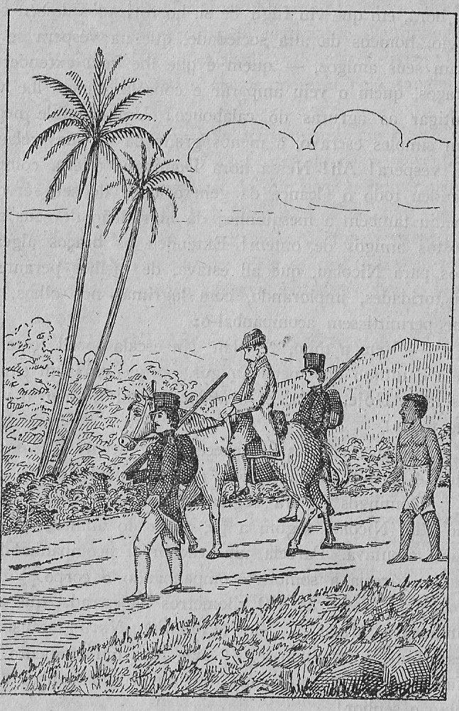
Domingos de Abreu Vieira teve a honra de ser um dos 11 conjurados condenados à morte. Preparava-se Nicolau para acompanhar seu senhor ao suplício, quando, dois dias depois, teve notícia de que a pena última fora comutada na de degredo perpétuo para a África. A seu amo designaram o presídio de Machimba para cumprir a pena de exílio.
Nicolau não o abandonou. Tomou com ele o mesmo navio de vela, que os levou para o degredo. Lá assistiu ao lado de seu amo, sempre devotado e solícito, até que a morte veio cerrar-lhe os olhos. Acompanhou-o depois até à última morada, e sobre a cova, que lhe recebeu os últimos despojos, desfiou lágrimas copiosas, — lágrimas que eram a sua alma a derreter-se em pranto e saudade!
O nome desse escravo, protótipo da fidelidade, não deve nunca ser esquecido: há de perpetuar-se na lembrança de todos os Mineiros através da consumação dos séculos.
Constante como a sua fidelidade há de ser a lembrança de seu nome no espírito dos povos.
O Diamante do Abaeté
Nos fins do século 18 (há, portanto, duzentos e tantos anos), veio estabelecer-se em Lavras do Funil, localidade de nosso Estado na zona do Oeste, um Paulista por nome Manuel Gomes Batista, mestiço, descendente da tribo dos Caiapós.
Para felicidade de Manuel Batista, aconteceu passar por aquelas paragens um seu parente e amigo, o qual lhe fez presente de um roteiro, que ensinava o caminho para uma jazida de ouro, ainda não explorada, lá para as bandas da MATA DA CORDA. O ouro era tanto nessa jazida — dizia — que só poderia ser transportado em carros de bois!
Manuel Batista, destemido e ambicioso, resolveu internar-se no Sertão para ir desencantar a mina. Para isso organizou uma bandeira com muitos faiscadores, levando também em sua companhia um padre português, que se dizia seu amigo, e se chamava Anastácio Gonçalves Pimentel.
Guiado sempre pelo roteiro, que seu parente lhe dera, e sem nunca desanimar, apesar dos muitos riscos e trabalhos, que sofreu durante a jornada, — Manuel Batista veio afinal a descobrir a mina, que era efetivamente de uma riqueza e abundância extraordinária.
Entre os garimpeiros, que foram com ele, um havia muito prático em mineração de diamantes.
Examinando o cascalho dos barrancos no rio ABAETÉ, o prático logo achou sinal da existência de diamantes. À vista disso propôs a Manuel Batista que explorasse o rio, abrindo uma cata. Assim fizeram, com grandes dificuldades, pois lhes faltavam os maquinismos e instrumentos necessários.
Da expedição do alferes Manuel Gomes Batista fazia parte um seu filho, rapaz de uns 15 anos de idade, de nome ANTÔNIO, o qual, apesar de não ser ainda homem feito, não duvidou acompanhar seu pai à excursão tão perigosa.
No segundo dia, em que estavam na extração do cascalho, à hora do almoço, foram os mineiros fazer a refeição no rancho, ficando sozinho, a tomar conta da cata, o filho de Manuel Batista, que se assentou numa grande pedra no meio do rio. Aconteceu que a água do rio começou a clarear, e não tardou muito que Antônio visse brilhar no fundo uma coisa luminosa a modo de um raio de sol. A princípio não deu atenção. Mas, por mais que desviasse os olhos, volta e meia lá estava o ponto luminoso do fundo do rio a ferir-lhe a vista. Então imaginou que poderia ser alguma pedra de valor.
Para ter a certeza resolveu descer ao poço. Lá chegando, ao tocar com as mãos no ponto luminoso, certificou-se de que era um cristal claríssimo, do tamanho de um ovo. Correu logo a mostrá-lo a seu pai. Este, pouco entendido, não conheceu o que era, mas chamou o prático para dar opinião. Mal o prático pegou na pedra, conheceu logo que era um grande diamante. Foi tal a sua alegria, que quase desmaiou de comoção. Disse a Manuel Batista:
— É um diamante, que todo o dinheiro do Reino não chega para pagar!
Manuel recomendou ao prático que guardasse segredo, prometendo recompensá-lo generosamente. Resolveu ir logo embora com o diamante. Suspendeu então o serviço da cata e deu ordem à bandeira de regressar.
O prático, porém, não guardou o segredo prometido, e foi revelá-lo ao padre Anastácio. Este tomou-se logo de grande ambição, e começou a desejar para si a posse do diamante, disposto até a tomá-lo, à força, daquele que sempre fora seu amigo, e a quem devia agasalho e hospitalidade.
Para conseguir a sua maldosa tenção, Anastácio chefiou uma revolta contra Manuel Batista. Este, porém, reunido a seu filho e a outros companheiros, que não o abandonaram, enfrentou os amotinados com toda a coragem. Empunhando uma espada, gritou com voz de trovão:
— Arreda! Arreda! Senão morre aos golpes deste ferro!
O padre teve medo; os seus cúmplices também. Então Manuel Batista e seus companheiros tomaram uma canoa, na qual se transportaram à outra margem do rio, deixando ficar os amotinados do outro lado. Saltando em terra, Manuel Batista inutilizou a canoa, para que a mesma não viesse, por qualquer forma, a servir de meio de transporte aos contrários.
Que fez o padre Anastácio? Rodeou por outro lado, sempre em perseguição de Batista, e foi denunciar às autoridades o achado do diamante.

Ora, naquela época os diamantes de mais de 24 quilates pertenciam à Real Fazenda; todo aquele que achasse um desses diamantes e o escondesse para si, era considerado contrabandista e punido pelas autoridades! Anastácio, desanimado de tomar o diamante do poder de Batista, resolveu vingar-se, denunciando-o às autoridades. Alma vil a desse homem, que assim traía o seu amigo e protetor!
As autoridades enviaram muitos soldados no encalço de Batista, que se retirara para PITANGUI. Ao ver a força toda municiada e muito superior em número à de que podia dispor, — Batista tomou a resolução de entregar o diamante aos potentados, e bradou:
— Viva El-Rei!
Houve então perfeita reconciliação. Trocaram-se cumprimentos de parte a parte, acabando em paz o que parecia destinado a luta sangrenta.
Manuel Batista fez solenemente entrega do diamante, que pesava sete oitavas e meia. De Pitangui foi o diamante conduzido, com grandes precauções, até Vila Rica, escoltado sempre pela força. De Vila Rica foi levado para o Rio de Janeiro, guardado por tropa de cavalaria. Do Rio de Janeiro foi embarcado numa frota e guardado num cofre forte com destino a Lisboa, para aí ser entregue ao rei de Portugal.
O padre Anastácio, querendo passar aos olhos do Rei como o descobridor do diamante (para assim ganhar alguma recompensa), embarcou para Lisboa.
Quando Manuel Batista soube do plano do padre, já este ia longe. Que fez então? Embarcou também, decidido a fazer valer os seus direitos. Levava consigo cartas e ofícios das principais autoridades, que o apresentavam ao rei como o legítimo descobridor do diamante do Abaeté.
Chegando a Lisboa, Manuel Batista conseguiu apresentar-se ao rei, que o recebeu muito bem. Desmascarado Anastácio com os documentos apresentados por Manuel Batista, foi aquele preso.
Manuel Batista, que era dotado de alma generosa, resolvido a perdoar o falso amigo, a sua traição, intercedeu em seu favor junto do Rei, conseguindo deste, não só que restituísse a liberdade ao padre, como que o nomeasse vigário de Pitangui. Assim pagaria o mal com o bem: em vez de vingar-se, retribuindo um mal com outro, perdoou a seu inimigo, e ainda o protegeu, empenhando-se com o rei para colocá-lo. Alma generosa e caritativa, digna de tomar-se por modelo em casos análogos!
Assim foi feito: o padre Anastácio, arrependido do que fizera, voltou às boas com Manuel Batista, e regressou ao Brasil para exercer o cargo de vigário daquela freguesia, cargo que desempenhou até a sua morte.
Quanto a Manuel Gomes Batista, — o rei, reconhecendo o quanto ele era leal e generoso, deu-lhe um conto de réis de gratificação pelo achado do diamante, nomeou-o TESOUREIRO DA REAL CASA DE FUNDIÇÃO DA VILA DE PITANGUI, cargo de alta distinção e grande confiança, o qual, é escusado dizer, o denodado Paulista desempenhou com toda a correção.
O Solitário de Lagoa Santa
Tal foi o grande sábio dinamarquês Doutor Peter (1) Lund, que, mudando-se de sua terra natal — a Dinamarca (pequeno reino, que fica no Norte da Europa), veio fixar residência em 1834 em nosso Estado, no município que é hoje de Santa Luzia do Rio das Velhas, no arraial de Lagoa Santa, poético povoado à margem da lagoa do mesmo nome, assim chamada porque suas águas são virtuosas, tendo a propriedade de curar certas doenças, segundo era crença do povo, e conforme depois ficou provado pela Ciência, do exame que delas se fez (2).
Por que razão, podendo esse homem tão sábio e ilustre viver na culta Europa, cercado de toda a comodidade, — preferiu vir insular-se no Brasil, em modesto recanto da que era então a Província de Minas? Porque estava tuberculoso, condenado a morrer, se ficasse na Europa, e porque os médicos lhe aconselharam procurar clima seco e temperado, único meio de poder prolongar sua útil e valiosa existência.
Atraído pela fama, que então já corria, de que o clima de Minas era o melhor do Brasil e muito benéfico para as afecções do peito, — o doutor Lund veio a princípio fixar-se no que é hoje o Município de Caeté, em lugar chamado Penha, ponto saudável. Como, porém, seja esse lugar muito soprado de ventos, que descem da Serra da Piedade, Lund, para não expor-se às correntes aéreas, resolveu mudar-se para outro ponto mais abrigado: foi então residir em Lagoa Santa, onde viveu 46 anos, conseguindo, graças ao clima eficaz daquela região, deter a marcha da doença, vindo a falecer em 1880, com 79 anos de idade.
(1) Pedro.
(2) Análise do médico italiano Dr. Cialli.
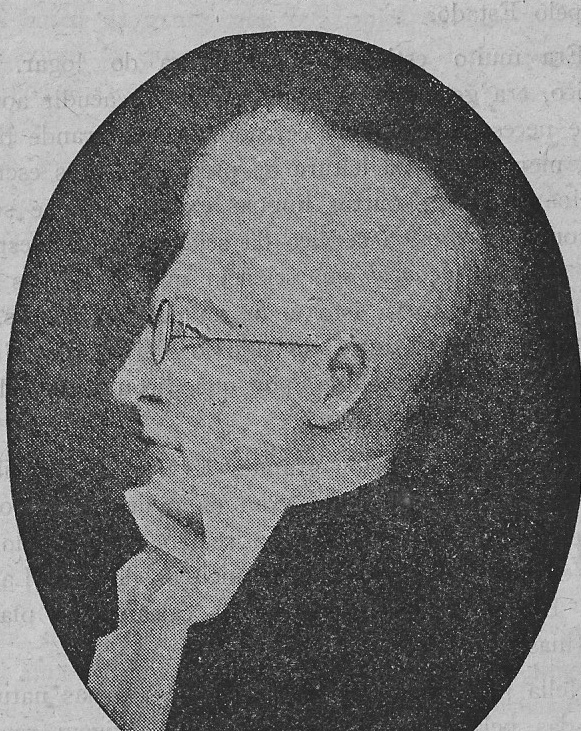
Era solteirão. Vivia em modesta casa própria, que ainda hoje se conserva em Lagoa Santa, e foi transformada em grupo escolar com seu nome, depois de adquirida pelo Estado.
Era muito estimado da pobreza do lugar. Sem ser rico, era generoso, sempre pronto a acudir aos pobres e necessitados. Vivia cercado de sua grande biblioteca, mergulhado na leitura de preciosas obras escritas em dinamarquês e outras línguas estrangeiras, e só saía, como veremos, a serviço da ciência de sua especialidade — a Paleontologia, ciência que estuda as antiguidades da História, isto é, os animais e plantas, que viveram na Terra antes do dilúvio. Vivia, pois, como eremita. Daí o apelido, por que ficou conhecido — O Solitário de Lagoa Santa.
O Dr. Lund prestou grandes serviços ao Brasil, em particular ao nosso Estado, com os muitos e importantes descobrimentos, que fez na região regada pelo Rio das Velhas e ocupada pelos municípios de Sete Lagoas, Santa Luzia e Curvelo — região calcária do planalto de Minas.
Nela percorreu 250 cavernas, — cavernas naturais, formadas pela ação do tempo e cuja origem remonta a muitos milhares de anos.
Dentre as grutas, que visitou, poderemos citar as do Sumidouro, Fidalgo, do Saco Comprido, do Mosquito, da Boca Grande e a célebre LAPA DE MAQUINÉ, a mais notável de todas, distante 6 quilômetros da Estação de Cordisburgo (E. F. Central do Brasil). Essa gruta é enorme, cheia de muitos corredores, de muitas salas e ziguezagues, onde podem caber em pé milhares de pessoas; é, por isso mesmo, muito perigosa, pois a gente corre risco de perder-se e de não acertar depois com a boca da gruta, que é a única saída; para entrar e correr a caverna é indispensável levar um guia, assim como acender lume, que supra a falta de luz natural.
Do teto da gruta descem colunas colossais em forma de pirâmides cônicas invertidas: chamam-se estalactites; do chão sobem para o teto outras colunas iguais: chamam-se estalagmites; as colunas encontram-se, soldam-se uma na outra e aparentam as formas mais esquisitas e variadas: uma parece um grande pingo de cera, que se derrete; outra parece enorme brinco ou pingente; uma, enorme dente lascado; outra, uma serra toda dentada; uma, um altar; outra, um ninho; esta, a copa de um chapéu; aquela, uma grande pia, etc., etc.
Essas estalactites e estalagmites são formadas pelas gotas d'água, que ficaram minando do teto da gruta durante séculos e séculos; são precisos muitos anos, muitos anos para que a filtração de uma gota, pingando noite e dia do teto da gruta, venha a formar essas colunas calcárias. Quando as duas colunas (a que sobe e a que desce) chegam a soldar-se (como sucedeu na Lapa de Maquiné), é porque a gruta é muito antiga, muito antiga, remontando a milhares de anos. É muito raro que tal aconteça.
O Doutor Lund, quando pela primeira vez visitou a Lapa de Maquiné, ficou tão maravilhado que exclamou:
— “Nunca meus olhos viram nada de mais belo e magnífico nos domínios da Natureza e da Arte!”
De todos os salões da imensa galeria, o mais surpreendente e fantástico é o terceiro, — tanto que o Dr. Lund lhe pôs o nome (que ainda hoje conserva) de Castelo das Fadas.
A Lapa de Maquiné não é apenas uma das portentosas belezas do Brasil: é uma das maravilhas da Criação.
Nessas cavernas encontrou ele esqueletos e caveiras de animais enormes, que existiram no planalto de Minas antes do Dilúvio (fósseis). O povo, em sua ignorância, supunha que tais ossadas fossem de “homens gigantes”, primitivos donos e moradores dessas cavernas. Lund, porém, com o seu grande saber, explicou que essas ossadas pertenceram a grandes mamíferos anteriores ao dilúvio (antediluvianos), a saber: o mastodonte, uma espécie de elefante em ponto grande; o megatério, uma espécie de rinoceronte em ponto grande, e o protopiteco, espécie de grande macaco medindo um metro e trinta centímetros de altura.
O Dr. Lund era membro notável da Academia da capital da Dinamarca (Copenhague) — a Academia de Ciências. Então começou ele a escrever em dinamarquês (sua língua natal) a descrição das ossadas, que tinha encontrado nas grutas do Vale do Rio das Velhas e mandava-a pelo correio para aquela Academia: esses seus artigos intitulavam-se Memórias. O nosso sábio Imperador Dom Pedro II (muito amigo de Lund, de quem foi admirador e protetor) mandou verter essas memórias para o francês, permitindo assim que na França ficassem conhecendo as preciosas particularidades históricas do planalto de Minas.
O Doutor Lund fez mais: Com toda a paciência armou e reconstituiu os esqueletos daqueles animais, e os remeteu para Copenhague, onde se acham num Museu chamado — Museu das Antiguidades Americanas, — em uma seção denominada “Seção Lund”. Outros foram por ele remetidos para o nosso Museu Nacional, no Rio de Janeiro, onde estão e podem ser vistos.
Além das “Memórias”, o Doutor Lund publicou outras obras, em que se ocupava das plantas (flora), dos animais, (fauna), e do terreno (geologia) da região do planalto mineiro.
Foi ele quem mais divulgou os segredos de nossas antiguidades pré-históricas: recebeu, por isso, o título de “Pai da Paleontologia Brasileira.”
Peter Lund era bacharel em ciências e letras e doutor em filosofia. Era homem alto, magro, louro, de suíças, sem bigode, pele clara, olhos azuis, testa larga, queixo afilado, olhos doces e suaves, e fala macia. Muito lhano e delicado, as suas maneiras eram as de um perfeito cavalheiro. Sobretudo era muito modesto.
Para perpetuar sua memória há na Estrada de Ferro Central do Brasil (Linha do Centro) uma estação com o seu nome — Estação Dr. Lund —, que é hoje um povoado com muitas casas, e que daqui a meio século será, provavelmente, uma cidade. E há na nossa Escola de Minas (em Ouro Preto), um seu retrato a óleo, que é sempre contemplado pelos mestres e alunos daquela Faculdade com grande veneração.
Os Quilombolas
Chamavam-se Quilombolas os negros escravos fugidos, que, constituindo-se em nação, passavam a habitar sítio longe das fazendas e das minas, no qual se fortificavam e viviam em plena liberdade. Tal sítio chamava-se quilombo.
Na Capitania de Minas, como em todo o Brasil, eram os escravos muito maltratados por seus senhores. Tratavam-nos como a animais, exigiam deles os serviços mais pesados: pela menor falta eram chicoteados, ou metidos no tronco.
Os homens eram empregados no serviço da lavoura e mineração; as mulheres, de preferência, no serviço doméstico, como aias, mucamas, etc. A gravura adiante representa 2 mucamas a fazer renda de bilro sob a vigilância da “sinhá” — a filha dos “amos” ou “senhores” da fazenda.
Dócil e resignada por natureza, a raça negra suportou até certo ponto os maus tratos de seus senhores. Por fim, desesperados, começaram a fugir muitos negros, indo refugiar-se entre o Rio das Mortes e o Rio Grande, num sítio denominado Campo Grande. Aí formaram uma nação, a qual tinha o seu rei, a sua rainha, o seu exército, os seus generais, além de muitas fortificações, casas de moradia, grandes plantações, etc.

Os negros fugidos eram perseguidos e capturados a troco de pingue propina, por indivíduos apelidados “capitães do mato”, que viviam de tão odioso mister. A gravura adiante representa um quilombola algemado, recém-capturado por um “capitão do mato”.
No século 18 a população de negros escravos era superior em Minas à de brancos e mulatos. Se entre os negros se desse uma sublevação geral, a raça branca e a mestiça correriam risco de ser suplantadas pelo número. Mas os negros eram muito broncos e estúpidos; além disso, não tinham instrução alguma: não conheciam o seu direito, não alcançavam a vantagem, que poderiam tirar, de se unirem todos contra a violência dos brancos. A falta de instrução é sempre causa de atraso e sujeição.

Esparramados pelo território de Minas houve no século 18 muitos quilombos, uns, maiores, outros, menores, que todos foram mandados destruir pelas autoridades. Os três quilombos mais notáveis foram: o de CAMPO GRANDE, que constitui objeto do presente conto; o de TENGO-TENGO (em Araxá), de que foi chefe notável negro por nome Ambrósio; o da SERRA NEGRA, que foi destruído pelo capitão Inácio de Oliveira Campos.
Os quilombolas do Campo Grande vieram a formar, no meado do século 18, nação respeitável e poderosa. Aí viviam os negros como se fossem homens livres, cultivando léguas e léguas de terra, sem ser incomodados nem incomodando a ninguém. Queriam somente a sua liberdade, desejo muito legítimo em todo homem, seja embora um negro.
Sabedores os quilombolas do Campo Grande de que seus irmãos continuavam a ser maltratados pelos senhores, resolveram sublevar, ao mesmo tempo, quatro das principais comarcas mineiras, assassinando todos os brancos e mulatos (excetuando as mulheres, que seriam poupadas), e assumir o governo da Capitania. Foi designado para o levante o dia 15 de abril de 1756, quinta-feira de Endoenças, dia em que o povo costumava estar todo nas cidades, assistindo os ofícios religiosos.
Se vingasse o sinistro plano dos míseros negros, seria um morticínio como poucos terá havido na História. Aconteceu, porém, que um dos negros, que estavam combinados para o levante, foi denunciar às autoridades a tenção de seus companheiros. As autoridades mandaram logo fechar as igrejas e prevenir aos brancos e mulatos que se acautelassem.
Era então governador da Capitania José Antônio Freire de Andrada, Conde de Bobadela, que, temendo que o quilombo de Campo Grande assumisse maiores proporções, e para punir o levante malogrado, incumbiu de exterminar os Palmares (1) de Minas ao Paulista Bartolomeu Bueno do Prado. Este desempenhou cabalmente as ordens recebidas. Era homem destemido e valente, mas de coração duro e espírito mau. Bueno, tendo marchado contra o reduto dos negros, exterminou-os a quase todos, tendo sido de 3.900 o número de escravos mortos. Não contente com isso, Bueno, para mais provar sua perversidade e malvadez, cortou as orelhas a todos eles, e, ao apresentar-se ao governador da Capitania, exibiu-lhe, como prova de sua façanha, os 3.900 pares de orelhas cortadas! Cúmulo da crueldade e da desfaçatez!
A expedição de Bueno constou de 600 homens; as despesas com a mesma montaram a 2.750 oitavas de ouro.
Os escravos que escaparam com vida, esses foram marcados com ferro em brasa em um dos ombros, com a letra F., abreviatura da palavra Fugido.
Decerto devia ser reprimido o plano sinistro dos negros quilombolas do Campo Grande, os quais queriam assassinar indistintamente todos os brancos e mulatos de Minas, sem lembrar-se de que só sobre os senhores, que maltratavam seus escravos, deveria recair o peso de seu ódio. Mas, por outro lado, é censurável o requinte de malvadez de Bartolomeu Bueno, chegando ao extremo de decepar as orelhas aos negros exterminados e de vir depois exibi-las como troféu de vitória!
(1) PALMARES — Nome de célebre república de negros, que existiu em Alagoas.
Não olvidemos que a escravidão é o maior dos atentados, e que o homem privado de sua liberdade é capaz, para readquiri-la, de ver-se arrastado à prática das maiores atrocidades.
Perdoemos aos quilombolas do Campo Grande o plano sinistro, que não chegou a realizar-se, em atenção aos muitos benefícios e aos assinalados serviços, que a raça negra prestou ao nosso Estado. A ela devemos grande parte do serviço da mineração, da extração do ouro e diamantes, — quase toda a riqueza agrícola e mineralógica do nosso opulento passado.
FIM
Índice
| Certidão | 2 | |
| Prefácio | 5 | |
| I | Os Bandeirantes | 9 |
| II | O Governador das Esmeraldas | 15 |
| III | A Lenda das Pedras Verdes | 20 |
| IV | Borba Gato | 25 |
| V | O Anhanguera | 30 |
| VI | As Minas de Ouro | 36 |
| VII | O Descobridor de Diamantes | 49 |
| VIII | O Livro da Capa Verde | 57 |
| IX | Cabeça de Ferro | 64 |
| X | Isidoro, o Mártir | 69 |
| XI | O Contratador de Diamantes | 77 |
| XII | O Capão da Traição | 87 |
| XIII | A Expedição do Caminho Novo | 92 |
| XIV | Morro da Queimada | 101 |
| XV | O Aleijadinho | 109 |
| XVI | Chico Rei | 113 |
| XVII | Bárbara Heliodora | 119 |
| XVIII | Marília de Dirceu | 129 |
| XIX | O Caso da Maçã | 135 |
| XX | Tiradentes | 144 |
| XXI | O Escravo Fiel | 159 |
| XXII | O Diamante do Abaeté | 164 |
| XXIII | O Solitário de Lagoa Santa | 170 |
| XXIV | Os Quilombolas | 176 |
Obras do mesmo Autor
| I | 1898 — Crótalos, primeiros versos, 70 págs., esgotada. | |
| II | 1904 — Cithara, novos versos, 90 págs., idem. | |
| III | 1909 — Da Linguagem em suas modalidades, tese a concurso, 62 págs., idem. | |
| IV | 1911 — Historias Varias, contos, 222 págs. | 2$500 |
| V | 1911 — O Governador das Esmeraldas, peça nacional histórica, em 3 atos, 104 págs., Livraria Alves. | 3$000 |
| VI | 1912 — Methodo de Analyse (Léxica e Lógica), na 10.ª edição, 224 páginas, Livraria Alves. | 4$500 |
| VII | 1913 — Historias da Terra Mineira, contos regionais, 180 págs., cartonado e ilustrado. | 4$000 |
| VIII | 1913 — Diccionario de Affixos, 230 páginas, atualmente na 3ª edição, refundida e aumentada. | 4$500 |
| IX | 1915 — Inno[?]ncia, peça nacional, em 5 atos, 104 págs., es[?]ot[?]. | |
| X | 1916 — Contos Moraes e Civicos do Brasil, 240 páginas. | 3$000 |
| XI | 1916 — Syntaxe de Concordancia, monografia gramatical, 250 págs., Livraria Alves, na 6ª edição. | 4$000 |
| XII | 1917 — Mil Quadras Brasileiras (folclore) 240 págs., Livraria Briguiet. | 2$000 |
| XIII | 1917 — Pontos de Historia do Brasil, para o Estado de Minas (2º, 3º e 4º Ano Primário). | 3$000 |
| XIV | 1917 — Theatro das Crianças (Monólogos e Diálogos, Comedias, Operetas, Auto do Natal, Hinos, Coros, Bailados), 304 págs., na 4ª ed. | 4$000 |
| XV | 1917 — Pontos de Geographia, para o Estado de Minas (2º, 3º e 4º Ano Primário). | 2$500 |
| XVI | 1918 — Pontos de Historia Natural, para o Estado de Minas (2º, 3º e 4º Ano Primário). | 2$500 |
| XVII | 1919 — Grammatica Expositiva Primaria, 208 págs., broch., ora na 4ª edição. | 2$500 |
| XVIII | 1919 — Orthographia, Dictado, Pontuação, Crase, 208 págs., brochado, ora na 3ª edição. | 2$500 |
| XIX | 1920 — Diccionario de Gallicismos, 250 págs., ora na 2ª edição, revista. | 4$000 |
| XX | 1921 — Diccionario de Raizes e Cognatos, 2ª edição, obra premiada pela Academia Brasileira de Letras. | 12$000 |
| XXI | 1922 — Pontos de Instrucção Moral e Civica, 129 páginas. | 2$500 |
| XXII | 1923 — Theatro Civico Escolar, 150 págs. | 2$500 |
| XXIII | 1924 — Syntaxe de Regencia, 204 págs., ora na 4ª edição. | 4$500 |
| XXIV | 1925 — Pontos de L. Patria (1º, 2º, 3º e 4º ano primário). | 2$500 |
| XXV | 1924 — Espelhos, novos versos. | 3$000 |
| XXVI | 1926 — Datas Nacionaes, 200 págs. | 3$000 |
| XXVII | 1927 — Pontos de Arithmetica (de colaboração com A. Péret). | 3$000 |
| XXVIII | 1927 — Exames de Admissão (154 páginas), Primeiro Volume. | 4$000 |
| XXIX | 1929 — Noções de Cousas (método Decroly). | 2$500 |
| XXX | 1929 — Exames de Admissão, 2º Volume. | 4$000 |
| XXXI | 1930 — Methodo de Redacção, ora na 5ª edição. | 4$500 |
| XXXII | 1932 — Syntaxe de Construcção. | 4$000 |
| XXXIII | 1932 — Theatro Pequeno, 150 págs. | 3$000 |